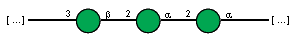
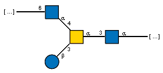
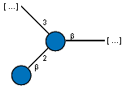

CD-HIT threshold: 99%
Length filter: min 320, max 600
Expansion threshold: e-value 1e-15
SSN threshold: score 100
Total number of proteins in network: 6186
Number of singletons: 21
Number of nodes in clusters: 6165
Number of clusters: 184
File with accessions in each cluster
2(548) 5(481) 1(291) 9(280) 30(240) 4(238) 59(152) 45(142) 6(137) 48(136) 20(129) 10(129) 8(127) 19(91) 15(89) 52(83) 86(82) 53(72) 17(69) 83(67) 38(66) 65(59) 25(58) 35(52) 71(48) 13(46) 80(45) 88(43) 24(43) 91(42) 7(41) 14(41) 29(40) 46(39) 42(37) 18(37) 84(36) 105(36) 56(35) 69(34) 96(33) 27(33) 97(30) 36(29) 121(28) 39(26) 99(25) 49(25) 3(24) 98(23) 66(22) 41(22) 40(22) 93(21) 76(21) 44(21) 22(21) 140(21) 23(20) 16(20) 72(19) 68(19) 64(19) 92(18) 75(18) 74(18) 63(18) 28(18) 104(18) 61(17) 32(17) 148(17) 142(17) 125(17) 118(17) 79(16) 78(16) 67(16) 55(16) 47(16) 137(16) 131(16) 124(16) 123(16) 11(16) 43(15) 141(15) 134(15) 12(15) 119(15) 109(15) 77(14) 33(14) 31(14) 138(14) 103(14) 100(14) 60(13) 57(13) 34(13) 116(13) 50(12) 130(12) 110(12) 26(11) 154(11) 153(11) 122(11) 94(10) 82(10) 62(10) 58(10) 158(10) 135(10) 120(10) 111(10) 106(10) 95(9) 87(9) 37(9) 169(9) 165(9) 147(9) 146(9) 133(9) 117(9) 102(9) 89(8) 70(8) 54(8) 160(8) 159(8) 156(8) 149(8) 143(8) 139(8) 115(8) 107(8) 21(7) 181(7) 172(7) 171(7) 168(7) 167(7) 129(7) 127(7) 126(7) 113(7) 108(7) 162(6) 155(6) 151(6) 132(6) 114(6) 101(6) 51(5) 179(5) 175(5) 152(5) 128(5) 85(4) 81(4) 73(4) 182(4) 178(4) 177(4) 166(4) 164(4) 163(4) 150(4) 112(4) 90(3) 184(3) 183(3) 176(3) 174(3) 170(3) 145(3) 144(3) 180(2) 173(2) 161(2) 157(2) 136(2)
Total number of members in cluster: 548
Average length of proteins in cluster: 448.2
| protein_accession | order | family | genus | species | serotype | WzyE |
|---|---|---|---|---|---|---|
| AAC45844.1 | Enterobacterales | Enterobacteriaceae | Escherichia | Escherichia coli | O8 | 0 |
| ACF61556.1 | Enterobacterales | Enterobacteriaceae | Salmonella | Salmonella enterica | ssp. enterica sv. Newport | 1 |
| ACF69242.1 | Enterobacterales | Enterobacteriaceae | Salmonella | Salmonella enterica | Heidelberg | 1 |
| WP_000055605.1 | Enterobacterales | Enterobacteriaceae | Salmonella | nan | ssp. enterica sv. Kentucky O8 98/39 | 1 |
| ACF89798.1 | Enterobacterales | Enterobacteriaceae | Salmonella | Salmonella enterica | Schwarzengrund | 1 |
| ACH73921.1 | Enterobacterales | Enterobacteriaceae | Salmonella | Salmonella enterica | Dublin | 1 |
| ACH50550.1 | Enterobacterales | Enterobacteriaceae | Salmonella | Salmonella enterica | Agona | 1 |
| CAS11643.1 | Enterobacterales | Enterobacteriaceae | Escherichia | Escherichia coli | O127 | 1 |
| CAR10598.2 | Enterobacterales | Enterobacteriaceae | Escherichia | Escherichia coli | O81 | 1 |
| BAI33073.1 | Enterobacterales | Enterobacteriaceae | Escherichia | Escherichia coli | O103 | 1 |
| ADT77417.1 | Enterobacterales | Enterobacteriaceae | Escherichia | Escherichia coli | O6 | 1 |
AAC45844.1:

CSDB record ID: 1509
-3)bDManp(1-2)aDManp(1-2)aDManp(1-
| order (count) | family (count) | genus (count) |
|---|---|---|
| Enterobacterales (491) | Enterobacteriaceae (235) | Enterobacter (60) |
| Escherichia (35) | ||
| Salmonella (23) | ||
| Citrobacter (22) | ||
| Klebsiella (13) | ||
| Cronobacter (11) | ||
| Kosakonia (8) | ||
| Cedecea (7) | ||
| Buttiauxella (6) | ||
| Kluyvera (4) | ||
| Raoultella (4) | ||
| Leclercia (4) | ||
| Pseudocitrobacter (3) | ||
| Pluralibacter (3) | ||
| Lelliottia (3) | ||
| Trabulsiella (2) | ||
| Phytobacter (2) | ||
| Atlantibacter (2) | ||
| Franconibacter (2) | ||
| Mangrovibacter (2) | ||
| Candidatus Symbiopectobacterium (2) | ||
| Yokenella (1) | ||
| Scandinavium (1) | ||
| Tenebrionibacter (1) | ||
| Siccibacter (1) | ||
| Shigella (1) | ||
| Plesiomonas (1) | ||
| Yersiniaceae (70) | Serratia (32) | |
| Yersinia (19) | ||
| Rahnella (9) | ||
| Rouxiella (4) | ||
| Chimaeribacter (2) | ||
| Candidatus Fukatsuia (1) | ||
| Ewingella (1) | ||
| Nissabacter (1) | ||
| Morganellaceae (65) | Xenorhabdus (20) | |
| Proteus (13) | ||
| Providencia (12) | ||
| Photorhabdus (10) | ||
| Morganella (5) | ||
| Arsenophonus (4) | ||
| Moellerella (1) | ||
| Pectobacteriaceae (54) | Dickeya (21) | |
| Pectobacterium (19) | ||
| Brenneria (6) | ||
| Lonsdalea (5) | ||
| Affinibrenneria (1) | ||
| Samsonia (1) | ||
| Musicola (1) | ||
| Erwiniaceae (52) | Pantoea (25) | |
| Erwinia (16) | ||
| nan (6) | ||
| Tatumella (4) | ||
| Mixta (3) | ||
| Izhakiella (2) | ||
| Phaseolibacter (1) | ||
| Hafniaceae (9) | Hafnia (4) | |
| Edwardsiella (3) | ||
| Enterobacillus (1) | ||
| Obesumbacterium (1) | ||
| Budviciaceae (3) | Jinshanibacter (1) | |
| Pragia (1) | ||
| Budvicia (1) | ||
| Bruguierivoracaceae (2) | Sodalis (2) | |
| Pasteurellales (42) | Pasteurellaceae (42) | Glaesserella (13) |
| Actinobacillus (8) | ||
| Mannheimia (7) | ||
| Haemophilus (3) | ||
| Ursidibacter (2) | ||
| Bibersteinia (2) | ||
| Lonepinella (1) | ||
| Nicoletella (1) | ||
| Muribacter (1) | ||
| Otariodibacter (1) | ||
| Burkholderiales (5) | Burkholderiaceae (5) | Paraburkholderia (3) |
| Mycoavidus (2) | ||
| Vibrionales (3) | Vibrionaceae (3) | Vibrio (2) |
| Aliivibrio (1) | ||
| Pseudomonadales (2) | Pseudomonadaceae (2) | Pseudomonas (2) |
| Flavobacteriales (1) | nan (2) | nan (6) |
| Alteromonadales (1) | Pseudoalteromonadaceae (1) | Flocculibacter (1) |
| Moraxellales (1) | Moraxellaceae (1) | Acinetobacter (1) |
| Xanthomonadales (1) | Rhodanobacteraceae (1) | Dyella (1) |
| nan (1) | nan (2) | nan (6) |
Total number of members in cluster: 481
Average length of proteins in cluster: 398.0
| protein_accession | order | family | genus | species | serotype | WzyE |
|---|---|---|---|---|---|---|
| CAI33309.1 | Lactobacillales | Streptococcaceae | Streptococcus | Streptococcus pneumoniae | 13 | 0 |
| CAI33441.1 | Lactobacillales | Streptococcaceae | Streptococcus | Streptococcus pneumoniae | 16A | 0 |
| CAI34080.1 | Lactobacillales | Streptococcaceae | Streptococcus | Streptococcus pneumoniae | 29 | 0 |
| CAI34348.1 | Lactobacillales | Streptococcaceae | Streptococcus | Streptococcus pneumoniae | 35F | 0 |
| CAI34286.1 | Lactobacillales | Streptococcaceae | Streptococcus | Streptococcus pneumoniae | 35A | 0 |
| CAI34310.1 | Lactobacillales | Streptococcaceae | Streptococcus | Streptococcus pneumoniae | 35B | 0 |
| CAI34328.1 | Lactobacillales | Streptococcaceae | Streptococcus | Streptococcus pneumoniae | 35C | 0 |
| CAI34369.1 | Lactobacillales | Streptococcaceae | Streptococcus | Streptococcus pneumoniae | 36 | 0 |
| CAI34519.1 | Lactobacillales | Streptococcaceae | Streptococcus | Streptococcus pneumoniae | 42 | 0 |
| CAI34657.1 | Lactobacillales | Streptococcaceae | Streptococcus | Streptococcus pneumoniae | 47F | 0 |
CAI33309.1:
CSDB record ID: 7061
-4)bDGalp(1-4)[Ac(1-3),Ac(1-2)]bDGlcp(1-3)bDGalf(1-4)[Ac(1-2)]bDGlcpN(1-2)xDRib-ol(5-P-
CAI33441.1:

CSDB record ID: 1490
-3)[70%Ac(1-2)]bDGalf(1-3)aLRhap(1-2)aLRhap(1-3)[x?Gro(1-P-6)]aDGalp(1-3)bDGalp(1-4)bDGlcp(1-
CAI34080.1:

CSDB record ID: 1227
-6)bDGalf(1-1)xDRib-ol(5-P-4)[Ac(1-2)]bDGalpN(1-6)bDGalf(1-3)bDGalp(1-
CAI34348.1:

CSDB record ID: 7095
-6)[Ac(1-2)]bDGalf(1-3)aDGalp(1-2)x?Rib-ol(5-P-3)bDGalf(1-3)bDGalp(1-
CAI34286.1:

CSDB record ID: 1611
-3)bDGalp(1-3)[Ac(1-6),Ac(1-5)]bDGalf(1-3)bDGlcp(1-6)[Ac(1-2)]bDGalf(1-1)xDMan-ol(6-P-
CAI34310.1:

CSDB record ID: 1609
-4)[Ac(1-2)]bDGalpN(1-6)bDGalf(1-3)bDGlcp(1-6)[70%Ac(1-2)]bDGalf(1-1)xDRib-ol(5-P-
CAI34328.1:

CSDB record ID: 7097
-6)bDGalf(1-1)x?Man-ol(6-P-3)[aDGlcp(1-2)]bDGalp(1-3)bDGalf(1-3)bDGlcp(1-
CAI34519.1:

CSDB record ID: 25003
-3)[aDGlcp(1-2)]bDGalp(1-3)[%Ac(1-6),%Ac(1-5)]bDGalf(1-3)bDGlcp(1-6)aDGalf(1-1)xDMan-ol(5-P-
CAI34657.1:

CSDB record ID: 25005
-6)[Ac(1-5),Ac(1-3)]bDGalf(1-3)bDGalp(1-6)[Ac(1-2)]bDGalf(1-3)aDGalp(1-2)xDRib-ol(5-P-
| order (count) | family (count) | genus (count) |
|---|---|---|
| Lactobacillales (301) | Lactobacillaceae (170) | Limosilactobacillus (67) |
| Lactiplantibacillus (31) | ||
| Ligilactobacillus (18) | ||
| Lactobacillus (15) | ||
| Loigolactobacillus (9) | ||
| Pediococcus (8) | ||
| Liquorilactobacillus (6) | ||
| Levilactobacillus (3) | ||
| Lacticaseibacillus (3) | ||
| Companilactobacillus (3) | ||
| Latilactobacillus (2) | ||
| Paucilactobacillus (2) | ||
| Fructilactobacillus (1) | ||
| Streptococcaceae (129) | Streptococcus (129) | |
| Enterococcaceae (1) | Bavariicoccus (1) | |
| Eubacteriales (139) | Lachnospiraceae (88) | nan (19) |
| Coprococcus (9) | ||
| Blautia (6) | ||
| Mediterraneibacter (3) | ||
| Oribacterium (3) | ||
| Lachnoclostridium (2) | ||
| Enterocloster (2) | ||
| Dorea (2) | ||
| Bilifractor (2) | ||
| Lacrimispora (1) | ||
| Muricomes (1) | ||
| Luxibacter (1) | ||
| Bariatricus (1) | ||
| Kineothrix (1) | ||
| Butyrivibrio (1) | ||
| Anaerostipes (1) | ||
| Faecalicatena (1) | ||
| Fusicatenibacter (1) | ||
| Lachnospira (1) | ||
| Parasporobacterium (1) | ||
| Roseburia (1) | ||
| Eisenbergiella (1) | ||
| Clostridiaceae (13) | Clostridium (9) | |
| Eubacteriaceae (13) | Eubacterium (7) | |
| Pseudoramibacter (6) | ||
| Oscillospiraceae (12) | Ruminococcus (4) | |
| Pseudoflavonifractor (1) | ||
| Pasteurellales (10) | Pasteurellaceae (10) | Haemophilus (7) |
| Gallibacterium (2) | ||
| Rodentibacter (1) | ||
| nan (7) | nan (10) | nan (19) |
| Coriobacteriales (6) | Atopobiaceae (3) | nan (19) |
| Atopobium (1) | ||
| Coriobacteriaceae (3) | Collinsella (2) | |
| Bacteroidales (4) | nan (10) | nan (19) |
| Bacteroidaceae (3) | Phocaeicola (2) | |
| Bacteroides (1) | ||
| Erysipelotrichales (4) | Coprobacillaceae (2) | Eggerthia (1) |
| Sharpea (1) | ||
| Erysipelotrichaceae (2) | Solobacterium (2) | |
| Bacillales (3) | nan (10) | Gemella (3) |
| Bifidobacteriales (2) | Bifidobacteriaceae (2) | Bifidobacterium (2) |
| Selenomonadales (1) | Selenomonadaceae (1) | Anaerovibrio (1) |
| Enterobacterales (1) | Enterobacteriaceae (1) | Citrobacter (1) |
| Eggerthellales (1) | Eggerthellaceae (1) | Berryella (1) |
| Actinomycetales (1) | Actinomycetaceae (1) | nan (19) |
| Veillonellales (1) | Veillonellaceae (1) | Dialister (1) |
Total number of members in cluster: 291
Average length of proteins in cluster: 430.4
| protein_accession | order | family | genus | species | serotype | WzyE |
|---|---|---|---|---|---|---|
| CDF66396.1 | Enterobacterales | Yersiniaceae | Yersinia | Yersinia similis | O:9 | 0 |
| BAQ00780.1 | Enterobacterales | Enterobacteriaceae | Escherichia | Escherichia coli | O30 | 0 |
| AAA97573.1 | Pseudomonadales | Pseudomonadaceae | Pseudomonas | Pseudomonas aeruginosa | O5 | 0 |
| AAC45857.1 | Pseudomonadales | Pseudomonadaceae | Pseudomonas | Pseudomonas aeruginosa | O5 | 0 |
| AAM27728.1 | Pseudomonadales | Pseudomonadaceae | Pseudomonas | Pseudomonas aeruginosa | O2 | 0 |
| AAM27801.1 | Pseudomonadales | Pseudomonadaceae | Pseudomonas | Pseudomonas aeruginosa | O5 | 0 |
| AAM27662.1 | Pseudomonadales | Pseudomonadaceae | Pseudomonas | Pseudomonas aeruginosa | O16 | 0 |
| AAM27693.1 | Pseudomonadales | Pseudomonadaceae | Pseudomonas | Pseudomonas aeruginosa | O18 | 0 |
| AAM27748.1 | Pseudomonadales | Pseudomonadaceae | Pseudomonas | Pseudomonas aeruginosa | O20 | 0 |
CDF66396.1:

CSDB record ID: 12130
-4)[Ac(1-3),Ac(1-2)]bDGlcpNA(1-4)[aDGalp(1-3),Am(1-2)]aLFucpN(1-3)[Ac(1-2)]aDGlcpN(1-
BAQ00780.1:

CSDB record ID: 1539
-4)bDGlcpA(1-4)[Ac(1-2)bDGlcpN(1-2)]bDGlcpA(1-3)[Ac(1-2)]aDGlcpN(1-
AAA97573.1, AAC45857.1, AAM27801.1:

CSDB record ID: 1672
-4)[Am(1-3),Ac(1-2)]bDManpN3NA(1-4)[Ac(1-3),Ac(1-2)]bDManpN3NA(1-3)[Ac(1-2)]aDFucpN(1-
AAM27728.1:

CSDB record ID: 6565
-4)[Am(1-3),Ac(1-2)]bDManpN3NA(1-4)[Ac(1-3),Ac(1-2)]aLGulpN3NA(1-3)[Ac(1-2)]aDFucpN(1-
AAM27662.1:

CSDB record ID: 6654
-4)[Am(1-3),Ac(1-2)]bDManpN3NA(1-4)[Ac(1-3),Ac(1-2)]bDManpN3NA(1-3)[Ac(1-2)]bDFucpN(1-
AAM27693.1:

CSDB record ID: 7836
-4)[Am(1-3),Ac(1-2)]aLGulpN3NA(1-4)[Ac(1-3),Ac(1-2)]bDManpN3NA(1-3)[Ac(1-2)]aDFucpN(1-
AAM27748.1:

CSDB record ID: 6655
-4)[Am(1-3),Ac(1-2)]bDGulpN3NA(1-4)[Ac(1-3),Ac(1-2)]bDManpN3NA(1-3)[Ac(1-2)]aDFucpN(1-
| order (count) | family (count) | genus (count) |
|---|---|---|
| Bacillales (79) | Listeriaceae (49) | Listeria (49) |
| Bacillaceae (21) | Bacillus (12) | |
| Peribacillus (4) | ||
| Halobacillus (1) | ||
| Neobacillus (1) | ||
| Virgibacillus (1) | ||
| Rossellomorea (1) | ||
| Paenibacillaceae (4) | Aneurinibacillus (3) | |
| Cohnella (1) | ||
| Staphylococcaceae (3) | Staphylococcus (2) | |
| Jeotgalicoccus (1) | ||
| Planococcaceae (2) | Paenisporosarcina (1) | |
| Planomicrobium (1) | ||
| Bacteroidales (33) | Prevotellaceae (14) | Prevotella (13) |
| Bacteroidaceae (6) | Bacteroides (6) | |
| Odoribacteraceae (2) | Butyricimonas (2) | |
| Porphyromonadaceae (2) | Sanguibacteroides (2) | |
| Pseudomonadales (32) | Pseudomonadaceae (31) | Pseudomonas (31) |
| Marinobacteraceae (1) | Marinobacter (1) | |
| Flavobacteriales (28) | Flavobacteriaceae (17) | Muricauda (3) |
| Flavobacterium (2) | ||
| Maribacter (2) | ||
| Myroides (1) | ||
| Galbibacter (1) | ||
| Cellulophaga (1) | ||
| Winogradskyella (1) | ||
| Pseudozobellia (1) | ||
| Zobellia (1) | ||
| Pareuzebyella (1) | ||
| Zeaxanthinibacter (1) | ||
| Aquimarina (1) | ||
| Polaribacter (1) | ||
| Weeksellaceae (6) | Chryseobacterium (5) | |
| Elizabethkingia (1) | ||
| Crocinitomicaceae (1) | nan (2) | |
| Burkholderiales (13) | Comamonadaceae (5) | Ramlibacter (2) |
| Rhodoferax (2) | ||
| Limnohabitans (1) | ||
| Alcaligenaceae (4) | Achromobacter (2) | |
| Corticimicrobacter (1) | ||
| Bordetella (1) | ||
| Burkholderiaceae (3) | Pandoraea (2) | |
| Oxalobacteraceae (1) | Janthinobacterium (1) | |
| nan (13) | nan (27) | nan (2) |
| Hyphomicrobiales (11) | Phyllobacteriaceae (8) | Mesorhizobium (7) |
| Hoeflea (1) | ||
| Bradyrhizobiaceae (2) | Nitrobacter (1) | |
| Afipia (1) | ||
| Rhizobiaceae (1) | nan (2) | |
| Vibrionales (11) | Vibrionaceae (11) | Vibrio (10) |
| Aliivibrio (1) | ||
| Eubacteriales (11) | Clostridiaceae (4) | Caminicella (1) |
| Clostridium (1) | ||
| Alkaliphilus (1) | ||
| Paraclostridium (1) | ||
| Lachnospiraceae (2) | nan (2) | |
| Lachnoclostridium (1) | ||
| Oscillospiraceae (2) | Ruminiclostridium (1) | |
| Hydrogenoanaerobacterium (1) | ||
| Proteinivoraceae (1) | Anaerobranca (1) | |
| Eubacteriales Family XII. Incertae Sedis (1) | Fusibacter (1) | |
| Enterobacterales (10) | Enterobacteriaceae (6) | Escherichia (4) |
| Plesiomonas (2) | ||
| Morganellaceae (3) | Xenorhabdus (2) | |
| Proteus (1) | ||
| Yersiniaceae (1) | Yersinia (1) | |
| Sphingomonadales (9) | Sphingomonadaceae (7) | Citromicrobium (2) |
| Sphingomonas (2) | ||
| Sphingopyxis (2) | ||
| Sphingobium (1) | ||
| Erythrobacteraceae (1) | Alteriqipengyuania (1) | |
| Sphingosinicellaceae (1) | Sphingosinicella (1) | |
| Lactobacillales (8) | Enterococcaceae (6) | Enterococcus (6) |
| Carnobacteriaceae (1) | Carnobacterium (1) | |
| Lactobacillaceae (1) | Ligilactobacillus (1) | |
| Moraxellales (5) | Moraxellaceae (5) | Acinetobacter (5) |
| Oceanospirillales (4) | Oceanospirillaceae (3) | Marinomonas (1) |
| Oceanospirillum (1) | ||
| Nitrincola (1) | ||
| Halomonadaceae (1) | Halomonas (1) | |
| Alteromonadales (3) | Idiomarinaceae (1) | Idiomarina (1) |
| Pseudoalteromonadaceae (1) | Pseudoalteromonas (1) | |
| Alteromonadaceae (1) | Alteromonas (1) | |
| Campylobacterales (3) | Arcobacteraceae (2) | Aliarcobacter (2) |
| Campylobacteraceae (1) | Campylobacter (1) | |
| Micrococcales (2) | Microbacteriaceae (1) | Microbacterium (1) |
| Micrococcaceae (1) | Citricoccus (1) | |
| Nostocales (2) | Aphanizomenonaceae (1) | Sphaerospermopsis (1) |
| Calotrichaceae (1) | Calothrix (1) | |
| Marinilabiliales (1) | Marinifilaceae (1) | Marinifilum (1) |
| Pseudonocardiales (1) | Pseudonocardiaceae (1) | Pseudonocardia (1) |
| Pirellulales (1) | Pirellulaceae (1) | Lignipirellula (1) |
| Planctomycetales (1) | Planctomycetaceae (1) | Rubinisphaera (1) |
| Micromonosporales (1) | Micromonosporaceae (1) | Actinoplanes (1) |
| Tissierellales (1) | Tissierellaceae (1) | Tepidimicrobium (1) |
| Sphingobacteriales (1) | Sphingobacteriaceae (1) | Solitalea (1) |
| Propionibacteriales (1) | Actinopolymorphaceae (1) | Actinopolymorpha (1) |
| Elusimicrobiales (1) | Elusimicrobiaceae (1) | nan (2) |
| Nitrosomonadales (1) | Nitrosomonadaceae (1) | Nitrosomonas (1) |
| Rhodobacterales (1) | Roseobacteraceae (1) | Roseovarius (1) |
| Chromatiales (1) | Ectothiorhodospiraceae (1) | Thioalkalivibrio (1) |
| Dictyoglomales (1) | Dictyoglomaceae (1) | Dictyoglomus (1) |
| Eggerthellales (1) | Eggerthellaceae (1) | Adlercreutzia (1) |
Total number of members in cluster: 280
Average length of proteins in cluster: 349.0
| protein_accession | order | family | genus | species | serotype | WzyE |
|---|---|---|---|---|---|---|
| AHB32462.1 | Moraxellales | Moraxellaceae | Acinetobacter | Acinetobacter baumannii | O17 | 0 |
| AFV46136.1 | Enterobacterales | Yersiniaceae | Yersinia | Yersinia similis | O:12 | 0 |
| BAQ01024.1 | Enterobacterales | Enterobacteriaceae | Escherichia | Escherichia coli | O51 | 0 |
| ADC54967.1 | Enterobacterales | Enterobacteriaceae | Escherichia | Escherichia coli | O75 | 0 |
| BAQ00622.1 | Enterobacterales | Enterobacteriaceae | Escherichia | Escherichia coli | O10 | 0 |
| AQU71752.1 | Enterobacterales | Enterobacteriaceae | Escherichia | Escherichia coli | O1 | 0 |
| AFW04820.1 | Enterobacterales | Enterobacteriaceae | Salmonella | Salmonella enterica | O11 | 0 |
| AFW04883.1 | Enterobacterales | Enterobacteriaceae | Salmonella | Salmonella enterica | O57 | 0 |
| ABX51892.1 | Enterobacterales | Enterobacteriaceae | Cronobacter | Cronobacter sakazakii | O2 | 0 |
BAQ01024.1:

CSDB record ID: 1558
-3)[Ac(1-2)bDGlcpN(1-2)]aLRhap(1-2)aLRhap(1-4)aDGlcp(1-3)[Ac(1-2)]bDGalpN(1-
ADC54967.1:

CSDB record ID: 619
-3)[Ac(1-2)]bDGlcpN(1-3)[bDManp(1-4)]aDGalp(1-4)aLRhap(1-
BAQ00622.1:

CSDB record ID: 1512
-3)[<<60%Ac(1-4)|40%lR3HOBut(1-4)>>aDFucp4N(1-2)]aLRhap(1-3)aLRhap(1-3)aDGalp(1-3)[Ac(1-2)]bDGlcpN(1-
AQU71752.1:

CSDB record ID: 7222
-3)[Ac(1-2)bDManpN(1-2)]aLRhap(1-3)aLRhap(1-3)bLRhap(1-4)[Ac(1-2)]bDGlcpN(1-
AFW04820.1:

CSDB record ID: 2600
-3)[Ac(1-2)]bDGlcpN(1-3)[bDManp(1-4)]aDGalp(1-4)aLRhap(1-
AFW04883.1:

CSDB record ID: 701
-3)[Ac(1-2)bDGlcpN(1-2)]aLRhap(1-2)aLRhap(1-4)aDGlcp(1-3)[Ac(1-2)]bDGalpN(1-
ABX51892.1:

CSDB record ID: 27572
-3)[Ac(1-4),%Ac(1-2)[%Ac(1-4),%Ac(1-3)]aLRhap(1-4)aDGalpA(1-2)]aLRhap(1-4)aDGlcp(1-2)aLRhap(1-3)[Ac(1-2)]bDGlcpN(1-
| order (count) | family (count) | genus (count) |
|---|---|---|
| Bacteroidales (99) | Prevotellaceae (40) | Prevotella (37) |
| Pseudoprevotella (1) | ||
| Paraprevotella (1) | ||
| Prevotellamassilia (1) | ||
| Bacteroidaceae (35) | Bacteroides (13) | |
| Phocaeicola (1) | ||
| Rikenellaceae (7) | Alistipes (7) | |
| Paludibacteraceae (4) | nan (9) | |
| Muribaculaceae (1) | nan (9) | |
| Tannerellaceae (1) | Parabacteroides (1) | |
| Enterobacterales (87) | Enterobacteriaceae (70) | Escherichia (26) |
| Salmonella (14) | ||
| Klebsiella (11) | ||
| Enterobacter (8) | ||
| Cronobacter (3) | ||
| Citrobacter (3) | ||
| Lelliottia (1) | ||
| Cedecea (1) | ||
| Jejubacter (1) | ||
| Pseudocitrobacter (1) | ||
| Yersiniaceae (6) | Yersinia (2) | |
| Rahnella (2) | ||
| Ewingella (1) | ||
| Serratia (1) | ||
| Morganellaceae (5) | Providencia (3) | |
| Xenorhabdus (1) | ||
| Proteus (1) | ||
| Pectobacteriaceae (3) | Pectobacterium (2) | |
| Dickeya (1) | ||
| Erwiniaceae (2) | Erwinia (1) | |
| Pantoea (1) | ||
| Budviciaceae (1) | nan (9) | |
| Flavobacteriales (24) | Weeksellaceae (15) | Chryseobacterium (11) |
| Epilithonimonas (3) | ||
| Kaistella (1) | ||
| Flavobacteriaceae (9) | Flavobacterium (6) | |
| Maribacter (1) | ||
| Cellulophaga (1) | ||
| Burkholderiales (11) | Oxalobacteraceae (5) | Janthinobacterium (5) |
| Comamonadaceae (3) | Comamonas (2) | |
| Acidovorax (1) | ||
| Burkholderiaceae (2) | Ralstonia (1) | |
| Cupriavidus (1) | ||
| nan (9) | nan (22) | nan (9) |
| Sphingobacteriales (8) | Sphingobacteriaceae (8) | Pedobacter (6) |
| Arcticibacter (1) | ||
| Mucilaginibacter (1) | ||
| Moraxellales (5) | Moraxellaceae (5) | Acinetobacter (5) |
| Chitinophagales (5) | Chitinophagaceae (5) | nan (9) |
| Chitinophaga (2) | ||
| Ferruginibacter (1) | ||
| Vibrionales (4) | Vibrionaceae (4) | Vibrio (3) |
| Photobacterium (1) | ||
| Pseudomonadales (4) | Pseudomonadaceae (3) | Pseudomonas (3) |
| Marinobacteraceae (1) | Marinobacter (1) | |
| Lactobacillales (3) | Enterococcaceae (2) | Enterococcus (2) |
| Carnobacteriaceae (1) | Marinilactibacillus (1) | |
| Spirochaetales (3) | Treponemataceae (3) | Treponema (3) |
| Alteromonadales (3) | Pseudoalteromonadaceae (1) | Pseudoalteromonas (1) |
| Moritellaceae (1) | Moritella (1) | |
| Colwelliaceae (1) | Colwellia (1) | |
| Campylobacterales (3) | Arcobacteraceae (1) | Aliarcobacter (1) |
| Thiovulaceae (1) | Sulfurimonas (1) | |
| Aeromonadales (3) | Aeromonadaceae (3) | Aeromonas (3) |
| Cytophagales (2) | Spirosomaceae (1) | Dyadobacter (1) |
| Cyclobacteriaceae (1) | Algoriphagus (1) | |
| Eubacteriales (1) | Clostridiaceae (1) | Paraclostridium (1) |
| Rickettsiales (1) | nan (22) | nan (9) |
| Selenomonadales (1) | Sporomusaceae (1) | Pelosinus (1) |
| Neisseriales (1) | Chromobacteriaceae (1) | Iodobacter (1) |
| Aquificales (1) | Aquificaceae (1) | Hydrogenobacter (1) |
| Desulfuromonadales (1) | Geobacteraceae (1) | Geotalea (1) |
| Nevskiales (1) | Sinobacteraceae (1) | Hydrocarboniphaga (1) |
Total number of members in cluster: 240
Average length of proteins in cluster: 353.5
| protein_accession | order | family | genus | species | serotype | WzyE |
|---|---|---|---|---|---|---|
| AHB32215.1 | Moraxellales | Moraxellaceae | Acinetobacter | Acinetobacter baumannii | O1 | 0 |
| AHB32861.1 | Moraxellales | Moraxellaceae | Acinetobacter | Acinetobacter baumannii | O25 | 0 |
| AHB32799.1 | Moraxellales | Moraxellaceae | Acinetobacter | Acinetobacter baumannii | O26 | 0 |
AHB32215.1:

CSDB record ID: 2091
-3)[aDGalp(1-6),Ac(1-2)]aDGlcpN(1-3)[Ac(1-2)]bDGalpN(1-
| order (count) | family (count) | genus (count) |
|---|---|---|
| Sphingomonadales (49) | Sphingomonadaceae (44) | Sphingomonas (34) |
| Novosphingobium (5) | ||
| nan (2) | ||
| Allosphingosinicella (1) | ||
| Novosphingopyxis (1) | ||
| Sphingorhabdus (1) | ||
| Erythrobacteraceae (3) | Pontixanthobacter (3) | |
| Sphingosinicellaceae (2) | Sphingosinicella (2) | |
| nan (26) | nan (2) | nan (2) |
| Moraxellales (21) | Moraxellaceae (21) | Acinetobacter (21) |
| Hyphomicrobiales (17) | Methylocystaceae (6) | Methylosinus (3) |
| Methylocystis (3) | ||
| Phyllobacteriaceae (5) | Mesorhizobium (2) | |
| Tianweitania (1) | ||
| Pseudaminobacter (1) | ||
| Hoeflea (1) | ||
| Devosiaceae (2) | Devosia (2) | |
| Aurantimonadaceae (2) | Aurantimonas (1) | |
| Aureimonas (1) | ||
| Rhizobiaceae (1) | nan (2) | |
| Hyphomicrobiaceae (1) | Rhodomicrobium (1) | |
| Campylobacterales (15) | Campylobacteraceae (9) | Campylobacter (8) |
| Sulfurovaceae (4) | Sulfurovum (4) | |
| Thiovulaceae (1) | Sulfurimonas (1) | |
| Arcobacteraceae (1) | Poseidonibacter (1) | |
| Vibrionales (14) | Vibrionaceae (14) | Vibrio (11) |
| Photobacterium (3) | ||
| Oceanospirillales (10) | Alcanivoracaceae (6) | Alcanivorax (6) |
| Halomonadaceae (3) | Halomonas (3) | |
| Oceanospirillaceae (1) | Marinobacterium (1) | |
| Xanthomonadales (8) | Xanthomonadaceae (6) | Luteimonas (5) |
| Pseudoxanthomonas (1) | ||
| Rhodanobacteraceae (2) | Rhodanobacter (1) | |
| Dokdonella (1) | ||
| Rhodobacterales (7) | Rhodobacteraceae (4) | Thioclava (2) |
| Rhodovulum (1) | ||
| Roseobacteraceae (3) | Maritimibacter (1) | |
| Sulfitobacter (1) | ||
| Jannaschia (1) | ||
| Burkholderiales (7) | Comamonadaceae (3) | Polaromonas (1) |
| Ramlibacter (1) | ||
| Diaphorobacter (1) | ||
| Burkholderiaceae (3) | Polynucleobacter (3) | |
| Enterobacterales (6) | Morganellaceae (5) | Proteus (3) |
| Photorhabdus (1) | ||
| Xenorhabdus (1) | ||
| Enterobacteriaceae (1) | Enterobacter (1) | |
| Pseudomonadales (6) | Marinobacteraceae (5) | Marinobacter (5) |
| Pseudomonadaceae (1) | Pseudomonas (1) | |
| Flavobacteriales (4) | Flavobacteriaceae (1) | Capnocytophaga (1) |
| Crocinitomicaceae (1) | nan (2) | |
| Weeksellaceae (1) | Chryseobacterium (1) | |
| Chromatiales (4) | Ectothiorhodospiraceae (2) | Alkalilimnicola (1) |
| Spiribacter (1) | ||
| Chromatiaceae (2) | Candidatus Thiosymbion (2) | |
| Synechococcales (4) | Synechococcaceae (3) | Synechococcus (3) |
| Prochlorococcaceae (1) | Prochlorococcus (1) | |
| Pasteurellales (3) | Pasteurellaceae (3) | Actinobacillus (3) |
| Aeromonadales (3) | Aeromonadaceae (3) | Aeromonas (3) |
| Pseudanabaenales (3) | Thermosynechococcaceae (3) | Thermosynechococcus (3) |
| Thermotogales (3) | Thermotogaceae (2) | Pseudothermotoga (1) |
| Thermotoga (1) | ||
| Fervidobacteriaceae (1) | Fervidobacterium (1) | |
| Thermostichales (2) | Thermostichaceae (2) | Thermostichus (2) |
| Nitrosomonadales (2) | nan (2) | nan (2) |
| Methylophilaceae (1) | nan (2) | |
| Salinisphaerales (2) | Salinisphaeraceae (2) | Salinisphaera (2) |
| Cellvibrionales (2) | Halieaceae (2) | Haliea (2) |
| Caulobacterales (2) | Caulobacteraceae (2) | Caulobacter (1) |
| Brevundimonas (1) | ||
| Desulfuromonadales (2) | Desulfuromonadaceae (2) | Desulfuromonas (2) |
| Nevskiales (2) | Sinobacteraceae (2) | Fontimonas (1) |
| Flagellatimonas (1) | ||
| Desulfobacterales (2) | Desulfobulbaceae (1) | Candidatus Electrothrix (1) |
| Desulfocapsaceae (1) | Desulfopila (1) | |
| Methylococcales (2) | Methylococcaceae (2) | Methylovulum (1) |
| Methylobacter (1) | ||
| Pirellulales (2) | Pirellulaceae (2) | Rhodopirellula (2) |
| Hydrogenophilales (1) | Hydrogenophilaceae (1) | Tepidiphilus (1) |
| Neisseriales (1) | Chromobacteriaceae (1) | Chromobacterium (1) |
| Rhodocyclales (1) | Azonexaceae (1) | Dechloromonas (1) |
| Bacteroidales (1) | Lentimicrobiaceae (1) | nan (2) |
| Mariprofundales (1) | Mariprofundaceae (1) | Mariprofundus (1) |
| Leptospirales (1) | Leptospiraceae (1) | nan (2) |
| Acidiferrobacterales (1) | Acidiferrobacteraceae (1) | nan (2) |
| Desulfurellales (1) | Desulfurellaceae (1) | Hippea (1) |
| Pelagibacterales (1) | Pelagibacteraceae (1) | nan (2) |
| Rickettsiales (1) | nan (2) | nan (2) |
Total number of members in cluster: 238
Average length of proteins in cluster: 358.8
| protein_accession | order | family | genus | species | serotype | WzyE |
|---|---|---|---|---|---|---|
| AHB32715.1 | Moraxellales | Moraxellaceae | Acinetobacter | Acinetobacter baumannii | O16 | 0 |
| AHB32637.1 | Moraxellales | Moraxellaceae | Acinetobacter | Acinetobacter baumannii | O23 | 0 |
| CAI33718.1 | Lactobacillales | Streptococcaceae | Streptococcus | Streptococcus pneumoniae | 20 | 0 |
| BAQ02116.1 | Enterobacterales | Enterobacteriaceae | Escherichia | Escherichia coli | O54 | 0 |
| AAK64372.1 | Enterobacterales | Enterobacteriaceae | Escherichia | Escherichia coli | O104 | 0 |
| ADQ37335.1 | Enterobacterales | Enterobacteriaceae | Escherichia | Escherichia coli | O118 | 0 |
| ACA24821.1 | Enterobacterales | Enterobacteriaceae | Escherichia | Escherichia coli | O152 | 0 |
| ADN43894.1 | Enterobacterales | Enterobacteriaceae | Escherichia | Escherichia coli | O173 | 0 |
| ADQ37322.1 | Enterobacterales | Enterobacteriaceae | Escherichia | Escherichia coli | O151 | 0 |
| ACA24811.1 | Enterobacterales | Enterobacteriaceae | Shigella | Shigella dysenteriae | 12 | 0 |
| AFW04867.1 | Enterobacterales | Enterobacteriaceae | Salmonella | Salmonella enterica | O47 | 0 |
AHB32715.1:

CSDB record ID: 486
-6)[Ac(1-2)]aDGlcpN(1-4)[bDGlcp(1-3),Ac(1-2)]aDGalpN(1-3)[Ac(1-2)]aDGlcpN(1-
AHB32637.1:

CSDB record ID: 563
-6)[Ac(1-2)]bDGlcpN(1-4)[bDGlcp(1-3),Ac(1-2)]bDGalpN(1-3)[Ac(1-2)]aDGlcpN(1-
CAI33718.1:

CSDB record ID: 1928
-6)aDGlcp(1-6)bDGlcp(1-3)bDGalf(1-3)bDGlcp(1-3)[bDGalf(1-4),Ac(1-2)]aDGlcpN(1-P-
BAQ02116.1:

CSDB record ID: 1561
-4)aDGalpA(1-2)aLRhap(1-2)bDRibf(1-4)bDGalp(1-3)[Ac(1-2)]bDGlcpN(1-
AAK64372.1:

CSDB record ID: 1843
-4)aDGalp(1-4)[Ac(1-9),Ac(1-7),Ac(1-5)]aXNeup(2-3)bDGalp(1-3)[Ac(1-2)]bDGalpN(1-
ADQ37335.1:

CSDB record ID: 1858
-3)xDRib-ol(5-P-6)aDGalp(1-3)[Am(1-2)]aLFucpN(1-3)[Ac(1-2)]bDGlcpN(1-
ACA24821.1, ACA24811.1:

CSDB record ID: 1893
-3)[bLRhap(1-4),Ac(1-2)]aDGlcpN(1-P-6)aDGlcp(1-2)bDGlcp(1-3)[Ac(1-2)]bDGlcpN(1-
ADN43894.1:

CSDB record ID: 3159
-3)[aLFucp(1-4)]aDGlcp(1-P-6)aDGlcp(1-2)bDGlcp(1-3)[Ac(1-2)]bDGlcpN(1-
ADQ37322.1:

CSDB record ID: 1892
-2)xDRib-ol(5-P-6)aDGalp(1-3)[Am(1-2)]aLFucpN(1-3)[Ac(1-2)bDGlcpN(1-4),Ac(1-2)]bDGlcpN(1-
| order (count) | family (count) | genus (count) |
|---|---|---|
| Enterobacterales (69) | Enterobacteriaceae (49) | Escherichia (22) |
| Salmonella (7) | ||
| Klebsiella (7) | ||
| Enterobacter (5) | ||
| Raoultella (3) | ||
| Citrobacter (2) | ||
| Shigella (1) | ||
| nan (1) | ||
| Buttiauxella (1) | ||
| Morganellaceae (13) | Proteus (5) | |
| Providencia (4) | ||
| Morganella (4) | ||
| Erwiniaceae (4) | Pantoea (3) | |
| Erwinia (1) | ||
| Hafniaceae (3) | Hafnia (2) | |
| Edwardsiella (1) | ||
| Moraxellales (39) | Moraxellaceae (39) | Acinetobacter (23) |
| Psychrobacter (13) | ||
| Moraxella (2) | ||
| Lactobacillales (32) | Lactobacillaceae (21) | Lactiplantibacillus (7) |
| Pediococcus (6) | ||
| Limosilactobacillus (2) | ||
| Loigolactobacillus (1) | ||
| Lactobacillus (1) | ||
| Weissella (1) | ||
| Companilactobacillus (1) | ||
| Latilactobacillus (1) | ||
| Leuconostoc (1) | ||
| Enterococcaceae (6) | Enterococcus (6) | |
| Streptococcaceae (5) | Streptococcus (5) | |
| Bacteroidales (21) | Bacteroidaceae (11) | Bacteroides (11) |
| Tannerellaceae (6) | Parabacteroides (6) | |
| Odoribacteraceae (2) | Butyricimonas (1) | |
| Odoribacter (1) | ||
| Prevotellaceae (1) | Prevotella (1) | |
| Eubacteriales (18) | Lachnospiraceae (9) | nan (1) |
| Eisenbergiella (1) | ||
| Clostridiaceae (5) | Clostridium (5) | |
| Oscillospiraceae (3) | Ruminiclostridium (1) | |
| Ruminococcus (1) | ||
| Faecalibacterium (1) | ||
| Flavobacteriales (10) | Flavobacteriaceae (10) | Flavobacterium (4) |
| Lutibacter (1) | ||
| Polaribacter (1) | ||
| Tenacibaculum (1) | ||
| Robertkochia (1) | ||
| Paucihalobacter (1) | ||
| nan (9) | nan (5) | Candidatus Coprosoma (1) |
| Bacillales (6) | nan (5) | Exiguobacterium (1) |
| Bacillaceae (4) | Bacillus (2) | |
| Halobacillus (1) | ||
| Peribacillus (1) | ||
| Sporolactobacillaceae (1) | Sporolactobacillus (1) | |
| Vibrionales (5) | Vibrionaceae (5) | Vibrio (3) |
| Photobacterium (1) | ||
| Aliivibrio (1) | ||
| Spirochaetales (5) | Treponemataceae (4) | Treponema (4) |
| Spirochaetaceae (1) | nan (1) | |
| Aeromonadales (3) | Aeromonadaceae (3) | Aeromonas (3) |
| Alteromonadales (3) | Colwelliaceae (1) | Thalassotalea (1) |
| Shewanellaceae (1) | Shewanella (1) | |
| Pseudoalteromonadaceae (1) | Pseudoalteromonas (1) | |
| Pasteurellales (2) | Pasteurellaceae (2) | Haemophilus (1) |
| Spirabiliibacterium (1) | ||
| Pseudomonadales (2) | Marinobacteraceae (1) | Marinobacter (1) |
| Pseudomonadaceae (1) | Thiopseudomonas (1) | |
| Fibrobacterales (2) | Fibrobacteraceae (2) | Fibrobacter (2) |
| Oceanospirillales (2) | Halomonadaceae (1) | Halomonas (1) |
| Oceanospirillaceae (1) | Venatorbacter (1) | |
| Xanthomonadales (2) | Xanthomonadaceae (2) | Lysobacter (1) |
| Stenotrophomonas (1) | ||
| Micrococcales (2) | Dermabacteraceae (2) | Brachybacterium (2) |
| Sphingomonadales (1) | Erythrobacteraceae (1) | Alteriqipengyuania (1) |
| Halanaerobiales (1) | Halobacteroidaceae (1) | Candidatus Frackibacter (1) |
| Chromatiales (1) | Chromatiaceae (1) | Rheinheimera (1) |
| Erysipelotrichales (1) | Coprobacillaceae (1) | Coprobacillus (1) |
| Coriobacteriales (1) | nan (5) | nan (1) |
| Campylobacterales (1) | Campylobacteraceae (1) | Campylobacter (1) |
Total number of members in cluster: 152
Average length of proteins in cluster: 412.2
| protein_accession | order | family | genus | species | serotype | WzyE |
|---|---|---|---|---|---|---|
| CAI34150.1 | Lactobacillales | Streptococcaceae | Streptococcus | Streptococcus pneumoniae | 32F | 0 |
| CAI34124.1 | Lactobacillales | Streptococcaceae | Streptococcus | Streptococcus pneumoniae | 32A | 0 |
| CAI34680.1 | Lactobacillales | Streptococcaceae | Streptococcus | Streptococcus pneumoniae | 48 | 0 |
CAI34150.1:

CSDB record ID: 848
-4)bDGlcp(1-3)[aLRhap(1-P-2)]aDGlcp(1-4)[xXCho(1-P-3),Ac(1-2)]bLRhap(1-
CAI34124.1:

CSDB record ID: 918
-4)bDGlcp(1-3)[Ac(1-4),aLRhap(1-P-2)]aDGlcp(1-4)[xXCho(1-P-3),Ac(1-2)]bLRhap(1-
| order (count) | family (count) | genus (count) |
|---|---|---|
| Eubacteriales (66) | Lachnospiraceae (27) | nan (6) |
| Blautia (4) | ||
| Coprococcus (2) | ||
| Anaerostipes (2) | ||
| Mediterraneibacter (2) | ||
| Lachnospira (1) | ||
| Oribacterium (1) | ||
| Oliverpabstia (1) | ||
| Lachnotalea (1) | ||
| Anaerobutyricum (1) | ||
| Butyrivibrio (1) | ||
| Lacrimispora (1) | ||
| Clostridiaceae (20) | Clostridium (19) | |
| Paraclostridium (1) | ||
| Oscillospiraceae (9) | nan (6) | |
| Ruminococcus (2) | ||
| Ruminiclostridium (2) | ||
| Faecalibacterium (1) | ||
| Drancourtella (1) | ||
| Eubacteriaceae (6) | Eubacterium (6) | |
| nan (5) | nan (6) | |
| Peptostreptococcaceae (1) | Romboutsia (1) | |
| Lactobacillales (38) | Lactobacillaceae (18) | Lactobacillus (7) |
| Leuconostoc (2) | ||
| Levilactobacillus (2) | ||
| Lactiplantibacillus (2) | ||
| Loigolactobacillus (1) | ||
| Weissella (1) | ||
| Ligilactobacillus (1) | ||
| Limosilactobacillus (1) | ||
| Enterococcaceae (10) | Enterococcus (10) | |
| Streptococcaceae (9) | Streptococcus (8) | |
| Lactococcus (1) | ||
| Carnobacteriaceae (1) | Carnobacterium (1) | |
| Bacillales (20) | Listeriaceae (15) | Listeria (15) |
| Bacillaceae (5) | Priestia (4) | |
| Bacillus (1) | ||
| Coriobacteriales (9) | Coriobacteriaceae (9) | Collinsella (9) |
| Erysipelotrichales (5) | Erysipelotrichaceae (5) | Erysipelatoclostridium (2) |
| Lactimicrobium (1) | ||
| Amedibacillus (1) | ||
| Candidatus Stoquefichus (1) | ||
| Eggerthellales (4) | Eggerthellaceae (4) | Gordonibacter (1) |
| Slackia (1) | ||
| Eggerthella (1) | ||
| Adlercreutzia (1) | ||
| Bacteroidales (3) | Bacteroidaceae (2) | Bacteroides (1) |
| Phocaeicola (1) | ||
| Muribaculaceae (1) | Duncaniella (1) | |
| nan (3) | nan (5) | nan (6) |
| Fibrobacterales (1) | Fibrobacteraceae (1) | Fibrobacter (1) |
| Bifidobacteriales (1) | Bifidobacteriaceae (1) | Bifidobacterium (1) |
| Aeromonadales (1) | Succinivibrionaceae (1) | nan (6) |
| Tissierellales (1) | Peptoniphilaceae (1) | Anaerococcus (1) |
Total number of members in cluster: 142
Average length of proteins in cluster: 443.4
| protein_accession | order | family | genus | species | serotype | WzyE |
|---|---|---|---|---|---|---|
| CAI32823.1 | Lactobacillales | Streptococcaceae | Streptococcus | Streptococcus pneumoniae | 6A | 0 |
| CAI32843.1 | Lactobacillales | Streptococcaceae | Streptococcus | Streptococcus pneumoniae | 6B | 0 |
| CAI33700.1 | Lactobacillales | Streptococcaceae | Streptococcus | Streptococcus pneumoniae | 19F | 0 |
| CAI33631.1 | Lactobacillales | Streptococcaceae | Streptococcus | Streptococcus pneumoniae | 19A | 0 |
| CAI34269.1 | Lactobacillales | Streptococcaceae | Streptococcus | Streptococcus pneumoniae | 34 | 0 |
CAI32823.1:

CSDB record ID: 1087
-3)aLRhap(1-3)xDRib-ol(5-P-2)aDGalp(1-3)aDGlcp(1-
CAI32843.1:

CSDB record ID: 937
-2)aDGalp(1-3)aDGlcp(1-3)aLRhap(1-4)xDRib-ol(5-P-
CAI33700.1:

CSDB record ID: 739
-4)[Ac(1-2)]bDManpN(1-4)aDGlcp(1-2)aLRhap(1-P-
CAI33631.1:

CSDB record ID: 740
-4)[Ac(1-2)]bDManpN(1-4)aDGlcp(1-3)aLRhap(1-P-
CAI34269.1:

CSDB record ID: 7043
-2)[%Ac(1-6)]bDGalf(1-3)aDGalp(1-2)xDRib-ol(5-P-3)bDGalf(1-3)aDGlcp(1-
| order (count) | family (count) | genus (count) |
|---|---|---|
| Lactobacillales (69) | Streptococcaceae (37) | Streptococcus (37) |
| Lactobacillaceae (19) | Lactobacillus (5) | |
| Limosilactobacillus (3) | ||
| Liquorilactobacillus (2) | ||
| Lactiplantibacillus (2) | ||
| Leuconostoc (1) | ||
| Levilactobacillus (1) | ||
| Ligilactobacillus (1) | ||
| Companilactobacillus (1) | ||
| Lacticaseibacillus (1) | ||
| Latilactobacillus (1) | ||
| Lentilactobacillus (1) | ||
| nan (11) | nan (2) | |
| Enterococcaceae (11) | Enterococcus (11) | |
| Carnobacteriaceae (1) | Carnobacterium (1) | |
| Eubacteriales (41) | Lachnospiraceae (20) | Blautia (5) |
| Butyrivibrio (2) | ||
| Coprococcus (2) | ||
| Anaerostipes (1) | ||
| Enterocloster (1) | ||
| Lachnoclostridium (1) | ||
| Roseburia (1) | ||
| Oribacterium (1) | ||
| Sellimonas (1) | ||
| Epulopiscium (1) | ||
| Oscillospiraceae (9) | Faecalibacterium (4) | |
| nan (2) | ||
| Drancourtella (1) | ||
| Clostridiaceae (6) | Clostridium (4) | |
| Massilioclostridium (1) | ||
| Youngiibacter (1) | ||
| Eubacteriaceae (2) | Eubacterium (2) | |
| Xylanivirgaceae (1) | Xylanivirga (1) | |
| Christensenellaceae (1) | Christensenella (1) | |
| nan (10) | nan (11) | Candidatus Avigastranaerophilus (1) |
| Pasteurellales (5) | Pasteurellaceae (5) | Haemophilus (2) |
| Actinobacillus (1) | ||
| Mannheimia (1) | ||
| Pasteurella (1) | ||
| Coriobacteriales (4) | Coriobacteriaceae (3) | nan (2) |
| Collinsella (2) | ||
| Atopobiaceae (1) | Olsenella (1) | |
| Bifidobacteriales (3) | Bifidobacteriaceae (3) | Bifidobacterium (3) |
| Erysipelotrichales (3) | Erysipelotrichaceae (2) | Massilimicrobiota (1) |
| Absiella (1) | ||
| Coprobacillaceae (1) | Sharpea (1) | |
| Bacillales (2) | Bacillaceae (1) | Bacillus (1) |
| Paenibacillaceae (1) | Paenibacillus (1) | |
| Bacteroidales (1) | Prevotellaceae (1) | Prevotella (1) |
| Synergistales (1) | Synergistaceae (1) | Cloacibacillus (1) |
| Fusobacteriales (1) | Fusobacteriaceae (1) | Fusobacterium (1) |
| Methanobacteriales (1) | Methanobacteriaceae (1) | Methanobrevibacter (1) |
| Anaerolineales (1) | Anaerolineaceae (1) | nan (2) |
Total number of members in cluster: 137
Average length of proteins in cluster: 392.8
| protein_accession | order | family | genus | species | serotype | WzyE |
|---|---|---|---|---|---|---|
| AHB32411.1 | Moraxellales | Moraxellaceae | Acinetobacter | Acinetobacter baumannii | O10 | 0 |
| EHX11459.1 | Enterobacterales | Enterobacteriaceae | Escherichia | Escherichia coli | O45 | 0 |
| AFC91458.1 | Enterobacterales | Enterobacteriaceae | Escherichia | Escherichia coli | O45 | 0 |
| AFC91419.1 | Enterobacterales | Enterobacteriaceae | Escherichia | Escherichia coli | O45 | 0 |
| AAX07747.1 | Enterobacterales | Enterobacteriaceae | Escherichia | Escherichia coli | O45 | 0 |
AHB32411.1:

CSDB record ID: 27746
-2)[Ac(1-2)aDManpN(1-3)]aLRhap(1-2)aLRhap(1-3)aLRhap(1-3)[Ac(1-2)]aDGlcpN(1-
EHX11459.1, AFC91458.1, AFC91419.1, AAX07747.1:

CSDB record ID: 1552
-2)bDGlcp(1-3)[Ac(1-2)]aL6dTalp(1-3)[Ac(1-2)]aDFucpN(1-
| order (count) | family (count) | genus (count) |
|---|---|---|
| Enterobacterales (26) | Enterobacteriaceae (20) | Escherichia (8) |
| Klebsiella (5) | ||
| Enterobacter (5) | ||
| Raoultella (1) | ||
| Kosakonia (1) | ||
| Pectobacteriaceae (4) | Pectobacterium (3) | |
| Brenneria (1) | ||
| Yersiniaceae (2) | Rahnella (1) | |
| Serratia (1) | ||
| Sphingobacteriales (16) | Sphingobacteriaceae (16) | Pedobacter (9) |
| Mucilaginibacter (6) | ||
| Lactobacillales (14) | Lactobacillaceae (9) | Latilactobacillus (3) |
| Lacticaseibacillus (2) | ||
| Lactobacillus (1) | ||
| Lactiplantibacillus (1) | ||
| Lapidilactobacillus (1) | ||
| Ligilactobacillus (1) | ||
| Carnobacteriaceae (4) | Carnobacterium (3) | |
| Isobaculum (1) | ||
| Streptococcaceae (1) | Streptococcus (1) | |
| Bacteroidales (12) | Bacteroidaceae (8) | Bacteroides (7) |
| Phocaeicola (1) | ||
| Muribaculaceae (2) | nan (3) | |
| Prevotellaceae (1) | Prevotella (1) | |
| Eubacteriales (9) | Clostridiaceae (6) | Clostridium (6) |
| Peptostreptococcaceae (1) | Romboutsia (1) | |
| Eubacteriaceae (1) | nan (3) | |
| Burkholderiales (8) | Burkholderiaceae (8) | Ralstonia (8) |
| Pseudomonadales (8) | Pseudomonadaceae (8) | Pseudomonas (8) |
| Bacillales (7) | Bacillaceae (6) | Bacillus (4) |
| Rossellomorea (1) | ||
| Sporolactobacillaceae (1) | Sporolactobacillus (1) | |
| Flavobacteriales (6) | Flavobacteriaceae (6) | Flavobacterium (5) |
| Maribacter (1) | ||
| Moraxellales (5) | Moraxellaceae (5) | Acinetobacter (5) |
| Cytophagales (5) | Cytophagaceae (2) | Spirosoma (2) |
| Spirosomaceae (2) | Fibrella (2) | |
| Reichenbachiellaceae (1) | Reichenbachiella (1) | |
| Vibrionales (4) | Vibrionaceae (4) | Vibrio (3) |
| Photobacterium (1) | ||
| nan (2) | nan (1) | nan (3) |
| Chitinophagales (2) | Chitinophagaceae (2) | Ilyomonas (1) |
| Aeromonadales (2) | Aeromonadaceae (2) | Aeromonas (2) |
| Sphingomonadales (2) | Sphingomonadaceae (2) | Sphingomonas (2) |
| Rhodospirillales (2) | Rhodospirillaceae (2) | Inquilinus (2) |
| Methanotrichales (1) | Methanotrichaceae (1) | Methanothrix (1) |
| Nostocales (1) | Calotrichaceae (1) | Calothrix (1) |
| Chlorobiales (1) | Chlorobiaceae (1) | nan (3) |
| Rickettsiales (1) | nan (1) | nan (3) |
| Spirochaetales (1) | Treponemataceae (1) | Treponema (1) |
| Acidobacteriales (1) | Acidobacteriaceae (1) | Granulicella (1) |
| Salinisphaerales (1) | Salinisphaeraceae (1) | Salinisphaera (1) |
Total number of members in cluster: 136
Average length of proteins in cluster: 412.3
| protein_accession | order | family | genus | species | serotype | WzyE |
|---|---|---|---|---|---|---|
| AHB32563.2 | Moraxellales | Moraxellaceae | Acinetobacter | Acinetobacter baumannii | O3 | 0 |
| ACA24764.1 | Enterobacterales | Enterobacteriaceae | Escherichia | Escherichia coli | O143 | 0 |
| ACD37046.1 | Enterobacterales | Enterobacteriaceae | Escherichia | Escherichia coli | O167 | 0 |
| BAQ02088.1 | Enterobacterales | Enterobacteriaceae | Escherichia | Escherichia coli | O187 | 0 |
| ACA24754.1 | Enterobacterales | Enterobacteriaceae | Shigella | Shigella boydii | 8 | 0 |
| ACD37037.1 | Enterobacterales | Enterobacteriaceae | Shigella | Shigella boydii | 3 | 0 |
| AFW04847.1 | Enterobacterales | Enterobacteriaceae | Salmonella | Salmonella enterica | O59 | 0 |
ACA24764.1, ACA24754.1:

CSDB record ID: 1885
-2)[x?GroN(2-6),%Ac(1-4),%Ac(1-3)]bDGalpA(1-3)[Ac(1-2)]aDGalpN(1-4)bDGlcpA(1-3)[Ac(1-2)]bDGlcpN(1-
ACD37046.1, ACD37037.1:

CSDB record ID: 1909
-2)[xLAla?(2-6),aDGalf(1-4)]bDGalpA(1-3)[Ac(1-2)]aDGlcpN(1-2)bDGalf(1-5)bDGalf(1-3)[Ac(1-2)]bDGlcpN(1-
BAQ02088.1:

CSDB record ID: 1934
-2)[Ac(1-3)]bDFucp3N(1-3)[Ac(1-2)]aDGlcpN(1-4)aDGlcpA(1-3)aDManp(1-2)aDManp(1-3)[Ac(1-2)]bDGlcpN(1-
AFW04847.1:

CSDB record ID: 3362
-2)bDGalp(1-3)[Ac(1-2)]aDGlcpN(1-4)aLRhap(1-3)[Ac(1-2)]bDGlcpN(1-
| order (count) | family (count) | genus (count) |
|---|---|---|
| Enterobacterales (25) | Enterobacteriaceae (16) | Escherichia (8) |
| Shigella (5) | ||
| Salmonella (1) | ||
| Citrobacter (1) | ||
| Buttiauxella (1) | ||
| Morganellaceae (6) | Providencia (3) | |
| Proteus (2) | ||
| Photorhabdus (1) | ||
| Erwiniaceae (1) | Mixta (1) | |
| Hafniaceae (1) | Obesumbacterium (1) | |
| Pectobacteriaceae (1) | Pectobacterium (1) | |
| Moraxellales (21) | Moraxellaceae (21) | Acinetobacter (21) |
| Bacteroidales (21) | nan (10) | nan (13) |
| Bacteroidaceae (10) | nan (13) | |
| Bacteroides (9) | ||
| Tannerellaceae (2) | Parabacteroides (2) | |
| Rikenellaceae (2) | nan (13) | |
| Alistipes (1) | ||
| Prevotellaceae (1) | Prevotella (1) | |
| Odoribacteraceae (1) | Odoribacter (1) | |
| Muribaculaceae (1) | nan (13) | |
| Pasteurellales (10) | Pasteurellaceae (10) | Gallibacterium (9) |
| Glaesserella (1) | ||
| Vibrionales (10) | Vibrionaceae (10) | Vibrio (9) |
| Photobacterium (1) | ||
| Eubacteriales (8) | Lachnospiraceae (5) | Butyrivibrio (1) |
| Clostridiaceae (2) | Clostridium (2) | |
| Oscillospiraceae (1) | Ruminococcus (1) | |
| nan (8) | nan (10) | nan (13) |
| Aeromonadales (5) | Aeromonadaceae (5) | Aeromonas (5) |
| Alteromonadales (5) | Shewanellaceae (3) | Shewanella (3) |
| Colwelliaceae (1) | Colwellia (1) | |
| Pseudoalteromonadaceae (1) | Pseudoalteromonas (1) | |
| Flavobacteriales (4) | Weeksellaceae (2) | Elizabethkingia (2) |
| Flavobacteriaceae (2) | Polaribacter (1) | |
| Tenacibaculum (1) | ||
| Sphingobacteriales (4) | Sphingobacteriaceae (4) | Parapedobacter (2) |
| Pseudopedobacter (1) | ||
| Sphingobacterium (1) | ||
| Lactobacillales (4) | Carnobacteriaceae (2) | Marinilactibacillus (1) |
| Carnobacterium (1) | ||
| Lactobacillaceae (1) | Ligilactobacillus (1) | |
| Enterococcaceae (1) | Enterococcus (1) | |
| Erysipelotrichales (3) | Erysipelotrichaceae (3) | Faecalibacillus (1) |
| Erysipelatoclostridium (1) | ||
| Spirochaetales (2) | Treponemataceae (2) | Treponema (2) |
| Selenomonadales (2) | Selenomonadaceae (2) | Selenomonas (2) |
| Synergistales (1) | Synergistaceae (1) | Dethiosulfovibrio (1) |
| Chitinophagales (1) | Chitinophagaceae (1) | Chitinophaga (1) |
| Neisseriales (1) | Neisseriaceae (1) | Neisseria (1) |
| Methylococcales (1) | Methylococcaceae (1) | Methyloprofundus (1) |
Total number of members in cluster: 129
Average length of proteins in cluster: 395.6
| protein_accession | order | family | genus | species | serotype | WzyE |
|---|---|---|---|---|---|---|
| BAQ00795.1 | Enterobacterales | Enterobacteriaceae | Escherichia | Escherichia coli | O33 | 0 |
BAQ00795.1:

CSDB record ID: 1401
-2)[x?Gro(2-P-3)]bDGalp(1-4)[Ac(1-2)]bDGlcpN(1-3)bDGalp(1-3)[Ac(1-2)]bDGalpN(1-
| order (count) | family (count) | genus (count) |
|---|---|---|
| Pasteurellales (122) | Pasteurellaceae (122) | Haemophilus (35) |
| Aggregatibacter (20) | ||
| Pasteurella (18) | ||
| Rodentibacter (13) | ||
| Mannheimia (9) | ||
| Actinobacillus (8) | ||
| Glaesserella (4) | ||
| Ursidibacter (3) | ||
| Muribacter (2) | ||
| Avibacterium (2) | ||
| Bibersteinia (2) | ||
| Frederiksenia (1) | ||
| nan (1) | ||
| Bisgaardia (1) | ||
| Basfia (1) | ||
| Nicoletella (1) | ||
| Lonepinella (1) | ||
| Enterobacterales (4) | Enterobacteriaceae (2) | Escherichia (2) |
| Morganellaceae (2) | Providencia (2) | |
| Aeromonadales (2) | Aeromonadaceae (2) | Aeromonas (2) |
| Vibrionales (1) | Vibrionaceae (1) | Photobacterium (1) |
Total number of members in cluster: 129
Average length of proteins in cluster: 452.7
| protein_accession | order | family | genus | species | serotype | WzyE |
|---|---|---|---|---|---|---|
| AAT77177.1 | Enterobacterales | Enterobacteriaceae | Escherichia | Escherichia coli | O114 | 0 |
| AFN02899.1 | Enterobacterales | Enterobacteriaceae | Escherichia | Escherichia coli | O180 | 0 |
| BAQ00569.1 | Enterobacterales | Enterobacteriaceae | Escherichia | Escherichia coli | O5 | 0 |
AAT77177.1:

CSDB record ID: 1854
-4)[Ac(1-2)xLSer(1-3)]bDQuip3N(1-3)bDRibf(1-4)bDGalp(1-3)[Ac(1-2)]aDGlcpN(1-
AFN02899.1:

CSDB record ID: 704
-4)[Ac(1-3),Ac(1-2)]bDManpN3NA(1-2)aLRhap(1-3)bLRhap(1-4)[Ac(1-2)]aDGlcpN(1-
BAQ00569.1:

CSDB record ID: 3191
-4)[Ac(1-3)]bDQuip3N(1-3)bDRibf(1-4)bDGalp(1-3)[Ac(1-2)]aDGalpN(1-
| order (count) | family (count) | genus (count) |
|---|---|---|
| Bacillales (53) | Bacillaceae (49) | Bacillus (14) |
| Geobacillus (11) | ||
| Cytobacillus (7) | ||
| nan (5) | ||
| Psychrobacillus (4) | ||
| Anoxybacillus (2) | ||
| Metabacillus (2) | ||
| Fictibacillus (2) | ||
| Alkalihalobacillus (1) | ||
| Siminovitchia (1) | ||
| Lederbergia (1) | ||
| Thermoactinomycetaceae (3) | Risungbinella (1) | |
| Hazenella (1) | ||
| Shimazuella (1) | ||
| Planococcaceae (1) | Chryseomicrobium (1) | |
| Eubacteriales (26) | Clostridiaceae (20) | Clostridium (18) |
| nan (5) | ||
| Hathewaya (1) | ||
| Lachnospiraceae (2) | nan (5) | |
| Mediterraneibacter (1) | ||
| Oscillospiraceae (2) | Ruminococcus (1) | |
| Eubacteriaceae (1) | Eubacterium (1) | |
| Enterobacterales (12) | Enterobacteriaceae (10) | Escherichia (5) |
| Shigella (1) | ||
| Citrobacter (1) | ||
| Klebsiella (1) | ||
| Salmonella (1) | ||
| Enterobacter (1) | ||
| Budviciaceae (1) | Pragia (1) | |
| Morganellaceae (1) | Providencia (1) | |
| nan (7) | nan (4) | nan (5) |
| Moraxellales (6) | Moraxellaceae (6) | Acinetobacter (6) |
| Bacteroidales (6) | Bacteroidaceae (3) | Bacteroides (3) |
| Rikenellaceae (1) | Acetobacteroides (1) | |
| Odoribacteraceae (1) | Odoribacter (1) | |
| Flavobacteriales (3) | Flavobacteriaceae (2) | Tenacibaculum (2) |
| Crocinitomicaceae (1) | Crocinitomix (1) | |
| Chitinophagales (3) | nan (4) | nan (5) |
| Chitinophagaceae (1) | Chitinophaga (1) | |
| Tissierellales (3) | Peptoniphilaceae (3) | Anaerococcus (2) |
| Miniphocaeibacter (1) | ||
| Vibrionales (2) | Vibrionaceae (2) | Vibrio (2) |
| Campylobacterales (2) | Arcobacteraceae (2) | Aliarcobacter (2) |
| Cytophagales (2) | Cyclobacteriaceae (2) | Cecembia (1) |
| Echinicola (1) | ||
| Thiotrichales (1) | Thiotrichaceae (1) | Thiothrix (1) |
| Alteromonadales (1) | Alteromonadaceae (1) | Paraglaciecola (1) |
| Silvanigrellales (1) | nan (4) | nan (5) |
| Synergistales (1) | Synergistaceae (1) | Acetomicrobium (1) |
Total number of members in cluster: 127
Average length of proteins in cluster: 419.1
| protein_accession | order | family | genus | species | serotype | WzyE |
|---|---|---|---|---|---|---|
| CAI34254.1 | Lactobacillales | Streptococcaceae | Streptococcus | Streptococcus pneumoniae | 33F | 0 |
| CAI34177.1 | Lactobacillales | Streptococcaceae | Streptococcus | Streptococcus pneumoniae | 33A | 0 |
| CAI34198.1 | Lactobacillales | Streptococcaceae | Streptococcus | Streptococcus pneumoniae | 33B | 0 |
| CAI34217.1 | Lactobacillales | Streptococcaceae | Streptococcus | Streptococcus pneumoniae | 33C | 0 |
| CAI34236.1 | Lactobacillales | Streptococcaceae | Streptococcus | Streptococcus pneumoniae | 33D | 0 |
| CAI34388.1 | Lactobacillales | Streptococcaceae | Streptococcus | Streptococcus pneumoniae | 37 | 0 |
CAI34254.1:

CSDB record ID: 1965
-3)bDGalp(1-3)[aDGalp(1-2)]aDGalp(1-3)[40%Ac(1-?)]bDGalf(1-3)bDGlcp(1-5)bDGalf(1-
CAI34177.1:

CSDB record ID: 7091
-3)bDGalp(1-3)[aDGalp(1-2)]aDGalp(1-3)[Ac(1-6),Ac(1-5)]bDGalf(1-3)bDGlcp(1-5)[Ac(1-2)]bDGalf(1-
CAI34198.1:

CSDB record ID: 7092
-5)[Ac(1-2)]bDGalf(1-3)[Ac(1-2)]bDGalpN(1-3)[aDGalp(1-2)]aDGalp(1-4)xDRib-ol(5-P-2)aDGlcp(1-3)bDGlcp(1-
CAI34217.1:

CSDB record ID: 7093
-5)[Ac(1-6)]bDGalf(1-3)[Ac(1-2)]bDGalpN(1-3)[aDGalp(1-2)]aDGalp(1-3)xDRib-ol(5-P-3)aDGalp(1-3)bDGalp(1-
CAI34236.1:

CSDB record ID: 7094
-5)[Ac(1-2)]bDGalf(1-3)[Ac(1-2)]bDGalpN(1-3)[aDGalp(1-2)]aDGalp(1-4)xDRib-ol(5-P-2)aDGalp(1-3)bDGlcp(1-
CAI34388.1:

CSDB record ID: 1984
-3)[bDGlcp(1-2)]bDGlcp(1-
| order (count) | family (count) | genus (count) |
|---|---|---|
| Lactobacillales (66) | Lactobacillaceae (44) | Lactobacillus (11) |
| Lactiplantibacillus (7) | ||
| Pediococcus (5) | ||
| Levilactobacillus (5) | ||
| Lacticaseibacillus (3) | ||
| Limosilactobacillus (2) | ||
| Leuconostoc (2) | ||
| Companilactobacillus (2) | ||
| Ligilactobacillus (2) | ||
| Latilactobacillus (1) | ||
| Weissella (1) | ||
| Liquorilactobacillus (1) | ||
| Secundilactobacillus (1) | ||
| Lentilactobacillus (1) | ||
| Streptococcaceae (19) | Streptococcus (19) | |
| Enterococcaceae (3) | Enterococcus (3) | |
| Eubacteriales (38) | Lachnospiraceae (19) | Mediterraneibacter (3) |
| Enterocloster (3) | ||
| Blautia (2) | ||
| Cuneatibacter (1) | ||
| Roseburia (1) | ||
| Butyrivibrio (1) | ||
| Pseudobutyrivibrio (1) | ||
| nan (16) | nan (18) | |
| Clostridiaceae (10) | Clostridium (10) | |
| Oscillospiraceae (6) | Ruminococcus (2) | |
| nan (14) | nan (16) | nan (18) |
| Pasteurellales (3) | Pasteurellaceae (3) | Haemophilus (2) |
| Bacteroidales (3) | Bacteroidaceae (3) | nan (18) |
| Phocaeicola (2) | ||
| Coriobacteriales (2) | Coriobacteriaceae (1) | Collinsella (1) |
| Atopobiaceae (1) | nan (18) | |
| Bifidobacteriales (1) | Bifidobacteriaceae (1) | Bifidobacterium (1) |
Total number of members in cluster: 91
Average length of proteins in cluster: 431.6
| protein_accession | order | family | genus | species | serotype | WzyE |
|---|---|---|---|---|---|---|
| CAI32935.1 | Lactobacillales | Streptococcaceae | Streptococcus | Streptococcus pneumoniae | 7F | 0 |
| CAI32867.1 | Lactobacillales | Streptococcaceae | Streptococcus | Streptococcus pneumoniae | 7A | 0 |
CAI32935.1:

CSDB record ID: 1949
-6)[bDGalp(1-2)]aDGalp(1-3)[Ac(1-2)]bLRhap(1-4)bDGlcp(1-3)[Ac(1-2)aDGlcpN(1-2)aLRhap(1-4),Ac(1-2)]bDGalpN(1-
CAI32867.1:

CSDB record ID: 2624
-6)aDGalp(1-3)bLRhap(1-4)bDGlcp(1-3)[Ac(1-2)aDGlcpN(1-2)aLRhap(1-4),Ac(1-2)]bDGalpN(1-
| order (count) | family (count) | genus (count) |
|---|---|---|
| Eubacteriales (44) | Lachnospiraceae (17) | nan (19) |
| Butyrivibrio (5) | ||
| Blautia (2) | ||
| Dorea (1) | ||
| Faecalicatena (1) | ||
| Anaerostipes (1) | ||
| Oscillospiraceae (16) | nan (19) | |
| Ruminococcus (4) | ||
| Faecalibacterium (3) | ||
| nan (14) | nan (19) | |
| Clostridiaceae (5) | nan (19) | |
| Clostridium (4) | ||
| Eubacteriaceae (4) | Eubacterium (4) | |
| Lactobacillales (17) | Streptococcaceae (12) | Streptococcus (10) |
| Lactococcus (2) | ||
| Enterococcaceae (2) | Enterococcus (2) | |
| Lactobacillaceae (2) | Limosilactobacillus (2) | |
| Carnobacteriaceae (1) | Trichococcus (1) | |
| nan (13) | nan (14) | nan (19) |
| Coriobacteriales (5) | Atopobiaceae (4) | Olsenella (2) |
| Atopobium (1) | ||
| Parafannyhessea (1) | ||
| Coriobacteriaceae (1) | Collinsella (1) | |
| Erysipelotrichales (4) | Erysipelotrichaceae (3) | Amedibacillus (1) |
| Faecalicoccus (1) | ||
| Turicibacteraceae (1) | Turicibacter (1) | |
| Bacillales (3) | Bacillaceae (2) | Bacillus (2) |
| Planococcaceae (1) | Ureibacillus (1) | |
| Eggerthellales (2) | Eggerthellaceae (2) | Adlercreutzia (1) |
| Eggerthella (1) | ||
| Tissierellales (1) | Peptoniphilaceae (1) | Anaerococcus (1) |
| Fibrobacterales (1) | Fibrobacteraceae (1) | Fibrobacter (1) |
| Bifidobacteriales (1) | Bifidobacteriaceae (1) | Bifidobacterium (1) |
Total number of members in cluster: 89
Average length of proteins in cluster: 427.7
| protein_accession | order | family | genus | species | serotype | WzyE |
|---|---|---|---|---|---|---|
| WP_097449287.1 | Enterobacterales | Enterobacteriaceae | Escherichia | Escherichia coli | O57 | 0 |
WP_097449287.1:

CSDB record ID: 699
-3)[<<40%Ac(1-3)|30%Ac(1-2)>>aDGalpA(1-2)]aDGalp(1-3)[bDGlcp(1-4),Ac(1-2)]aLFucpN(1-3)[Ac(1-2)]aDGlcpN(1-
| order (count) | family (count) | genus (count) |
|---|---|---|
| Hyphomicrobiales (61) | Rhizobiaceae (23) | Rhizobium (10) |
| Agrobacterium (8) | ||
| Shinella (3) | ||
| Neorhizobium (1) | ||
| Brucellaceae (21) | Brucella (14) | |
| Ochrobactrum (6) | ||
| Phyllobacteriaceae (8) | Phyllobacterium (4) | |
| Mesorhizobium (3) | ||
| Aquamicrobium (1) | ||
| Methylocystaceae (4) | Methylopila (3) | |
| Hansschlegelia (1) | ||
| Chelatococcaceae (2) | Chelatococcus (2) | |
| Kaistiaceae (1) | Kaistia (1) | |
| Afifellaceae (1) | Afifella (1) | |
| nan (6) | nan (1) | nan (1) |
| Pseudanabaenales (3) | Leptolyngbyaceae (3) | Leptolyngbya (2) |
| nan (1) | ||
| Chromatiales (2) | Chromatiaceae (2) | Halochromatium (1) |
| Thiohalocapsa (1) | ||
| Burkholderiales (2) | Alcaligenaceae (1) | nan (1) |
| Comamonadaceae (1) | Kinneretia (1) | |
| Verrucomicrobiales (2) | Verrucomicrobiaceae (2) | Phragmitibacter (1) |
| Prosthecobacter (1) | ||
| Enterobacterales (1) | Enterobacteriaceae (1) | Escherichia (1) |
| Sphingomonadales (1) | Erythrobacteraceae (1) | Altererythrobacter (1) |
| Nostocales (1) | Nostocaceae (1) | Richelia (1) |
| Corynebacteriales (1) | Mycobacteriaceae (1) | Mycobacterium (1) |
| Chroococcidiopsidales (1) | Chroococcidiopsidaceae (1) | Chroococcidiopsis (1) |
| Rhodospirillales (1) | nan (1) | nan (1) |
| Kiritimatiellales (1) | Pontiellaceae (1) | nan (1) |
| Bryobacterales (1) | Bryobacteraceae (1) | nan (1) |
| Vibrionales (1) | Vibrionaceae (1) | Vibrio (1) |
| Pirellulales (1) | nan (1) | nan (1) |
| Bacteroidales (1) | Tannerellaceae (1) | Parabacteroides (1) |
| Hyphomonadales (1) | Hyphomonadaceae (1) | Henriciella (1) |
| Synechococcales (1) | Coelosphaeriaceae (1) | Snowella (1) |
Total number of members in cluster: 83
Average length of proteins in cluster: 448.1
| protein_accession | order | family | genus | species | serotype | WzyE |
|---|---|---|---|---|---|---|
| AHB32510.1 | Moraxellales | Moraxellaceae | Acinetobacter | Acinetobacter nosocomialis | O11 | 0 |
| AHB32490.1 | Moraxellales | Moraxellaceae | Acinetobacter | Acinetobacter baumannii | O15 | 0 |
| ABF01010.1 | Enterobacterales | Enterobacteriaceae | Escherichia | Escherichia coli | O28ac | 0 |
| ACK44379.1 | Enterobacterales | Enterobacteriaceae | Escherichia | Escherichia coli | O42 | 0 |
| BAQ02048.1 | Enterobacterales | Enterobacteriaceae | Escherichia | Escherichia coli | O185 | 0 |
| AAM27546.1 | Pseudomonadales | Pseudomonadaceae | Pseudomonas | Pseudomonas aeruginosa | O1 | 0 |
ABF01010.1:

CSDB record ID: 1537
-2)xRGro(1-P-4)[Ac(1-2)]bDGlcpN(1-3)[Ac(1-2)]bDGalf(1-3)[Ac(1-2)]aDGlcpN(1-
ACK44379.1:

CSDB record ID: 1549
-2)xRGro(1-P-4)[aDGlcp(1-3),Ac(1-2)]bDGlcpN(1-3)[Ac(1-2)]bDGalf(1-3)[Ac(1-2)]aDGlcpN(1-
BAQ02048.1:

CSDB record ID: 1929
-4)[Ac(1-2)]bDGalpN(1-4)bDGlcpA(1-3)bDRibf(1-4)bDGalp(1-3)[Ac(1-2)]aDGalpN(1-
AAM27546.1:

CSDB record ID: 6636
-4)[Ac(1-2)]aDGalpN(1-4)[Ac(1-3),Ac(1-2)]bDGlcpN3NA(1-3)[Ac(1-2)]aDFucpN(1-3)[Ac(1-2)]aDQuipN(1-
| order (count) | family (count) | genus (count) |
|---|---|---|
| Enterobacterales (28) | Enterobacteriaceae (17) | Escherichia (15) |
| Citrobacter (1) | ||
| Enterobacter (1) | ||
| Morganellaceae (6) | Morganella (3) | |
| Providencia (2) | ||
| Proteus (1) | ||
| Hafniaceae (3) | Edwardsiella (3) | |
| Budviciaceae (1) | Limnobaculum (1) | |
| Yersiniaceae (1) | Yersinia (1) | |
| Moraxellales (19) | Moraxellaceae (19) | Acinetobacter (18) |
| Psychrobacter (1) | ||
| Pseudomonadales (11) | Pseudomonadaceae (11) | Pseudomonas (11) |
| Bacteroidales (9) | Paludibacteraceae (3) | nan (1) |
| Tannerellaceae (3) | Parabacteroides (3) | |
| Bacteroidaceae (2) | Bacteroides (2) | |
| nan (1) | nan (1) | |
| Vibrionales (6) | Vibrionaceae (6) | Photobacterium (3) |
| Vibrio (3) | ||
| Neisseriales (2) | Neisseriaceae (2) | Vitreoscilla (1) |
| Conchiformibius (1) | ||
| Burkholderiales (2) | Burkholderiaceae (2) | Caballeronia (1) |
| Burkholderia (1) | ||
| Alteromonadales (2) | Pseudoalteromonadaceae (1) | Pseudoalteromonas (1) |
| Shewanellaceae (1) | Shewanella (1) | |
| Oceanospirillales (1) | Halomonadaceae (1) | Zymobacter (1) |
| Cytophagales (1) | Cytophagaceae (1) | Siphonobacter (1) |
| Hyphomicrobiales (1) | Devosiaceae (1) | Devosia (1) |
| Aeromonadales (1) | Aeromonadaceae (1) | Aeromonas (1) |
Total number of members in cluster: 82
Average length of proteins in cluster: 403.3
| protein_accession | order | family | genus | species | serotype | WzyE |
|---|---|---|---|---|---|---|
| ADI43263.1 | Enterobacterales | Enterobacteriaceae | Escherichia | Escherichia coli | O25 | 0 |
| ADR74237.1 | Enterobacterales | Enterobacteriaceae | Escherichia | Escherichia coli | O109 | 0 |
ADI43263.1:

CSDB record ID: 12694
-4)[bDGlcp(1-6),aLRhap(1-3)]aDGlcp(1-3)[Ac(1-2)]aLFucpN(1-3)[Ac(1-2)]bDGlcpN(1-
ADR74237.1:

CSDB record ID: 1848
-4)[Ac(1-2)[Ac(1-4),Ac(1-3)]bLRhapN3N(1-3)]aDGlcp(1-3)[Ac(1-2)]aL6dTalp(1-3)[Ac(1-2)]bDGlcpN(1-
| order (count) | family (count) | genus (count) |
|---|---|---|
| Enterobacterales (50) | Enterobacteriaceae (40) | Escherichia (17) |
| Klebsiella (11) | ||
| Citrobacter (4) | ||
| Enterobacter (4) | ||
| Leclercia (2) | ||
| Salmonella (2) | ||
| Pectobacteriaceae (8) | Dickeya (8) | |
| Erwiniaceae (1) | Erwinia (1) | |
| Morganellaceae (1) | Proteus (1) | |
| Sphingomonadales (8) | Sphingomonadaceae (7) | Sphingomonas (7) |
| Sphingosinicellaceae (1) | Polymorphobacter (1) | |
| Vibrionales (4) | Vibrionaceae (4) | Vibrio (3) |
| Photobacterium (1) | ||
| Burkholderiales (3) | nan (2) | Rhizobacter (1) |
| Comamonadaceae (1) | Comamonas (1) | |
| Burkholderiaceae (1) | Polynucleobacter (1) | |
| Alteromonadales (3) | Shewanellaceae (2) | Shewanella (2) |
| Colwelliaceae (1) | Colwellia (1) | |
| Flavobacteriales (2) | Weeksellaceae (1) | Chryseobacterium (1) |
| Pseudomonadales (2) | Pseudomonadaceae (2) | Pseudomonas (2) |
| Oceanospirillales (2) | Halomonadaceae (2) | Halomonas (2) |
| Kordiimonadales (1) | Kordiimonadaceae (1) | nan (2) |
| Rhodobacterales (1) | Rhodobacteraceae (1) | nan (2) |
| Campylobacterales (1) | Thiovulaceae (1) | Sulfurimonas (1) |
| Nitrosomonadales (1) | Thiobacillaceae (1) | Thiobacillus (1) |
| Cytophagales (1) | Cyclobacteriaceae (1) | Algoriphagus (1) |
| Rhodocyclales (1) | Zoogloeaceae (1) | Zoogloea (1) |
| Methylococcales (1) | Methylococcaceae (1) | Methyloprofundus (1) |
| Aeromonadales (1) | Aeromonadaceae (1) | Aeromonas (1) |
Total number of members in cluster: 72
Average length of proteins in cluster: 412.0
| protein_accession | order | family | genus | species | serotype | WzyE |
|---|---|---|---|---|---|---|
| AAZ85713.1 | Enterobacterales | Enterobacteriaceae | Escherichia | Escherichia coli | O138 | 0 |
| AAM27766.1 | Pseudomonadales | Pseudomonadaceae | Pseudomonas | Pseudomonas aeruginosa | O3 | 0 |
| AAM27615.1 | Pseudomonadales | Pseudomonadaceae | Pseudomonas | Pseudomonas aeruginosa | O13 | 0 |
| AAM27645.1 | Pseudomonadales | Pseudomonadaceae | Pseudomonas | Pseudomonas aeruginosa | O15 | 0 |
AAZ85713.1:

CSDB record ID: 1880
-2)aLRhap(1-3)aLRhap(1-4)[Ac(1-2)]aDGalpNA(1-3)[Ac(1-2)]bDGlcpN(1-
AAM27766.1:

CSDB record ID: 24032
-2)[Ac(1-3)]aLRhap(1-6)[Ac(1-2)]aDGlcpN(1-4)[Ac(1-3),Ac(1-2)]aLGalpNA(1-3)[lS3HOBut(1-4),Ac(1-2)]bDQuipN4N(1-
AAM27615.1:

CSDB record ID: 24042
-2)aLRhap(1-3)aLRhap(1-4)[Ac(1-3),Ac(1-2)]aDGalpNA(1-3)[Ac(1-2)]bDQuipN(1-
AAM27645.1:

CSDB record ID: 3929
-2)bDRibf(1-3)[Ac(1-2)]aDGalpN(1-
| order (count) | family (count) | genus (count) |
|---|---|---|
| Pseudomonadales (23) | Pseudomonadaceae (22) | Pseudomonas (22) |
| Marinobacteraceae (1) | Marinobacter (1) | |
| nan (6) | nan (5) | nan (2) |
| Dissulfurirhabdaceae (1) | Dissulfurirhabdus (1) | |
| Vibrionales (5) | Vibrionaceae (5) | Vibrio (4) |
| Photobacterium (1) | ||
| Lactobacillales (4) | Enterococcaceae (3) | Enterococcus (2) |
| Vagococcus (1) | ||
| Carnobacteriaceae (1) | Desemzia (1) | |
| Enterobacterales (3) | Enterobacteriaceae (3) | Escherichia (3) |
| Bacteroidales (3) | Bacteroidaceae (2) | Bacteroides (2) |
| Tannerellaceae (1) | Parabacteroides (1) | |
| Bacillales (3) | Bacillaceae (3) | Bacillus (2) |
| Gracilibacillus (1) | ||
| Micrococcales (3) | Microbacteriaceae (2) | Salinibacterium (1) |
| Cryobacterium (1) | ||
| Intrasporangiaceae (1) | Tetrasphaera (1) | |
| Deinococcales (3) | Deinococcaceae (3) | Deinococcus (3) |
| Burkholderiales (2) | Comamonadaceae (2) | Variovorax (1) |
| Limnohabitans (1) | ||
| Campylobacterales (2) | nan (5) | nan (2) |
| Campylobacteraceae (1) | nan (2) | |
| Alteromonadales (2) | Shewanellaceae (2) | Parashewanella (1) |
| Shewanella (1) | ||
| Eubacteriales (2) | Clostridiaceae (1) | Alkaliphilus (1) |
| Syntrophomonadaceae (1) | nan (2) | |
| Chitinophagales (2) | Chitinophagaceae (2) | Chitinophaga (2) |
| Flavobacteriales (2) | Flavobacteriaceae (2) | Flavobacterium (1) |
| Winogradskyella (1) | ||
| Deferribacterales (1) | nan (5) | nan (2) |
| Thermoanaerobacterales (1) | Thermoanaerobacterales Family III. Incertae Sedis (1) | Thermoanaerobacterium (1) |
| Oceanospirillales (1) | Halomonadaceae (1) | Halomonas (1) |
| Chitinivibrionales (1) | nan (5) | nan (2) |
| Sphingobacteriales (1) | Sphingobacteriaceae (1) | Pedobacter (1) |
| Neisseriales (1) | Chromobacteriaceae (1) | Deefgea (1) |
| Eggerthellales (1) | Eggerthellaceae (1) | Adlercreutzia (1) |
Total number of members in cluster: 69
Average length of proteins in cluster: 369.7
| protein_accession | order | family | genus | species | serotype | WzyE |
|---|---|---|---|---|---|---|
| AHB32538.1 | Moraxellales | Moraxellaceae | Acinetobacter | Acinetobacter nosocomialis | O2 | 0 |
| BAQ00846.1 | Enterobacterales | Enterobacteriaceae | Escherichia | Escherichia coli | O37 | 0 |
| BAQ00975.1 | Enterobacterales | Enterobacteriaceae | Escherichia | Escherichia coli | O48 | 0 |
| ACD37014.1 | Enterobacterales | Enterobacteriaceae | Escherichia | Escherichia coli | O112ac | 0 |
| ACD37157.1 | Enterobacterales | Enterobacteriaceae | Escherichia | Escherichia coli | O130 | 0 |
| BAQ01494.1 | Enterobacterales | Enterobacteriaceae | Escherichia | Escherichia coli | O102 | 0 |
| AFS33314.1 | Enterobacterales | Enterobacteriaceae | Escherichia | Escherichia coli | O102 | 0 |
| ACD37006.1 | Enterobacterales | Enterobacteriaceae | Shigella | Shigella dysenteriae | 2 | 0 |
| AFW04741.1 | Enterobacterales | Enterobacteriaceae | Salmonella | Salmonella enterica | O21 | 0 |
BAQ00846.1:

CSDB record ID: 1544
-4)[xDGro(1-P-3),Ac(1-2)]bDGalpN(1-3)aDGalp(1-4)bDGalp(1-3)[Ac(1-2)]bDGalpN(1-
BAQ00975.1:

CSDB record ID: 1555
-4)[Ac(1-2)[Ac(1-3)]aDGalpA(1-3),Ac(1-2)]bDGalpN(1-3)aDGalp(1-4)aLRhap(1-3)[Ac(1-2)]bDGlcpN(1-
ACD37014.1:

CSDB record ID: 1852
-4)[xSPyr(2-6:2-4)[Ac(1-2)]bDGlcpN(1-3),Ac(1-2)]aDGalpN(1-4)aDGlcp(1-4)bDGalp(1-3)[Ac(1-2)]bDGalpN(1-
ACD37157.1:

CSDB record ID: 1871
-4)[Ac(1-2)[x?Gro(2-P-4)]bDGalpN(1-3)]aDGalp(1-6)bDGlcp(1-3)[Ac(1-2)]bDGalpN(1-
BAQ01494.1, AFS33314.1:

CSDB record ID: 1841
-4)[aLRhap(1-4)[Ac(1-2)]bDGalpN(1-3)]aDGalp(1-6)bDGlcp(1-3)[Ac(1-2)]bDGalpN(1-
ACD37006.1:

CSDB record ID: 1869
-4)[xSPyr(2-6:2-4)[70%Ac(1-3),Ac(1-2)]bDGlcpN(1-3),Ac(1-2)]aDGalpN(1-4)aDGlcp(1-4)bDGalp(1-3)[Ac(1-2)]bDGalpN(1-
AFW04741.1:

CSDB record ID: 30351
-4)[Ac(1-2)aDGlcpN(1-3),Ac(1-2)]bDGalpN(1-3)aDGalp(1-4)bDGalp(1-3)[Ac(1-2)]bDGalpN(1-
| order (count) | family (count) | genus (count) |
|---|---|---|
| Enterobacterales (35) | Enterobacteriaceae (31) | Escherichia (22) |
| Salmonella (4) | ||
| Citrobacter (2) | ||
| Enterobacter (2) | ||
| Shigella (1) | ||
| Morganellaceae (3) | Proteus (1) | |
| Providencia (1) | ||
| Xenorhabdus (1) | ||
| Hafniaceae (1) | Edwardsiella (1) | |
| Vibrionales (11) | Vibrionaceae (11) | Vibrio (8) |
| Photobacterium (2) | ||
| Aliivibrio (1) | ||
| Moraxellales (9) | Moraxellaceae (9) | Acinetobacter (9) |
| Eubacteriales (5) | Peptostreptococcaceae (2) | Paeniclostridium (2) |
| Clostridiaceae (1) | Paraclostridium (1) | |
| Oscillospiraceae (1) | Pseudobacteroides (1) | |
| Lachnospiraceae (1) | Schaedlerella (1) | |
| nan (3) | nan (3) | nan (3) |
| Bacillales (2) | Bacillaceae (2) | Bacillus (2) |
| Campylobacterales (1) | Arcobacteraceae (1) | Aliarcobacter (1) |
| Cytophagales (1) | Marivirgaceae (1) | Marivirga (1) |
| Spirochaetales (1) | Treponemataceae (1) | Rectinema (1) |
| Aeromonadales (1) | Aeromonadaceae (1) | Aeromonas (1) |
Total number of members in cluster: 67
Average length of proteins in cluster: 396.9
| protein_accession | order | family | genus | species | serotype | WzyE |
|---|---|---|---|---|---|---|
| ADC54950.1 | Enterobacterales | Enterobacteriaceae | Escherichia | Escherichia coli | O18 | 0 |
| BAQ00669.1 | Enterobacterales | Enterobacteriaceae | Escherichia | Escherichia coli | O18ab | 0 |
| BAQ01732.1 | Enterobacterales | Enterobacteriaceae | Escherichia | Escherichia coli | O142 | 0 |
| BAQ00687.1 | Enterobacterales | Enterobacteriaceae | Escherichia | Escherichia coli | O18ac | 0 |
ADC54950.1:

CSDB record ID: 20645
-2)aLRhap(1-6)aDGlcp(1-4)[Ac(1-2)bDGlcpN(1-3)]aDGalp(1-3)[Ac(1-2)]aDGlcpN(1-
BAQ00669.1:

CSDB record ID: 1524
-3)aLRhap(1-6)aDGlcp(1-4)[bDGlcp(1-3)]aDGalp(1-3)[Ac(1-2)]aDGlcpN(1-
BAQ01732.1:

CSDB record ID: 1884
-2)aLRhap(1-6)[Ac(1-2)]aDGalpN(1-4)[Ac(1-2)bDGlcpN(1-3),Ac(1-2)]aDGalpN(1-3)[Ac(1-2)]aDGalpN(1-
BAQ00687.1:

CSDB record ID: 1521
-2)aLRhap(1-6)aDGlcp(1-4)[Ac(1-2)bDGlcpN(1-3)]aDGalp(1-3)[Ac(1-2)]aDGlcpN(1-
| order (count) | family (count) | genus (count) |
|---|---|---|
| Bacteroidales (32) | Prevotellaceae (25) | Prevotella (18) |
| Alloprevotella (5) | ||
| Paraprevotella (1) | ||
| Paludibacteraceae (5) | nan (9) | |
| Enterobacterales (14) | Enterobacteriaceae (13) | Escherichia (11) |
| Leclercia (1) | ||
| Salmonella (1) | ||
| Morganellaceae (1) | Morganella (1) | |
| Moraxellales (5) | Moraxellaceae (5) | Acinetobacter (5) |
| Flavobacteriales (5) | Weeksellaceae (3) | Elizabethkingia (2) |
| Chryseobacterium (1) | ||
| Flavobacteriaceae (2) | Capnocytophaga (1) | |
| Flavobacterium (1) | ||
| nan (5) | nan (7) | nan (9) |
| Vibrionales (4) | Vibrionaceae (4) | Photobacterium (3) |
| Aliivibrio (1) | ||
| Pseudomonadales (1) | Pseudomonadaceae (1) | Pseudomonas (1) |
| Thermoanaerobacterales (1) | Thermoanaerobacteraceae (1) | nan (9) |
Total number of members in cluster: 66
Average length of proteins in cluster: 402.1
| protein_accession | order | family | genus | species | serotype | WzyE |
|---|---|---|---|---|---|---|
| BAQ00758.1 | Enterobacterales | Enterobacteriaceae | Escherichia | Escherichia coli | O28ab | 0 |
| BAQ00879.1 | Enterobacterales | Enterobacteriaceae | Escherichia | Escherichia coli | O39 | 0 |
| ABG81806.1 | Enterobacterales | Enterobacteriaceae | Escherichia | Escherichia coli | O123 | 0 |
| BAQ02068.1 | Enterobacterales | Enterobacteriaceae | Escherichia | Escherichia coli | O186 | 0 |
| AAD44158.1 | Enterobacterales | Enterobacteriaceae | Escherichia | Escherichia coli | O7 | 0 |
| BAH24292.1 | Enterobacterales | Enterobacteriaceae | Escherichia | Escherichia coli | O7 | 0 |
| AFC91472.1 | Enterobacterales | Enterobacteriaceae | Escherichia | Escherichia coli | O121 | 0 |
| AFC91514.1 | Enterobacterales | Enterobacteriaceae | Escherichia | Escherichia coli | O121 | 0 |
| AAO39700.1 | Enterobacterales | Enterobacteriaceae | Escherichia | Escherichia coli | O121 | 0 |
| AFC91570.1 | Enterobacterales | Enterobacteriaceae | Escherichia | Escherichia coli | O121 | 0 |
| AJR19430.1 | Enterobacterales | Enterobacteriaceae | Escherichia | Escherichia coli | O186 | 0 |
| BAQ02224.1 | Enterobacterales | Enterobacteriaceae | Escherichia | Escherichia coli | O123 | 0 |
| AAR97964.1 | Enterobacterales | Enterobacteriaceae | Shigella | Shigella dysenteriae | 7 | 0 |
BAQ00758.1:

CSDB record ID: 736
-3)bDGlcp(1-3)xDGro(1-P-4)[Ac(1-2)]bDGlcpN(1-3)[Ac(1-2)]aDGlcpN(1-
BAQ00879.1:

CSDB record ID: 1383
-3)[lR3HOBut(1-4)]bDQuip4N(1-2)[aDGalp(1-3)]aDManp(1-4)aLRhap(1-3)[Ac(1-2)]aDGlcpN(1-
ABG81806.1, BAQ02224.1:

CSDB record ID: 697
-3)[lS3HOBut(1-2)xDAla?(1-4)]bDQuip4N(1-6)[Ac(1-2)]aDGlcpN(1-3)[Ac(1-2)]aLQuipN(1-3)[30%Ac(1-6),Ac(1-2)]aDGlcpN(1-
BAQ02068.1, AJR19430.1:

CSDB record ID: 1933
-3)[lS3HOBut(1-2)xDAla?(1-4)]bDQuip4N(1-6)aDGlcp(1-3)[Ac(1-2)]aLQuipN(1-3)[80%Ac(1-6),Ac(1-2)]aDGlcpN(1-
AAD44158.1, BAH24292.1:

CSDB record ID: 1385
-3)[Ac(1-4)]bDQuip4N(1-2)[aLRhap(1-3)]aDManp(1-4)bDGalp(1-3)[Ac(1-2)]aDGlcpN(1-
AFC91472.1, AFC91514.1, AAO39700.1, AFC91570.1:

CSDB record ID: 1861
-3)[Ac(1-2)xXGly(1-4)]bDQuip4N(1-4)[NH2(1-6),60%Ac(1-3),Ac(1-2)]aDGalpNA(1-4)[Ac(1-2)]aDGalpNA(1-3)[Ac(1-2)]aDGlcpN(1-
AAR97964.1:

CSDB record ID: 108660
-4)[NH2(1-6),Ac(1-3),Ac(1-2)]aDGalpNA(1-4)[Ac(1-2)]aDGalpNA(1-3)[Ac(1-2)]aDGlcpN(1-3)[Ac(1-2)xXGly(1-4)]bDQuip4N(1-
| order (count) | family (count) | genus (count) |
|---|---|---|
| Enterobacterales (37) | Enterobacteriaceae (30) | Escherichia (19) |
| Salmonella (5) | ||
| Citrobacter (2) | ||
| Enterobacter (2) | ||
| Shigella (1) | ||
| Kluyvera (1) | ||
| Morganellaceae (6) | Providencia (2) | |
| Proteus (2) | ||
| Photorhabdus (2) | ||
| Hafniaceae (1) | Hafnia (1) | |
| Aeromonadales (6) | Aeromonadaceae (6) | Aeromonas (6) |
| Burkholderiales (5) | Oxalobacteraceae (2) | Massilia (1) |
| Noviherbaspirillum (1) | ||
| Burkholderiaceae (2) | Polynucleobacter (1) | |
| Pandoraea (1) | ||
| Comamonadaceae (1) | Pelomonas (1) | |
| Vibrionales (5) | Vibrionaceae (5) | Vibrio (5) |
| Moraxellales (5) | Moraxellaceae (5) | Acinetobacter (5) |
| Pseudomonadales (2) | Pseudomonadaceae (2) | Pseudomonas (2) |
| Neisseriales (1) | Chromobacteriaceae (1) | Aquitalea (1) |
| Alteromonadales (1) | Shewanellaceae (1) | Shewanella (1) |
| Rhodocyclales (1) | Rhodocyclaceae (1) | Propionivibrio (1) |
| nan (1) | nan (1) | nan (1) |
| Nitrosomonadales (1) | Methylophilaceae (1) | Methylotenera (1) |
| Oceanospirillales (1) | Oceanospirillaceae (1) | Marinobacterium (1) |
Total number of members in cluster: 59
Average length of proteins in cluster: 357.0
| protein_accession | order | family | genus | species | serotype | WzyE |
|---|---|---|---|---|---|---|
| AHB32283.1 | Moraxellales | Moraxellaceae | Acinetobacter | Acinetobacter baumannii | O21 | 0 |
| ACH97162.1 | Enterobacterales | Enterobacteriaceae | Escherichia | Escherichia coli | O21 | 0 |
ACH97162.1:

CSDB record ID: 1529
-3)[bDGalp(1-4)]bDGalp(1-4)[Ac(1-2)bDGlcpN(1-2)]bDGlcp(1-3)[Ac(1-2)]bDGalpN(1-
| order (count) | family (count) | genus (count) |
|---|---|---|
| Enterobacterales (15) | Morganellaceae (8) | Providencia (4) |
| Photorhabdus (1) | ||
| Morganella (1) | ||
| Xenorhabdus (1) | ||
| Proteus (1) | ||
| Enterobacteriaceae (7) | Salmonella (3) | |
| Escherichia (2) | ||
| Citrobacter (1) | ||
| Vibrionales (15) | Vibrionaceae (15) | Vibrio (13) |
| Photobacterium (1) | ||
| Enterovibrio (1) | ||
| Moraxellales (8) | Moraxellaceae (8) | Acinetobacter (8) |
| Bacteroidales (7) | Bacteroidaceae (4) | Bacteroides (4) |
| Tannerellaceae (1) | Parabacteroides (1) | |
| Muribaculaceae (1) | nan (1) | |
| nan (1) | nan (1) | |
| Alteromonadales (7) | Pseudoalteromonadaceae (3) | Pseudoalteromonas (3) |
| Shewanellaceae (2) | Shewanella (2) | |
| Moritellaceae (1) | Moritella (1) | |
| Idiomarinaceae (1) | Idiomarina (1) | |
| Flavobacteriales (3) | Flavobacteriaceae (2) | Tenacibaculum (2) |
| Weeksellaceae (1) | Empedobacter (1) | |
| Aeromonadales (3) | Aeromonadaceae (3) | Aeromonas (3) |
| Campylobacterales (1) | Arcobacteraceae (1) | Arcobacter (1) |
Total number of members in cluster: 58
Average length of proteins in cluster: 374.2
| protein_accession | order | family | genus | species | serotype | WzyE |
|---|---|---|---|---|---|---|
| BAQ00994.1 | Enterobacterales | Enterobacteriaceae | Escherichia | Escherichia coli | O49 | 0 |
| ADC54974.1 | Enterobacterales | Enterobacteriaceae | Escherichia | Escherichia coli | O85 | 0 |
| BAQ01917.1 | Enterobacterales | Enterobacteriaceae | Escherichia | Escherichia coli | O175 | 0 |
| CAN87666.1 | Enterobacterales | Enterobacteriaceae | Escherichia | Escherichia coli | O45 | 0 |
| AFW04828.1 | Enterobacterales | Enterobacteriaceae | Salmonella | Salmonella enterica | O44 | 0 |
| AFW04837.1 | Enterobacterales | Enterobacteriaceae | Salmonella | Salmonella enterica | O53 | 0 |
BAQ00994.1:

CSDB record ID: 1556
-2)[lS3HOBut(1-4)]aDQuip4N(1-4)[Ac(1-2)]bDGalpN(1-4)aLRhap(1-3)[30%Ac(1-6),Ac(1-2)]bDGlcpN(1-
ADC54974.1:

CSDB record ID: 1591
-2)[aDGalf(1-4)]aDGalp(1-3)[Ac(1-2)]bDManpN(1-6)bDGalf(1-3)[Ac(1-2)]bDGlcpN(1-
BAQ01917.1:

CSDB record ID: 1917
-2)aDGlcp(1-4)aDGlcpA(1-3)aDManp(1-2)aDManp(1-3)[Ac(1-2)]bDGalpN(1-
CAN87666.1:
CSDB record ID: 1552
-2)bDGlcp(1-3)[Ac(1-2)]aL6dTalp(1-3)[Ac(1-2)]aDFucpN(1-
AFW04828.1:

CSDB record ID: 3367
-2)aDGlcp(1-6)aDGlcp(1-4)[Ac(1-2)bDGlcpN(1-3)]aDGalp(1-3)[Ac(1-2)]bDGlcpN(1-
AFW04837.1:

CSDB record ID: 26312
-2)aDGalf(1-4)[Ac(1-2)]bDGalpN(1-4)[30%Ac(1-3),60%Ac(1-2)]aLRhap(1-3)[Ac(1-2)]bDGlcpN(1-
| order (count) | family (count) | genus (count) |
|---|---|---|
| Enterobacterales (46) | Enterobacteriaceae (37) | Escherichia (16) |
| Salmonella (15) | ||
| Citrobacter (3) | ||
| Buttiauxella (1) | ||
| Plesiomonas (1) | ||
| Shigella (1) | ||
| Morganellaceae (8) | Providencia (4) | |
| Proteus (4) | ||
| Hafniaceae (1) | Hafnia (1) | |
| Moraxellales (5) | Moraxellaceae (5) | Acinetobacter (5) |
| Vibrionales (5) | Vibrionaceae (5) | Vibrio (4) |
| Photobacterium (1) | ||
| Aeromonadales (1) | Aeromonadaceae (1) | Aeromonas (1) |
| nan (1) | nan (1) | Wohlfahrtiimonas (1) |
Total number of members in cluster: 52
Average length of proteins in cluster: 400.2
| protein_accession | order | family | genus | species | serotype | WzyE |
|---|---|---|---|---|---|---|
| AHB32687.1 | Moraxellales | Moraxellaceae | Acinetobacter | Acinetobacter baumannii | O14 | 0 |
| BAQ01743.1 | Enterobacterales | Enterobacteriaceae | Escherichia | Escherichia coli | O144 | 0 |
| ABI55342.1 | Enterobacterales | Enterobacteriaceae | Shigella | Shigella boydii | 17 | 0 |
ABI55342.1:

CSDB record ID: 714
-6)[lRLac(2-4)]bDGlcp(1-4)[Ac(1-2)]aDGalpN(1-3)[Ac(1-2)]bDGalpN(1-
| order (count) | family (count) | genus (count) |
|---|---|---|
| Enterobacterales (42) | Enterobacteriaceae (24) | Klebsiella (14) |
| Escherichia (3) | ||
| Raoultella (3) | ||
| Citrobacter (3) | ||
| Shigella (1) | ||
| Yersiniaceae (17) | Serratia (17) | |
| Morganellaceae (1) | Proteus (1) | |
| Vibrionales (4) | Vibrionaceae (4) | Vibrio (4) |
| Moraxellales (2) | Moraxellaceae (2) | Acinetobacter (2) |
| Campylobacterales (2) | Helicobacteraceae (1) | Helicobacter (1) |
| Campylobacteraceae (1) | Campylobacter (1) | |
| Flavobacteriales (2) | Flavobacteriaceae (2) | Capnocytophaga (2) |
Total number of members in cluster: 48
Average length of proteins in cluster: 368.2
| protein_accession | order | family | genus | species | serotype | WzyE |
|---|---|---|---|---|---|---|
| AAN23041.1 | Enterobacterales | Yersiniaceae | Yersinia | Yersinia pseudotuberculosis | O:1A | 0 |
| AAN23078.1 | Enterobacterales | Yersiniaceae | Yersinia | Yersinia pseudotuberculosis | O:2a | 0 |
| AAN23057.1 | Enterobacterales | Yersiniaceae | Yersinia | Yersinia pseudotuberculosis | O:4b | 0 |
AAN23078.1:

CSDB record ID: 12135
-3)[aXAbep(1-3)bD6dmanHepp(1-4)]aDGalp(1-3)[Ac(1-2)]bDGlcpN(1-
AAN23057.1:

CSDB record ID: 12136
-3)[aXTyvp(1-3)bD6dmanHepp(1-4)]aDGalp(1-3)[Ac(1-2)]bDGlcpN(1-
| order (count) | family (count) | genus (count) |
|---|---|---|
| Enterobacterales (15) | Yersiniaceae (13) | Yersinia (12) |
| Rahnella (1) | ||
| Budviciaceae (2) | Pragia (1) | |
| Budvicia (1) | ||
| Xanthomonadales (9) | Xanthomonadaceae (8) | Lysobacter (4) |
| Luteimonas (3) | ||
| Vulcaniibacterium (1) | ||
| Rhodanobacteraceae (1) | Dyella (1) | |
| Alteromonadales (4) | Pseudoalteromonadaceae (4) | Pseudoalteromonas (3) |
| Psychrosphaera (1) | ||
| Burkholderiales (4) | Burkholderiaceae (2) | Polynucleobacter (2) |
| Oxalobacteraceae (1) | Herbaspirillum (1) | |
| Alcaligenaceae (1) | Pusillimonas (ex Stolz et al. 2005) (1) | |
| Vibrionales (4) | Vibrionaceae (4) | Vibrio (4) |
| Legionellales (3) | Legionellaceae (3) | Legionella (3) |
| Bacteroidales (2) | Bacteroidaceae (2) | Bacteroides (2) |
| Campylobacterales (2) | Arcobacteraceae (1) | Aliarcobacter (1) |
| nan (1) | nan (1) | |
| Spirulinales (1) | Spirulinaceae (1) | Spirulina (1) |
| Cytophagales (1) | Cytophagaceae (1) | Siphonobacter (1) |
| Marinilabiliales (1) | Marinifilaceae (1) | Ancylomarina (1) |
| Nostocales (1) | Tolypothrichaceae (1) | Tolypothrix (1) |
| Sphingobacteriales (1) | Sphingobacteriaceae (1) | Mucilaginibacter (1) |
Total number of members in cluster: 46
Average length of proteins in cluster: 408.4
| protein_accession | order | family | genus | species | serotype | WzyE |
|---|---|---|---|---|---|---|
| WP_000905563.1 | Enterobacterales | Enterobacteriaceae | Salmonella | nan | Typhi | 0 |
| AAO68867.1 | Enterobacterales | Enterobacteriaceae | Salmonella | Salmonella enterica | Typhi | 0 |
| AAV77445.1 | Enterobacterales | Enterobacteriaceae | Salmonella | Salmonella enterica | Paratyphi A | 0 |
| ACF69726.1 | Enterobacterales | Enterobacteriaceae | Salmonella | Salmonella enterica | Heidelberg | 0 |
| CAR59582.1 | Enterobacterales | Enterobacteriaceae | Salmonella | Salmonella enterica | Paratyphi A | 0 |
| ACH74809.1 | Enterobacterales | Enterobacteriaceae | Salmonella | Salmonella enterica | Dublin | 0 |
| CAR37642.1 | Enterobacterales | Enterobacteriaceae | Salmonella | Salmonella enterica | Gallinarum bv. Pullorum 11 | 0 |
| AAL20257.1 | Enterobacterales | Enterobacteriaceae | Salmonella | Salmonella enterica | O4 (B) Typhimurium | 0 |
WP_000905563.1, AAO68867.1:

CSDB record ID: 21859
-2)[aXTyvp(1-4)]aDManp(1-4)aLRhap(1-3)[aDGlcp(1-4)]aDGalp(1-
AAV77445.1, CAR59582.1:

CSDB record ID: 7418
-2)[aXParp(1-3)]aDManp(1-4)[Ac(1-3)]aLRhap(1-3)[aDGlcp(1-6)]aDGalp(1-
CAR37642.1:

CSDB record ID: 30403
-2)[aXTyvp(1-3)]aDManp(1-4)aLRhap(1-3)aDGalp(1-
AAL20257.1:

CSDB record ID: 30397
-2)[Ac(1-2)aXAbep(1-3)]aDManp(1-4)aLRhap(1-3)[aDGlcp(1-4)]aDGalp(1-
| order (count) | family (count) | genus (count) |
|---|---|---|
| Enterobacterales (30) | Enterobacteriaceae (29) | Salmonella (23) |
| Citrobacter (5) | ||
| Raoultella (1) | ||
| Pectobacteriaceae (1) | Pectobacterium (1) | |
| Acidobacteriales (4) | Acidobacteriaceae (4) | Edaphobacter (1) |
| Acidobacterium (1) | ||
| Terriglobus (1) | ||
| Bryocella (1) | ||
| nan (4) | nan (4) | nan (4) |
| Sphingomonadales (3) | Sphingomonadaceae (3) | Sphingomonas (3) |
| Burkholderiales (3) | Oxalobacteraceae (3) | Massilia (1) |
| Duganella (1) | ||
| Janthinobacterium (1) | ||
| Planctomycetales (1) | Planctomycetaceae (1) | nan (4) |
| Desulfuromonadales (1) | Geobacteraceae (1) | Geobacter (1) |
Total number of members in cluster: 45
Average length of proteins in cluster: 410.4
| protein_accession | order | family | genus | species | serotype | WzyE |
|---|---|---|---|---|---|---|
| ADI43271.1 | Enterobacterales | Enterobacteriaceae | Escherichia | Escherichia coli | O27 | 0 |
ADI43271.1:

CSDB record ID: 1535
-4)[<<37%Ac(1-4)|22%Ac(1-3)>>bDGlcpA(1-3),bDGlcp(1-2)]aDGalp(1-6)bDGlcp(1-3)[bDGlcp(1-6),Ac(1-2)]bDGalpN(1-
| order (count) | family (count) | genus (count) |
|---|---|---|
| Enterobacterales (45) | Enterobacteriaceae (25) | Klebsiella (17) |
| Escherichia (6) | ||
| Raoultella (2) | ||
| Yersiniaceae (13) | Serratia (11) | |
| Gibbsiella (1) | ||
| Rouxiella (1) | ||
| Erwiniaceae (6) | Tatumella (2) | |
| Pantoea (2) | ||
| Erwinia (1) | ||
| Rosenbergiella (1) | ||
| Morganellaceae (1) | Proteus (1) |
Total number of members in cluster: 43
Average length of proteins in cluster: 376.9
| protein_accession | order | family | genus | species | serotype | WzyE |
|---|---|---|---|---|---|---|
| BAQ00957.1 | Enterobacterales | Enterobacteriaceae | Escherichia | Escherichia coli | O46 | 0 |
| BAQ01812.1 | Enterobacterales | Enterobacteriaceae | Escherichia | Escherichia coli | O160 | 0 |
| BAQ01687.1 | Enterobacterales | Enterobacteriaceae | Escherichia | Escherichia coli | O134 | 0 |
BAQ00957.1:

CSDB record ID: 1554
-4)[70%Ac(1-3)xLThr(2-6)]bDGlcpA(1-6)bDGalp(1-6)bDGlcp(1-3)[15%Ac(1-6),Ac(1-2)]bDGalpN(1-
BAQ01812.1:

CSDB record ID: 1901
-4)[bDGlcp(1-6),Ac(1-2)]bDGlcpN(1-3)aDGalp(1-P-6)bDGalp(1-3)[Ac(1-2)]bDGalpN(1-
BAQ01687.1:

CSDB record ID: 1876
-4)[xLThr(2-6)]bDGlcpA(1-6)bDGalp(1-6)bDGlcp(1-3)[Ac(1-2)]bDGalpN(1-
| order (count) | family (count) | genus (count) |
|---|---|---|
| Enterobacterales (42) | Yersiniaceae (25) | Serratia (24) |
| Chania (1) | ||
| Enterobacteriaceae (13) | Escherichia (9) | |
| Klebsiella (2) | ||
| Enterobacter (1) | ||
| Pluralibacter (1) | ||
| Morganellaceae (2) | Proteus (2) | |
| Erwiniaceae (1) | Tatumella (1) | |
| Hafniaceae (1) | Hafnia (1) | |
| Aeromonadales (1) | Aeromonadaceae (1) | Aeromonas (1) |
Total number of members in cluster: 43
Average length of proteins in cluster: 379.6
| protein_accession | order | family | genus | species | serotype | WzyE |
|---|---|---|---|---|---|---|
| CAI34008.1 | Lactobacillales | Streptococcaceae | Streptococcus | Streptococcus pneumoniae | 27 | 0 |
CAI34008.1:

CSDB record ID: 7085
-3)[xSPyr(2-6:2-4),Ac(1-2)]bDGlcpN(1-3)aDGalp(1-4)[xXCho(1-P-2)]bLRhap(1-4)bDGlcp(1-
| order (count) | family (count) | genus (count) |
|---|---|---|
| Eubacteriales (21) | Lachnospiraceae (8) | Blautia (3) |
| nan (2) | ||
| Anaerostipes (1) | ||
| Enterocloster (1) | ||
| Fusicatenibacter (1) | ||
| Coprococcus (1) | ||
| Oscillospiraceae (7) | Faecalibacterium (5) | |
| Ruminococcus (2) | ||
| Clostridiaceae (5) | Clostridium (4) | |
| Candidatus Dwaynia (1) | ||
| Peptococcaceae (1) | Desulfosporosinus (1) | |
| Lactobacillales (12) | Lactobacillaceae (8) | Lactobacillus (5) |
| Limosilactobacillus (2) | ||
| Ligilactobacillus (1) | ||
| Streptococcaceae (3) | Streptococcus (3) | |
| Carnobacteriaceae (1) | Granulicatella (1) | |
| nan (2) | nan (2) | nan (2) |
| Eggerthellales (2) | Eggerthellaceae (2) | Eggerthella (2) |
| Fibrobacterales (1) | Fibrobacteraceae (1) | Fibrobacter (1) |
| Anaerolineales (1) | Anaerolineaceae (1) | Flexilinea (1) |
| Pasteurellales (1) | Pasteurellaceae (1) | Actinobacillus (1) |
| Synergistales (1) | Synergistaceae (1) | nan (2) |
| Bacteroidales (1) | Bacteroidaceae (1) | Bacteroides (1) |
| Coriobacteriales (1) | Coriobacteriaceae (1) | Collinsella (1) |
Total number of members in cluster: 42
Average length of proteins in cluster: 429.9
| protein_accession | order | family | genus | species | serotype | WzyE |
|---|---|---|---|---|---|---|
| CAI33798.1 | Lactobacillales | Streptococcaceae | Streptococcus | Streptococcus pneumoniae | 22F | 0 |
| CAI33774.1 | Lactobacillales | Streptococcaceae | Streptococcus | Streptococcus pneumoniae | 22A | 0 |
CAI33798.1:

CSDB record ID: 625
-4)bDGlcpA(1-4)[aDGlcp(1-3)]bLRhap(1-4)aDGlcp(1-3)aDGalf(1-2)aLRhap(1-
| order (count) | family (count) | genus (count) |
|---|---|---|
| Lactobacillales (20) | Streptococcaceae (14) | Streptococcus (11) |
| Lactococcus (3) | ||
| Lactobacillaceae (5) | Lactiplantibacillus (1) | |
| Liquorilactobacillus (1) | ||
| Leuconostoc (1) | ||
| Limosilactobacillus (1) | ||
| Lactobacillus (1) | ||
| Enterococcaceae (1) | Enterococcus (1) | |
| Eubacteriales (14) | Clostridiaceae (3) | Clostridium (3) |
| Lachnospiraceae (3) | Blautia (1) | |
| Oribacterium (1) | ||
| Dorea (1) | ||
| Oscillospiraceae (3) | Faecalibacterium (2) | |
| nan (2) | nan (3) | |
| Peptococcaceae (1) | Desulfosporosinus (1) | |
| Bacillales (3) | Bacillaceae (3) | Allobacillus (1) |
| Halobacillus (1) | ||
| Bacillus (1) | ||
| Bifidobacteriales (3) | Bifidobacteriaceae (3) | Bifidobacterium (3) |
| Coriobacteriales (1) | Coriobacteriaceae (1) | Collinsella (1) |
| Bacteroidales (1) | nan (2) | nan (3) |
Total number of members in cluster: 41
Average length of proteins in cluster: 441.7
| protein_accession | order | family | genus | species | serotype | WzyE |
|---|---|---|---|---|---|---|
| ACD75796.1 | Enterobacterales | Enterobacteriaceae | Escherichia | Escherichia coli | O63 | 0 |
ACD75796.1:

CSDB record ID: 1570
-2)[Ac(1-2)xDaThr(1-3)]bDQuip3N(1-2)bDRibf(1-4)bDGalp(1-3)[Ac(1-2)]aDGlcpN(1- // aThr = (2R,3R) for D-allo-threonine
| order (count) | family (count) | genus (count) |
|---|---|---|
| Enterobacterales (18) | Enterobacteriaceae (12) | Escherichia (8) |
| Enterobacter (2) | ||
| Citrobacter (1) | ||
| Cedecea (1) | ||
| Morganellaceae (4) | Proteus (2) | |
| Providencia (1) | ||
| Morganella (1) | ||
| Erwiniaceae (2) | Erwinia (2) | |
| Pseudomonadales (10) | Pseudomonadaceae (10) | Pseudomonas (10) |
| Vibrionales (5) | Vibrionaceae (5) | Vibrio (5) |
| Burkholderiales (2) | Burkholderiaceae (1) | nan (1) |
| Comamonadaceae (1) | Schlegelella (1) | |
| Sphingomonadales (2) | Sphingomonadaceae (2) | Sphingomonas (2) |
| Moraxellales (1) | Moraxellaceae (1) | Acinetobacter (1) |
| Fusobacteriales (1) | Fusobacteriaceae (1) | nan (1) |
| Campylobacterales (1) | Arcobacteraceae (1) | Aliarcobacter (1) |
| Pasteurellales (1) | Pasteurellaceae (1) | Mannheimia (1) |
Total number of members in cluster: 41
Average length of proteins in cluster: 405.1
| protein_accession | order | family | genus | species | serotype | WzyE |
|---|---|---|---|---|---|---|
| AAK60458.1 | Enterobacterales | Enterobacteriaceae | Escherichia | Escherichia coli | O91 | 0 |
AAK60458.1:

CSDB record ID: 895
-4)[lR3HOBut(1-3)]aDQuip3N(1-4)bDGalp(1-4)[Ac(1-2)]bDGlcpN(1-4)[xXGly(2-6)]bDGlcpA(1-3)[Ac(1-2)]bDGlcpN(1-
| order (count) | family (count) | genus (count) |
|---|---|---|
| Bacillales (12) | Bacillaceae (12) | Bacillus (12) |
| Enterobacterales (11) | Enterobacteriaceae (10) | Escherichia (9) |
| Citrobacter (1) | ||
| Hafniaceae (1) | Hafnia (1) | |
| Eubacteriales (4) | Clostridiaceae (1) | Clostridium (1) |
| Lachnospiraceae (1) | Lachnoclostridium (1) | |
| Eubacteriaceae (1) | Acetobacterium (1) | |
| Desulfallaceae (1) | Sporotomaculum (1) | |
| Vibrionales (4) | Vibrionaceae (4) | Vibrio (4) |
| Pseudomonadales (3) | Pseudomonadaceae (3) | Pseudomonas (3) |
| Bacteroidales (2) | Bacteroidaceae (2) | Bacteroides (2) |
| nan (1) | nan (1) | nan (1) |
| Legionellales (1) | Legionellaceae (1) | Legionella (1) |
| Burkholderiales (1) | Burkholderiaceae (1) | Ralstonia (1) |
| Hydrogenophilales (1) | nan (1) | nan (1) |
| Bifidobacteriales (1) | Bifidobacteriaceae (1) | Aeriscardovia (1) |
Total number of members in cluster: 40
Average length of proteins in cluster: 432.2
| protein_accession | order | family | genus | species | serotype | WzyE |
|---|---|---|---|---|---|---|
| AKA20935.1 | Enterobacterales | Yersiniaceae | Yersinia | Yersinia pseudotuberculosis | O:2c | 0 |
| AKA20966.1 | Enterobacterales | Yersiniaceae | Yersinia | Yersinia pseudotuberculosis | O:4a | 0 |
| AKL88154.1 | Enterobacterales | Yersiniaceae | Yersinia | Yersinia pseudotuberculosis | O:8 | 0 |
| AAY23739.1 | Enterobacterales | Enterobacteriaceae | Escherichia | Escherichia coli | O77 | 0 |
| AAY23733.1 | Enterobacterales | Enterobacteriaceae | Escherichia | Escherichia coli | O73 | 0 |
| AAY23745.1 | Enterobacterales | Enterobacteriaceae | Escherichia | Escherichia coli | O106 | 0 |
| BAQ01935.1 | Enterobacterales | Enterobacteriaceae | Escherichia | Escherichia coli | O176 | 0 |
| BAQ02177.1 | Enterobacterales | Enterobacteriaceae | Escherichia | Escherichia coli | O77 | 0 |
| BAQ02105.1 | Enterobacterales | Enterobacteriaceae | Escherichia | Escherichia coli | O17 | 0 |
| BAQ00945.1 | Enterobacterales | Enterobacteriaceae | Escherichia | Escherichia coli | O44 | 0 |
AKA20935.1:

CSDB record ID: 12128
-6)[aXAbep(1-3)]aDManp(1-2)aDManp(1-2)bDManp(1-3)[Ac(1-2)]aDGalpN(1-
AKA20966.1:

CSDB record ID: 12129
-6)[aXTyvp(1-2)]aDManp(1-2)aDManp(1-2)bDManp(1-3)[Ac(1-2)]aDGalpN(1-
AAY23739.1, BAQ02177.1:

CSDB record ID: 1583
-6)aDManp(1-2)aDManp(1-2)bDManp(1-3)[Ac(1-2)]aDGlcpN(1-
AAY23733.1:

CSDB record ID: 1578
-6)aDManp(1-2)[aDGlcp(1-4)]aDManp(1-2)[aDGlcp(1-3)]bDManp(1-3)[Ac(1-2)]aDGlcpN(1-
AAY23745.1:

CSDB record ID: 1845
-6)aDManp(1-2)aDManp(1-2)[aDGlcp(1-4)]bDManp(1-3)[aDGlcp(1-6),Ac(1-2)]aDGlcpN(1-
BAQ01935.1:

CSDB record ID: 1918
-4)aDManp(1-2)aDManp(1-2)bDManp(1-3)[Ac(1-2)]aDGalpN(1-
BAQ02105.1:

CSDB record ID: 1520
-6)aDManp(1-2)aDManp(1-2)bDManp(1-3)[aDGlcp(1-6),Ac(1-2)]aDGlcpN(1-
BAQ00945.1:

CSDB record ID: 1551
-6)aDManp(1-2)aDManp(1-2)[aDGlcp(1-4)]bDManp(1-3)[Ac(1-2)]aDGlcpN(1-
| order (count) | family (count) | genus (count) |
|---|---|---|
| Enterobacterales (37) | Enterobacteriaceae (31) | Escherichia (13) |
| Salmonella (10) | ||
| Enterobacter (6) | ||
| Citrobacter (2) | ||
| Yersiniaceae (6) | Yersinia (5) | |
| Serratia (1) | ||
| Burkholderiales (2) | nan (2) | Mitsuaria (1) |
| Vibrionales (1) | Vibrionaceae (1) | Photobacterium (1) |
Total number of members in cluster: 39
Average length of proteins in cluster: 425.9
| protein_accession | order | family | genus | species | serotype | WzyE |
|---|---|---|---|---|---|---|
| AAM27595.1 | Pseudomonadales | Pseudomonadaceae | Pseudomonas | Pseudomonas aeruginosa | O12 | 0 |
| AFW04757.1 | Enterobacterales | Enterobacteriaceae | Salmonella | Salmonella enterica | O61 | 0 |
AAM27595.1:

CSDB record ID: 31934
-8)[Ac(1-7),Ac(1-5)]aX8eLegp(2-3)[Am(1-2)]aLFucpN(1-3)[Ac(1-2)]aDQuipN(1-
| order (count) | family (count) | genus (count) |
|---|---|---|
| Pseudomonadales (18) | Pseudomonadaceae (18) | Pseudomonas (18) |
| Burkholderiales (7) | Oxalobacteraceae (3) | Undibacterium (1) |
| Janthinobacterium (1) | ||
| Massilia (1) | ||
| nan (2) | Paucibacter (1) | |
| Burkholderiaceae (2) | Pandoraea (1) | |
| Paucimonas (1) | ||
| Vibrionales (5) | Vibrionaceae (5) | Vibrio (5) |
| Enterobacterales (3) | Enterobacteriaceae (2) | Salmonella (2) |
| Yersiniaceae (1) | Yersinia (1) | |
| nan (1) | nan (2) | nan (2) |
| Thiotrichales (1) | Fastidiosibacteraceae (1) | Cysteiniphilum (1) |
| Pirellulales (1) | Pirellulaceae (1) | Roseimaritima (1) |
| Aeromonadales (1) | Aeromonadaceae (1) | Aeromonas (1) |
| Eubacteriales (1) | Eubacteriales Family XII. Incertae Sedis (1) | Fusibacter (1) |
| Moraxellales (1) | Moraxellaceae (1) | Acinetobacter (1) |
Total number of members in cluster: 37
Average length of proteins in cluster: 447.0
| protein_accession | order | family | genus | species | serotype | WzyE |
|---|---|---|---|---|---|---|
| AAM27560.1 | Pseudomonadales | Pseudomonadaceae | Pseudomonas | Pseudomonas aeruginosa | O10 | 0 |
| AAM27711.1 | Pseudomonadales | Pseudomonadaceae | Pseudomonas | Pseudomonas aeruginosa | O19 | 0 |
AAM27560.1:

CSDB record ID: 11180
-3)[Ac(1-2)]aLRhap(1-4)[Ac(1-2)]aLGalpNA(1-3)[Ac(1-2)]aDQuipN(1-
AAM27711.1:

CSDB record ID: 11026
-3)aLRhap(1-4)[Ac(1-2)]aLGalpNA(1-3)[Ac(1-2)]aDQuipN(1-
| order (count) | family (count) | genus (count) |
|---|---|---|
| Pseudomonadales (20) | Pseudomonadaceae (18) | Pseudomonas (18) |
| Marinobacteraceae (1) | Marinobacter (1) | |
| Burkholderiales (7) | Burkholderiaceae (4) | nan (3) |
| Cupriavidus (2) | ||
| Pandoraea (1) | ||
| Oxalobacteraceae (2) | Collimonas (2) | |
| Comamonadaceae (1) | Limnohabitans (1) | |
| nan (2) | nan (3) | nan (3) |
| Sphingomonadales (2) | Sphingomonadaceae (2) | Sphingomonas (2) |
| Rhodocyclales (1) | Rhodocyclaceae (1) | Aromatoleum (1) |
| Alteromonadales (1) | Shewanellaceae (1) | Shewanella (1) |
| Sphingobacteriales (1) | Sphingobacteriaceae (1) | Pedobacter (1) |
| Enterobacterales (1) | Enterobacteriaceae (1) | Plesiomonas (1) |
| Aeromonadales (1) | Aeromonadaceae (1) | Aeromonas (1) |
| Hyphomicrobiales (1) | Stappiaceae (1) | Pannonibacter (1) |
Total number of members in cluster: 37
Average length of proteins in cluster: 395.6
| protein_accession | order | family | genus | species | serotype | WzyE |
|---|---|---|---|---|---|---|
| CAI33515.1 | Lactobacillales | Streptococcaceae | Streptococcus | Streptococcus pneumoniae | 17F | 0 |
| CAI33491.1 | Lactobacillales | Streptococcaceae | Streptococcus | Streptococcus pneumoniae | 17A | 0 |
CAI33515.1:

CSDB record ID: 815
-3)bLRhap(1-4)bDGlcp(1-3)aDGalp(1-3)[bDGalp(1-4),80%Ac(1-2)]bLRhap(1-4)aLRhap(1-2)xDAra-ol(1-P-
CAI33491.1:

CSDB record ID: 7070
-3)bDGlcp(1-3)aDGalp(1-3)[bDGalp(1-4),Ac(1-2)]bLRhap(1-4)aLRhap(1-4)bDGlcpA(1-3)[aDGlcp(1-2)]bDGalf(1-
| order (count) | family (count) | genus (count) |
|---|---|---|
| Eubacteriales (16) | Clostridiaceae (6) | nan (4) |
| Clostridium (4) | ||
| Hungatella (1) | ||
| Oscillospiraceae (5) | Ruminococcus (4) | |
| Eubacteriaceae (3) | Eubacterium (3) | |
| Lachnospiraceae (2) | Blautia (1) | |
| Candidatus Pullilachnospira (1) | ||
| Lactobacillales (13) | Streptococcaceae (12) | Streptococcus (11) |
| Lactococcus (1) | ||
| Aerococcaceae (1) | Abiotrophia (1) | |
| nan (3) | nan (3) | nan (4) |
| Bifidobacteriales (3) | Bifidobacteriaceae (3) | Bifidobacterium (3) |
| Erysipelotrichales (1) | Erysipelotrichaceae (1) | Faecalitalea (1) |
| Bacillales (1) | Bacillaceae (1) | Alkalihalobacillus (1) |
Total number of members in cluster: 36
Average length of proteins in cluster: 387.6
| protein_accession | order | family | genus | species | serotype | WzyE |
|---|---|---|---|---|---|---|
| ABE98437.1 | Enterobacterales | Enterobacteriaceae | Escherichia | Escherichia coli | O146 | 0 |
| ABI98986.1 | Enterobacterales | Enterobacteriaceae | Escherichia | Escherichia coli | O147 | 0 |
| ABU80601.1 | Enterobacterales | Enterobacteriaceae | Shigella | Shigella flexneri | 6 | 0 |
ABE98437.1:

CSDB record ID: 1887
-2)[lSLac(2-3)aDGlcp(1-3)]aLRhap(1-2)aLRhap(1-4)bDGalp(1-3)[Ac(1-2)]bDGalpN(1-
ABI98986.1:

CSDB record ID: 1624
-2)aLRhap(1-2)aLRhap(1-4)bDGalpA(1-3)[Ac(1-2)]bDGalpN(1-
ABU80601.1:

CSDB record ID: 188
-3)[Ac(1-2)]bDGalpN(1-2)aLRhap(1-2)[Ac(1-3)]aLRhap(1-4)bDGalpA(1-
| order (count) | family (count) | genus (count) |
|---|---|---|
| Enterobacterales (10) | Enterobacteriaceae (9) | Escherichia (6) |
| Shigella (3) | ||
| Pectobacteriaceae (1) | Pectobacterium (1) | |
| Vibrionales (5) | Vibrionaceae (5) | Vibrio (5) |
| Eubacteriales (5) | Lachnospiraceae (3) | Pseudobutyrivibrio (1) |
| Schaedlerella (1) | ||
| Oscillospiraceae (2) | Ruminococcus (1) | |
| Bacteroidales (3) | Odoribacteraceae (2) | Butyricimonas (2) |
| Bacteroidaceae (1) | Bacteroides (1) | |
| Moraxellales (3) | Moraxellaceae (3) | Acinetobacter (3) |
| Bacillales (2) | Bacillaceae (2) | Bacillus (2) |
| Burkholderiales (2) | nan (2) | Rhizobacter (1) |
| Campylobacterales (1) | Arcobacteraceae (1) | Aliarcobacter (1) |
| Cytophagales (1) | Cyclobacteriaceae (1) | Litoribacter (1) |
| Selenomonadales (1) | Selenomonadaceae (1) | Propionispira (1) |
| Neisseriales (1) | Chromobacteriaceae (1) | Aquitalea (1) |
| Spirochaetales (1) | Treponemataceae (1) | Treponema (1) |
| Erysipelotrichales (1) | Erysipelotrichaceae (1) | nan (3) |
Total number of members in cluster: 36
Average length of proteins in cluster: 432.9
| protein_accession | order | family | genus | species | serotype | WzyE |
|---|---|---|---|---|---|---|
| AIG62684.1 | Enterobacterales | Enterobacteriaceae | Escherichia | Escherichia coli | O20 | 0 |
| order (count) | family (count) | genus (count) |
|---|---|---|
| Enterobacterales (11) | Enterobacteriaceae (8) | Escherichia (5) |
| Enterobacter (2) | ||
| Lelliottia (1) | ||
| Hafniaceae (1) | Edwardsiella (1) | |
| Erwiniaceae (1) | Erwinia (1) | |
| Morganellaceae (1) | Providencia (1) | |
| Bacteroidales (7) | Bacteroidaceae (6) | Bacteroides (4) |
| Mediterranea (2) | ||
| Paludibacteraceae (1) | Paludibacter (1) | |
| Flavobacteriales (6) | Flavobacteriaceae (6) | Flavobacterium (6) |
| Chitinophagales (2) | Chitinophagaceae (2) | Chitinophaga (2) |
| Vibrionales (2) | Vibrionaceae (2) | Vibrio (2) |
| nan (1) | nan (1) | nan (1) |
| Cytophagales (1) | Spirosomaceae (1) | Dyadobacter (1) |
| Pseudomonadales (1) | Marinobacteraceae (1) | Marinobacter (1) |
| Sphingobacteriales (1) | Sphingobacteriaceae (1) | Pedobacter (1) |
| Eubacteriales (1) | Clostridiaceae (1) | Clostridium (1) |
| Thermodesulfovibrionales (1) | Thermodesulfovibrionaceae (1) | Thermodesulfovibrio (1) |
| Spirochaetales (1) | Spirochaetaceae (1) | nan (1) |
| Burkholderiales (1) | Burkholderiaceae (1) | nan (1) |
Total number of members in cluster: 35
Average length of proteins in cluster: 330.6
| protein_accession | order | family | genus | species | serotype | WzyE |
|---|---|---|---|---|---|---|
| AHB32774.1 | Moraxellales | Moraxellaceae | Acinetobacter | Acinetobacter baumannii | O12 | 0 |
| AHB32438.2 | Moraxellales | Moraxellaceae | Acinetobacter | Acinetobacter baumannii | O22 | 0 |
AHB32774.1:

CSDB record ID: 493
-3)[Ac(1-2)]bDGlcpN(1-3)[lR3HOBut(1-3)bDQuip3N(1-6)[Ac(1-2)]aDGlcpN(1-4),Ac(1-2)]bDGalpN(1-3)aDGalp(1-
AHB32438.2:

CSDB record ID: 2196
-3)[aDGalp(1-6)]bDGlcp(1-3)[Ac(1-2)]bDGalpN(1-
| order (count) | family (count) | genus (count) |
|---|---|---|
| Moraxellales (11) | Moraxellaceae (11) | Acinetobacter (9) |
| Psychrobacter (2) | ||
| Oceanospirillales (6) | Halomonadaceae (6) | Kushneria (4) |
| Halomonas (1) | ||
| Cobetia (1) | ||
| Pasteurellales (4) | Pasteurellaceae (4) | Glaesserella (3) |
| Mannheimia (1) | ||
| Vibrionales (4) | Vibrionaceae (4) | Vibrio (4) |
| Alteromonadales (4) | Idiomarinaceae (2) | Aliidiomarina (1) |
| Idiomarina (1) | ||
| Shewanellaceae (1) | Shewanella (1) | |
| Enterobacterales (2) | Enterobacteriaceae (2) | Buttiauxella (2) |
| Hyphomicrobiales (1) | nan (1) | nan (2) |
| Chromatiales (1) | Chromatiaceae (1) | Rheinheimera (1) |
| Flavobacteriales (1) | Flavobacteriaceae (1) | Capnocytophaga (1) |
| nan (1) | nan (1) | Ignatzschineria (1) |
Total number of members in cluster: 34
Average length of proteins in cluster: 403.9
| protein_accession | order | family | genus | species | serotype | WzyE |
|---|---|---|---|---|---|---|
| CAB63298.1 | Enterobacterales | Yersiniaceae | Yersinia | Yersinia pseudotuberculosis | O:1B | 0 |
| AKA20948.1 | Enterobacterales | Yersiniaceae | Yersinia | Yersinia pseudotuberculosis | O:3 | 0 |
| ACV52983.1 | Enterobacterales | Yersiniaceae | Yersinia | Yersinia pseudotuberculosis | O:11 | 0 |
| ACV53000.1 | Enterobacterales | Yersiniaceae | Yersinia | Yersinia pseudotuberculosis | O:14 | 0 |
| BAQ01843.1 | Enterobacterales | Enterobacteriaceae | Escherichia | Escherichia coli | O163 | 0 |
AKA20948.1:

CSDB record ID: 12133
-2)aDManp(1-3)[bXParp(1-4)]aLFucp(1-3)[Ac(1-2)]aDGalpN(1-
ACV52983.1:

CSDB record ID: 12124
-2)[aL6dAltf(1-3)]bDManp(1-4)aDManp(1-3)aLFucp(1-3)[Ac(1-2)]aDGlcpN(1-
BAQ01843.1:

CSDB record ID: 1905
-2)bDManp(1-4)bDGlcpA(1-3)[Ac(1-2)]aLQuipN(1-3)[Ac(1-2)]aDGlcpN(1-
| order (count) | family (count) | genus (count) |
|---|---|---|
| Enterobacterales (23) | Enterobacteriaceae (14) | Escherichia (6) |
| Salmonella (5) | ||
| Enterobacter (3) | ||
| Yersiniaceae (8) | Yersinia (8) | |
| Morganellaceae (1) | Xenorhabdus (1) | |
| Vibrionales (3) | Vibrionaceae (3) | Vibrio (2) |
| Photobacterium (1) | ||
| nan (2) | nan (2) | nan (2) |
| Spirochaetales (2) | Treponemataceae (2) | Treponema (2) |
| Bacteroidales (2) | Bacteroidaceae (2) | Bacteroides (2) |
| Neisseriales (1) | Chromobacteriaceae (1) | Chromobacterium (1) |
| Eubacteriales (1) | Eubacteriaceae (1) | Eubacterium (1) |
Total number of members in cluster: 33
Average length of proteins in cluster: 382.3
| protein_accession | order | family | genus | species | serotype | WzyE |
|---|---|---|---|---|---|---|
| ACD37165.1 | Enterobacterales | Enterobacteriaceae | Escherichia | Escherichia coli | O13 | 0 |
| ACD37173.1 | Enterobacterales | Enterobacteriaceae | Escherichia | Escherichia coli | O135 | 0 |
| ACD37181.1 | Enterobacterales | Enterobacteriaceae | Escherichia | Escherichia coli | O129 | 0 |
| BAQ02259.1 | Enterobacterales | Enterobacteriaceae | Escherichia | Escherichia coli | O13/O129/O135 | 0 |
ACD37165.1:

CSDB record ID: 1515
-2)aLRhap(1-2)aLRhap(1-3)[aDGlcp(1-2)]aLRhap(1-3)[%Ac(1-6),Ac(1-2)]bDGlcpN(1-
ACD37173.1:

CSDB record ID: 1877
-2)aLRhap(1-2)aLRhap(1-3)[Ac(1-2)]aLRhap(1-3)[aDGlcp(1-6),Ac(1-2)]bDGlcpN(1-
ACD37181.1:

CSDB record ID: 1870
-2)[25%Ac(1-4),35%Ac(1-3)]aLRhap(1-2)[aDGlcp(1-3)]aLRhap(1-3)aLRhap(1-3)[Ac(1-2)]bDGlcpN(1-
| order (count) | family (count) | genus (count) |
|---|---|---|
| Enterobacterales (19) | Enterobacteriaceae (18) | Escherichia (8) |
| Shigella (5) | ||
| nan (3) | ||
| Citrobacter (1) | ||
| Buttiauxella (1) | ||
| Erwiniaceae (1) | Pantoea (1) | |
| Moraxellales (4) | Moraxellaceae (4) | Acinetobacter (4) |
| nan (3) | nan (3) | nan (3) |
| Burkholderiales (2) | Burkholderiaceae (2) | Cupriavidus (1) |
| Ralstonia (1) | ||
| Flavobacteriales (2) | Flavobacteriaceae (2) | Flavobacterium (2) |
| Vibrionales (1) | Vibrionaceae (1) | Photobacterium (1) |
| Alteromonadales (1) | Ferrimonadaceae (1) | Ferrimonas (1) |
| Nitrosomonadales (1) | Methylophilaceae (1) | Methylotenera (1) |
Total number of members in cluster: 33
Average length of proteins in cluster: 344.3
| protein_accession | order | family | genus | species | serotype | WzyE |
|---|---|---|---|---|---|---|
| AHB32666.1 | Moraxellales | Moraxellaceae | Acinetobacter | Acinetobacter nosocomialis | O4 | 0 |
| AHB32888.2 | Moraxellales | Moraxellaceae | Acinetobacter | Acinetobacter baumannii | O7 | 0 |
| AHB32334.1 | Moraxellales | Moraxellaceae | Acinetobacter | Acinetobacter baumannii | O18 | 0 |
AHB32888.2:

CSDB record ID: 495
-3)[Ac(1-2)]aDGlcpN(1-2)[bLRhap(1-4)[Ac(1-2)]bDGlcpN(1-3)]aLRhap(1-2)aLRhap(1-3)aLRhap(1-
AHB32334.1:

CSDB record ID: 483
-3)[Ac(1-2)]bDGalpN(1-3)[Ac(1-2)bDManpN(1-4)aDGalp(1-4)]bDGalp(1-
| order (count) | family (count) | genus (count) |
|---|---|---|
| Moraxellales (22) | Moraxellaceae (22) | Acinetobacter (22) |
| Flavobacteriales (5) | Flavobacteriaceae (5) | Capnocytophaga (5) |
| Vibrionales (1) | Vibrionaceae (1) | Vibrio (1) |
| Aeromonadales (1) | Aeromonadaceae (1) | Aeromonas (1) |
| Alteromonadales (1) | Pseudoalteromonadaceae (1) | Pseudoalteromonas (1) |
| nan (1) | nan (1) | Wohlfahrtiimonas (1) |
| Burkholderiales (1) | nan (1) | Rhizobacter (1) |
| Enterobacterales (1) | Pectobacteriaceae (1) | Pectobacterium (1) |
Total number of members in cluster: 30
Average length of proteins in cluster: 427.3
| protein_accession | order | family | genus | species | serotype | WzyE |
|---|---|---|---|---|---|---|
| CAI33610.1 | Lactobacillales | Streptococcaceae | Streptococcus | Streptococcus pneumoniae | 18F | 0 |
| CAI33537.1 | Lactobacillales | Streptococcaceae | Streptococcus | Streptococcus pneumoniae | 18A | 0 |
| CAI33561.1 | Lactobacillales | Streptococcaceae | Streptococcus | Streptococcus pneumoniae | 18B | 0 |
| CAI33585.1 | Lactobacillales | Streptococcaceae | Streptococcus | Streptococcus pneumoniae | 18C | 0 |
CAI33610.1:

CSDB record ID: 7071
-4)bDGlcp(1-4)[x?Gro(1-P-3),Ac(1-6)aDGlcp(1-2)]bDGalp(1-4)aDGlcp(1-3)[Ac(1-2)]bLRhap(1-
CAI33537.1:

CSDB record ID: 7074
-4)bDGlcp(1-4)[xDGro(1-P-3),aDGlcp(1-2)]bDGalp(1-4)[Ac(1-2)]aDGlcpN(1-3)bLRhap(1-
CAI33561.1:

CSDB record ID: 846
-4)bDGlcp(1-4)[xDGro(1-P-3),aDGlcp(1-2)]bDGalp(1-4)aDGlcp(1-3)bLRhap(1-
CAI33585.1:

CSDB record ID: 939
-4)bDGlcp(1-4)[xDGro(1-P-3),Ac(1-3)aDGlcp(1-2)]bDGalp(1-4)aDGlcp(1-3)aLRhap(1-
| order (count) | family (count) | genus (count) |
|---|---|---|
| Eubacteriales (14) | Lachnospiraceae (4) | Eisenbergiella (2) |
| Coprococcus (1) | ||
| Oscillospiraceae (4) | Faecalibacterium (3) | |
| Eubacteriaceae (2) | Eubacterium (2) | |
| Clostridiaceae (1) | Clostridium (1) | |
| Christensenellaceae (1) | nan (1) | |
| nan (1) | nan (1) | |
| Lactobacillales (11) | Streptococcaceae (11) | Streptococcus (11) |
| Erysipelotrichales (1) | Erysipelotrichaceae (1) | nan (1) |
| Bacteroidales (1) | Tannerellaceae (1) | nan (1) |
| Coriobacteriales (1) | Coriobacteriaceae (1) | Collinsella (1) |
| Eggerthellales (1) | Eggerthellaceae (1) | Adlercreutzia (1) |
| nan (1) | nan (1) | nan (1) |
Total number of members in cluster: 29
Average length of proteins in cluster: 377.0
| protein_accession | order | family | genus | species | serotype | WzyE |
|---|---|---|---|---|---|---|
| BAQ00634.1 | Enterobacterales | Enterobacteriaceae | Escherichia | Escherichia coli | O12 | 0 |
| ACA24852.1 | Enterobacterales | Enterobacteriaceae | Escherichia | Escherichia coli | O29 | 0 |
| ACA24840.1 | Enterobacterales | Enterobacteriaceae | Shigella | Shigella dysenteriae | 11 | 0 |
| AAM27879.1 | Pseudomonadales | Pseudomonadaceae | Pseudomonas | Pseudomonas aeruginosa | O9 | 0 |
BAQ00634.1:

CSDB record ID: 1514
-2)bDGlcp(1-6)[Ac(1-2)]aDGlcpN(1-3)[Ac(1-2)]aLFucpN(1-3)[Ac(1-2)]bDGlcpN(1-
ACA24852.1:

CSDB record ID: 1538
-3)xDGro(1-P-6)bDGlcp(1-4)[aDGlcp(1-6)aDGalp(1-3),Ac(1-2)]aLFucpN(1-3)[Ac(1-2)]bDGlcpN(1-
ACA24840.1:

CSDB record ID: 1932
-3)xDGro(1-P-6)bDGlcp(1-4)[aDGlcp(1-6)[Ac(1-2)]aDGalp(1-3),Ac(1-2)]aLFucpN(1-3)[Ac(1-2)]bDGlcpN(1-
AAM27879.1:

CSDB record ID: 24037
-3)lR3HOBut(1-7)[Ac(1-5),Ac(1-4)]aXPsep(2-4)[Ac(1-2)]aDFucpN(1-3)[Ac(1-2)]bDQuipN(1-
| order (count) | family (count) | genus (count) |
|---|---|---|
| Enterobacterales (21) | Enterobacteriaceae (9) | Escherichia (4) |
| Cronobacter (2) | ||
| Shigella (1) | ||
| Enterobacter (1) | ||
| Pseudocitrobacter (1) | ||
| Morganellaceae (8) | Proteus (6) | |
| Arsenophonus (2) | ||
| Hafniaceae (2) | Hafnia (1) | |
| Obesumbacterium (1) | ||
| Erwiniaceae (1) | Pantoea (1) | |
| Yersiniaceae (1) | Yersinia (1) | |
| Pseudomonadales (5) | Pseudomonadaceae (5) | Pseudomonas (5) |
| Moraxellales (2) | Moraxellaceae (2) | Psychrobacter (2) |
| nan (1) | nan (1) | Wohlfahrtiimonas (1) |
Total number of members in cluster: 28
Average length of proteins in cluster: 384.1
| protein_accession | order | family | genus | species | serotype | WzyE |
|---|---|---|---|---|---|---|
| ACD37026.1 | Enterobacterales | Enterobacteriaceae | Shigella | Shigella boydii | 12 | 0 |
| AFW04716.1 | Enterobacterales | Enterobacteriaceae | Salmonella | Salmonella enterica | O45 | 0 |
ACD37026.1:

CSDB record ID: 1931
-4)[Ac(1-3)]bDGlcpA(1-2)[Ac(1-3)aLRhap(1-3)]aDManp(1-4)bDGalp(1-3)[Ac(1-2)]bDGlcpN(1-
| order (count) | family (count) | genus (count) |
|---|---|---|
| Enterobacterales (23) | Enterobacteriaceae (19) | Escherichia (9) |
| Enterobacter (5) | ||
| Salmonella (3) | ||
| Shigella (1) | ||
| Citrobacter (1) | ||
| Erwiniaceae (2) | Pantoea (1) | |
| Erwinia (1) | ||
| Morganellaceae (2) | Xenorhabdus (1) | |
| Providencia (1) | ||
| Vibrionales (4) | Vibrionaceae (4) | Vibrio (3) |
| Photobacterium (1) | ||
| nan (1) | nan (1) | nan (1) |
Total number of members in cluster: 26
Average length of proteins in cluster: 416.3
| protein_accession | order | family | genus | species | serotype | WzyE |
|---|---|---|---|---|---|---|
| BAQ01584.1 | Enterobacterales | Enterobacteriaceae | Escherichia | Escherichia coli | O120 | 0 |
| BAQ01641.1 | Enterobacterales | Enterobacteriaceae | Escherichia | Escherichia coli | O131 | 0 |
BAQ01584.1:

CSDB record ID: 1860
-3)[aLRhap(1-4)]aDGlcpA(1-2)aLRhap(1-2)aLRhap(1-2)aDGalp(1-3)[Ac(1-2)]bDGalpN(1-
BAQ01641.1:

CSDB record ID: 1873
-8)[Ac(1-5)]aXNeup(2-6)bDGalp(1-6)bDGalp(1-3)[Ac(1-2)]bDGalpN(1-
| order (count) | family (count) | genus (count) |
|---|---|---|
| Vibrionales (13) | Vibrionaceae (13) | Vibrio (10) |
| Photobacterium (2) | ||
| Enterovibrio (1) | ||
| Enterobacterales (7) | Enterobacteriaceae (6) | Escherichia (6) |
| Morganellaceae (1) | Proteus (1) | |
| Alteromonadales (4) | Pseudoalteromonadaceae (3) | Pseudoalteromonas (3) |
| Shewanellaceae (1) | Shewanella (1) | |
| nan (1) | nan (1) | Gallaecimonas (1) |
| Aeromonadales (1) | Aeromonadaceae (1) | Aeromonas (1) |
Total number of members in cluster: 25
Average length of proteins in cluster: 409.3
| protein_accession | order | family | genus | species | serotype | WzyE |
|---|---|---|---|---|---|---|
| CAI33105.1 | Lactobacillales | Streptococcaceae | Streptococcus | Streptococcus pneumoniae | 10F | 0 |
| CAI33048.1 | Lactobacillales | Streptococcaceae | Streptococcus | Streptococcus pneumoniae | 10A | 0 |
| CAI34733.1 | Lactobacillales | Streptococcaceae | Streptococcus | Streptococcus pneumoniae | 10B | 0 |
| CAI33084.1 | Lactobacillales | Streptococcaceae | Streptococcus | Streptococcus pneumoniae | 10C | 0 |
| CAI34436.1 | Lactobacillales | Streptococcaceae | Streptococcus | Streptococcus pneumoniae | 39 | 0 |
CAI33105.1:

CSDB record ID: 7049
-4)[bDGalf(1-6),Ac(1-2)]bDGalpN(1-3)aDGalp(1-4)xDRib-ol(5-P-5)bDGalf(1-3)bDGalp(1-
CAI33048.1:

CSDB record ID: 1953
-5)bDGalf(1-3)bDGalp(1-4)[bDGalp(1-6),bDGalf(1-3),Ac(1-2)]bDGalpN(1-3)aDGalp(1-2)xDRib-ol(5-P-
CAI34733.1:

CSDB record ID: 7051
-4)[bDGalf(1-3),Ac(1-2)]bDGalpN(1-3)aDGalp(1-4)xDRib-ol(5-P-5)bDGalf(1-3)bDGalp(1-
CAI33084.1:

CSDB record ID: 7052
-4)[bDGalf(1-6),Ac(1-2)]bDGalpN(1-3)aDGalp(1-2)xDRib-ol(5-P-5)bDGalf(1-3)bDGalp(1-
CAI34436.1:

CSDB record ID: 3663
-6)bDGalf(1-3)bDGalp(1-4)[bDGalp(1-6),35%Ac(1-3)[65%Ac(1-6)]bDGalf(1-3),Ac(1-2)]bDGalpN(1-3)aDGalp(1-1)xDRib-ol(5-P-
| order (count) | family (count) | genus (count) |
|---|---|---|
| Lactobacillales (21) | Streptococcaceae (20) | Streptococcus (20) |
| Lactobacillaceae (1) | Latilactobacillus (1) | |
| Bacillales (3) | nan (3) | Gemella (3) |
| Pasteurellales (1) | Pasteurellaceae (1) | Haemophilus (1) |
Total number of members in cluster: 25
Average length of proteins in cluster: 381.6
| protein_accession | order | family | genus | species | serotype | WzyE |
|---|---|---|---|---|---|---|
| ABK27355.1 | Enterobacterales | Enterobacteriaceae | Escherichia | Escherichia coli | O103 | 0 |
| ABK27354.1 | Enterobacterales | Enterobacteriaceae | Escherichia | Escherichia coli | O103 | 0 |
| ABK27351.1 | Enterobacterales | Enterobacteriaceae | Escherichia | Escherichia coli | O103 | 0 |
| BAI31288.1 | Enterobacterales | Enterobacteriaceae | Escherichia | Escherichia coli | O103 | 0 |
| ABK27350.1 | Enterobacterales | Enterobacteriaceae | Escherichia | Escherichia coli | O103 | 0 |
| ABK27321.1 | Enterobacterales | Enterobacteriaceae | Escherichia | Escherichia coli | O103 | 0 |
| ABK27352.1 | Enterobacterales | Enterobacteriaceae | Escherichia | Escherichia coli | O103 | 0 |
ABK27355.1, ABK27354.1, ABK27351.1, BAI31288.1, ABK27350.1, ABK27321.1, ABK27352.1:

CSDB record ID: 1842
-2)bDGlcp(1-2)[lR3HOBut(1-3)]bDFucp3N(1-6)[Ac(1-2)]aDGlcpN(1-4)[Ac(1-2)]aDGalpN(1-3)[Ac(1-2)]bDGlcpN(1-
| order (count) | family (count) | genus (count) |
|---|---|---|
| Enterobacterales (23) | Enterobacteriaceae (18) | Escherichia (13) |
| Citrobacter (2) | ||
| Cronobacter (1) | ||
| Leclercia (1) | ||
| Salmonella (1) | ||
| Yersiniaceae (2) | Yersinia (2) | |
| Morganellaceae (1) | Morganella (1) | |
| Pectobacteriaceae (1) | Pectobacterium (1) | |
| Hafniaceae (1) | Hafnia (1) | |
| Burkholderiales (1) | Oxalobacteraceae (1) | Glaciimonas (1) |
| Pseudomonadales (1) | Pseudomonadaceae (1) | Pseudomonas (1) |
Total number of members in cluster: 24
Average length of proteins in cluster: 399.5
| protein_accession | order | family | genus | species | serotype | WzyE |
|---|---|---|---|---|---|---|
| CAI33862.1 | Lactobacillales | Streptococcaceae | Streptococcus | Streptococcus pneumoniae | 23F | 0 |
| CAI33840.1 | Lactobacillales | Streptococcaceae | Streptococcus | Streptococcus pneumoniae | 23B | 0 |
CAI33862.1:

CSDB record ID: 1964
-4)bDGlcp(1-4)[x?Gro(2-P-3),aLRhap(1-2)]bDGalp(1-4)bLRhap(1-
CAI33840.1:

CSDB record ID: 7083
-4)bDGlcp(1-4)[x?Gro(2-P-3)]bDGalp(1-4)bLRhap(1-
| order (count) | family (count) | genus (count) |
|---|---|---|
| Lactobacillales (16) | Streptococcaceae (12) | Streptococcus (12) |
| Lactobacillaceae (4) | Ligilactobacillus (2) | |
| Limosilactobacillus (1) | ||
| Liquorilactobacillus (1) | ||
| Eubacteriales (5) | Lachnospiraceae (3) | Acetatifactor (1) |
| Blautia (1) | ||
| Oribacterium (1) | ||
| Clostridiaceae (1) | nan (2) | |
| Bacteroidales (2) | Bacteroidaceae (2) | nan (2) |
| Phocaeicola (1) | ||
| nan (1) | nan (2) | nan (2) |
Total number of members in cluster: 23
Average length of proteins in cluster: 398.1
| protein_accession | order | family | genus | species | serotype | WzyE |
|---|---|---|---|---|---|---|
| BAQ01793.1 | Enterobacterales | Enterobacteriaceae | Escherichia | Escherichia coli | O156 | 0 |
| BAQ01878.1 | Enterobacterales | Enterobacteriaceae | Escherichia | Escherichia coli | O170 | 0 |
BAQ01793.1:

CSDB record ID: 1897
-4)[xRPyr(2-6:2-4)[Ac(1-2)]aDGalp(1-3)]aLFucp(1-6)aDGalp(1-3)aLFucp(1-3)[Ac(1-2)]bDGlcpN(1-
BAQ01878.1:

CSDB record ID: 1407
-4)[bDGalf(1-3),Ac(1-2)]bDGlcpN(1-4)bDGlcpA(1-3)bDGalf(1-3)[Ac(1-2)]bDGlcpN(1-
| order (count) | family (count) | genus (count) |
|---|---|---|
| Enterobacterales (8) | Enterobacteriaceae (5) | Escherichia (4) |
| nan (1) | ||
| Morganellaceae (3) | Photorhabdus (2) | |
| Providencia (1) | ||
| Vibrionales (4) | Vibrionaceae (4) | Vibrio (4) |
| Aeromonadales (3) | Aeromonadaceae (3) | Aeromonas (3) |
| Spirochaetales (2) | Treponemataceae (1) | Treponema (1) |
| Spirochaetaceae (1) | Alkalispirochaeta (1) | |
| Chlorobiales (1) | Chlorobiaceae (1) | Chlorobium (1) |
| Pseudomonadales (1) | Marinobacteraceae (1) | Marinobacter (1) |
| Burkholderiales (1) | Oxalobacteraceae (1) | Oxalicibacterium (1) |
| Alteromonadales (1) | Alteromonadaceae (1) | Paraglaciecola (1) |
| Synechococcales (1) | Synechococcaceae (1) | Vulcanococcus (1) |
| Hyphomicrobiales (1) | Amorphaceae (1) | Acuticoccus (1) |
Total number of members in cluster: 22
Average length of proteins in cluster: 394.2
| protein_accession | order | family | genus | species | serotype | WzyE |
|---|---|---|---|---|---|---|
| BAQ01533.1 | Enterobacterales | Enterobacteriaceae | Escherichia | Escherichia coli | O110 | 0 |
BAQ01533.1:

CSDB record ID: 1849
-4)[xDaThr(2-6)]aDGlcpA(1-4)aDGalp(1-3)aDGalp(1-3)[Ac(1-2)]bDGlcpN(1-
| order (count) | family (count) | genus (count) |
|---|---|---|
| Vibrionales (10) | Vibrionaceae (10) | Photobacterium (6) |
| Vibrio (4) | ||
| Enterobacterales (9) | Enterobacteriaceae (5) | Escherichia (5) |
| Morganellaceae (2) | Proteus (2) | |
| Yersiniaceae (1) | Chania (1) | |
| Erwiniaceae (1) | Mixta (1) | |
| Oceanospirillales (1) | Endozoicomonadaceae (1) | Kistimonas (1) |
| Chitinophagales (1) | Chitinophagaceae (1) | Arachidicoccus (1) |
| Pseudomonadales (1) | Marinobacteraceae (1) | Marinobacter (1) |
Total number of members in cluster: 22
Average length of proteins in cluster: 396.3
| protein_accession | order | family | genus | species | serotype | WzyE |
|---|---|---|---|---|---|---|
| CAA43912.1 | Enterobacterales | Enterobacteriaceae | Salmonella | Salmonella enterica | Muenchen | 0 |
| WP_001529369.1 | Enterobacterales | Enterobacteriaceae | Salmonella | Salmonella enterica | ssp. enterica sv. Kentucky O8 98/39 | 0 |
| WP_000936592.1 | Enterobacterales | Enterobacteriaceae | Salmonella | Salmonella enterica | ssp. enterica sv. Newport | 0 |
| WP_000936591.1 | Enterobacterales | Enterobacteriaceae | Salmonella | nan | Hadar | 0 |
| ACF64132.1 | Enterobacterales | Enterobacteriaceae | Salmonella | Salmonella enterica | ssp. enterica sv. Newport | 0 |
| WP_000936589.1 | Enterobacterales | Enterobacteriaceae | Salmonella | nan | ssp. enterica sv. Kentucky O8 98/39 | 0 |
WP_001529369.1, WP_000936589.1:

CSDB record ID: 27410
-4)[aXAbep(1-3)]bLRhap(1-2)aDManp(1-2)aDManp(1-3)[%aDGlcp(1-2)]bDGalp(1-
WP_000936592.1, ACF64132.1:

CSDB record ID: 28331
-4)[aXAbep(1-3),Ac(1-2)]bLRhap(1-2)aDManp(1-2)[Ac(1-2)aDGlcp(1-3)]aDManp(1-3)bDGalp(1-
| order (count) | family (count) | genus (count) |
|---|---|---|
| Enterobacterales (21) | Enterobacteriaceae (21) | Salmonella (15) |
| Enterobacter (3) | ||
| Kosakonia (2) | ||
| Citrobacter (1) | ||
| Burkholderiales (1) | nan (1) | nan (1) |
Total number of members in cluster: 22
Average length of proteins in cluster: 368.3
| protein_accession | order | family | genus | species | serotype | WzyE |
|---|---|---|---|---|---|---|
| ABI98976.1 | Enterobacterales | Enterobacteriaceae | Escherichia | Escherichia coli | O141 | 0 |
| WP_046788607.1 | Enterobacterales | Enterobacteriaceae | Escherichia | Escherichia coli | O141ab | 0 |
| WP_000456161.1 | Enterobacterales | Enterobacteriaceae | Escherichia | Escherichia coli | O141ac | 0 |
ABI98976.1:

CSDB record ID: 1883
-4)[aLRhap(1-3),bDGlcpA(1-2)]aDManp(1-3)[Ac(1-6)]aDManp(1-3)[Ac(1-2)]bDGlcpN(1-
| order (count) | family (count) | genus (count) |
|---|---|---|
| Enterobacterales (20) | Enterobacteriaceae (20) | Klebsiella (10) |
| Escherichia (8) | ||
| Enterobacter (1) | ||
| Citrobacter (1) | ||
| Aeromonadales (2) | Aeromonadaceae (2) | Aeromonas (2) |
Total number of members in cluster: 21
Average length of proteins in cluster: 427.1
| protein_accession | order | family | genus | species | serotype | WzyE |
|---|---|---|---|---|---|---|
| CBN82200.1 | Enterobacterales | Enterobacteriaceae | Escherichia | Escherichia coli | O70 | 0 |
| ADI77033.1 | Enterobacterales | Enterobacteriaceae | Escherichia | Escherichia coli | O71 | 0 |
CBN82200.1:

CSDB record ID: 1576
-4)[Ac(1-3)]bDQuip3N(1-3)aDFucp(1-3)bDGalp(1-3)[aDGlcp(1-4),Ac(1-2)]aDGalpN(1-
ADI77033.1:

CSDB record ID: 1577
-4)[Ac(1-3)]aDQuip3N(1-3)[10%Ac(1-4)]aLRhap(1-4)[55%Ac(1-3),30%Ac(1-2)]bDGalp(1-3)[Ac(1-2)]aDGalpN(1-
| order (count) | family (count) | genus (count) |
|---|---|---|
| Enterobacterales (13) | Enterobacteriaceae (13) | Escherichia (6) |
| Enterobacter (2) | ||
| Citrobacter (2) | ||
| Leclercia (1) | ||
| Salmonella (1) | ||
| Lelliottia (1) | ||
| Alteromonadales (4) | Pseudoalteromonadaceae (2) | Pseudoalteromonas (2) |
| Shewanellaceae (1) | Shewanella (1) | |
| Ferrimonadaceae (1) | Paraferrimonas (1) | |
| Burkholderiales (3) | Comamonadaceae (2) | Comamonas (1) |
| Polaromonas (1) | ||
| Burkholderiaceae (1) | Ralstonia (1) | |
| Aeromonadales (1) | Aeromonadaceae (1) | Aeromonas (1) |
Total number of members in cluster: 21
Average length of proteins in cluster: 394.2
| protein_accession | order | family | genus | species | serotype | WzyE |
|---|---|---|---|---|---|---|
| CAI33324.1 | Lactobacillales | Streptococcaceae | Streptococcus | Streptococcus pneumoniae | 14 | 0 |
| CAI33366.1 | Lactobacillales | Streptococcaceae | Streptococcus | Streptococcus pneumoniae | 15B | 0 |
| CAI33389.1 | Lactobacillales | Streptococcaceae | Streptococcus | Streptococcus pneumoniae | 15C | 0 |
CAI33324.1:

CSDB record ID: 5348
-4)bDGlcp(1-6)[bDGalp(1-4),Ac(1-2)]bDGlcpN(1-3)bDGalp(1-
CAI33366.1:

CSDB record ID: 1957
-6)[%Ac(1-2)[%Ac(1-6),%Ac(1-4),%Ac(1-3)]aDGalp(1-2)[x?Gro(2-P-3)]bDGalp(1-4),Ac(1-2)]bDGlcpN(1-3)bDGalp(1-4)bDGlcp(1-
CAI33389.1:

CSDB record ID: 2251
-6)[aDGalp(1-2)[x?Gro(2-P-3)]bDGalp(1-4),Ac(1-2)]bDGlcpN(1-3)bDGalp(1-4)bDGlcp(1-
| order (count) | family (count) | genus (count) |
|---|---|---|
| Lactobacillales (15) | Streptococcaceae (14) | Streptococcus (14) |
| Lactobacillaceae (1) | Lactiplantibacillus (1) | |
| Bacillales (3) | Planococcaceae (2) | Ureibacillus (1) |
| Planomicrobium (1) | ||
| Bacillaceae (1) | Peribacillus (1) | |
| Pasteurellales (1) | Pasteurellaceae (1) | Rodentibacter (1) |
| nan (1) | nan (1) | nan (1) |
| Coriobacteriales (1) | Coriobacteriaceae (1) | Collinsella (1) |
Total number of members in cluster: 21
Average length of proteins in cluster: 372.5
| protein_accession | order | family | genus | species | serotype | WzyE |
|---|---|---|---|---|---|---|
| ABB04486.1 | Enterobacterales | Enterobacteriaceae | Escherichia | Escherichia coli | O98 | 0 |
ABB04486.1:

CSDB record ID: 1836
-3)[Ac(1-2)]aLQuipN(1-4)[Ac(1-2)]aDGalpNA(1-3)[Ac(1-2)]aLQuipN(1-3)[Ac(1-2)]bDGlcpN(1-
| order (count) | family (count) | genus (count) |
|---|---|---|
| Enterobacterales (12) | Enterobacteriaceae (11) | Escherichia (4) |
| Cronobacter (3) | ||
| Citrobacter (2) | ||
| nan (1) | ||
| Erwiniaceae (1) | Pantoea (1) | |
| Moraxellales (4) | Moraxellaceae (4) | Acinetobacter (4) |
| Vibrionales (3) | Vibrionaceae (3) | Vibrio (3) |
| Aeromonadales (1) | Aeromonadaceae (1) | Aeromonas (1) |
| nan (1) | nan (1) | nan (1) |
Total number of members in cluster: 21
Average length of proteins in cluster: 465.9
| protein_accession | order | family | genus | species | serotype | WzyE |
|---|---|---|---|---|---|---|
| CAI32772.1 | Lactobacillales | Streptococcaceae | Streptococcus | Streptococcus pneumoniae | 4 | 0 |
CAI32772.1:

CSDB record ID: 805
-3)[Ac(1-2)]bDManpN(1-3)[Ac(1-2)]aLFucpN(1-3)[Ac(1-2)]aDGalpN(1-4)[x?Pyr(2-3:2-2)]aDGalp(1-
| order (count) | family (count) | genus (count) |
|---|---|---|
| Lactobacillales (9) | Streptococcaceae (8) | Streptococcus (8) |
| Lactobacillaceae (1) | Lactiplantibacillus (1) | |
| Bacillales (4) | Bacillaceae (2) | Priestia (1) |
| Cytobacillus (1) | ||
| Paenibacillaceae (1) | Chengkuizengella (1) | |
| Eubacteriales (4) | Lachnospiraceae (2) | nan (2) |
| Eisenbergiella (1) | ||
| Eubacteriaceae (1) | Eubacterium (1) | |
| Clostridiaceae (1) | Natronincola (1) | |
| nan (2) | nan (3) | nan (2) |
| Erysipelotrichales (1) | Erysipelotrichaceae (1) | Amedibacterium (1) |
| Acholeplasmatales (1) | Acholeplasmataceae (1) | nan (2) |
Total number of members in cluster: 21
Average length of proteins in cluster: 396.0
| protein_accession | order | family | genus | species | serotype | WzyE |
|---|---|---|---|---|---|---|
| CAA43077.1 | Enterobacterales | Enterobacteriaceae | Salmonella | Salmonella enterica | O3,10 (E1) Anatum | 0 |
| AAB48190.1 | Enterobacterales | Enterobacteriaceae | Salmonella | Salmonella enterica | ssp. enterica sv. Strasbourg | 0 |
| WP_000231472.1 | Enterobacterales | Enterobacteriaceae | Salmonella | Salmonella enterica | Weltevreden | 0 |
| AGS07316.1 | Enterobacterales | Enterobacteriaceae | Salmonella | Salmonella enterica | O1,3,19 (E4) Senftenberg | 0 |
| AGS07327.1 | Enterobacterales | Enterobacteriaceae | Salmonella | Salmonella enterica | O3,10 (E1) Anatum | 0 |
| AGS07363.1 | Enterobacterales | Enterobacteriaceae | Salmonella | Salmonella enterica | ssp. enterica sv. Strasbourg | 0 |
CAA43077.1, AGS07327.1:

CSDB record ID: 30407
-6)bDManp(1-4)aLRhap(1-3)[Ac(1-6)]aDGalp(1-
AAB48190.1, AGS07363.1:

CSDB record ID: 30404
-6)[aXTyvp(1-3)]bDManp(1-4)aLRhap(1-3)[%aDGlcp(1-4)]aDGalp(1-
AGS07316.1:

CSDB record ID: 30411
-6)bDManp(1-4)aLRhap(1-3)[aDGlcp(1-6)]aDGalp(1-
| order (count) | family (count) | genus (count) |
|---|---|---|
| Enterobacterales (21) | Enterobacteriaceae (20) | Salmonella (14) |
| Klebsiella (4) | ||
| Citrobacter (2) | ||
| Yersiniaceae (1) | Serratia (1) |
Total number of members in cluster: 20
Average length of proteins in cluster: 421.1
| protein_accession | order | family | genus | species | serotype | WzyE |
|---|---|---|---|---|---|---|
| BAQ01317.1 | Enterobacterales | Enterobacteriaceae | Escherichia | Escherichia coli | O88 | 0 |
BAQ01317.1:

CSDB record ID: 1595
-4)[aL6dTalp(1-3)]aDManp(1-3)aDManp(1-3)[Ac(1-2)]bDGlcpN(1-
| order (count) | family (count) | genus (count) |
|---|---|---|
| Enterobacterales (19) | Enterobacteriaceae (19) | Escherichia (9) |
| Enterobacter (6) | ||
| nan (2) | ||
| Lelliottia (1) | ||
| Cedecea (1) | ||
| Aeromonadales (1) | Aeromonadaceae (1) | Aeromonas (1) |
Total number of members in cluster: 20
Average length of proteins in cluster: 346.6
| protein_accession | order | family | genus | species | serotype | WzyE |
|---|---|---|---|---|---|---|
| ACV67289.1 | Enterobacterales | Enterobacteriaceae | Escherichia | Escherichia coli | O35 | 0 |
| AFW04785.1 | Enterobacterales | Enterobacteriaceae | Salmonella | Salmonella enterica | O62 | 0 |
ACV67289.1:

CSDB record ID: 1542
-3)[Ac(1-2)[NH2(1-6)]aDGalpNA(1-2)]aLRhap(1-2)aLRhap(1-3)aLRhap(1-2)aLRhap(1-3)[Ac(1-2)]bDGlcpN(1-
AFW04785.1:

CSDB record ID: 3359
-3)[Ac(1-2)[NH2(1-6)]aDGalpNA(1-2)]aLRhap(1-2)aLRhap(1-3)aLRhap(1-2)aLRhap(1-3)[Ac(1-2)]bDGlcpN(1-
| order (count) | family (count) | genus (count) |
|---|---|---|
| Enterobacterales (12) | Enterobacteriaceae (7) | Escherichia (3) |
| Salmonella (3) | ||
| Leclercia (1) | ||
| Erwiniaceae (4) | Pantoea (3) | |
| Tatumella (1) | ||
| Pectobacteriaceae (1) | Pectobacterium (1) | |
| Pseudomonadales (6) | Pseudomonadaceae (6) | Pseudomonas (6) |
| Vibrionales (1) | Vibrionaceae (1) | Vibrio (1) |
| Alteromonadales (1) | Pseudoalteromonadaceae (1) | Pseudoalteromonas (1) |
Total number of members in cluster: 19
Average length of proteins in cluster: 392.7
| protein_accession | order | family | genus | species | serotype | WzyE |
|---|---|---|---|---|---|---|
| AAT85653.1 | Enterobacterales | Enterobacteriaceae | Escherichia | Escherichia coli | O4 | 0 |
AAT85653.1:

CSDB record ID: 10216
-3)[Ac(1-2)]bDGlcpN(1-2)[aDGlcp(1-3)]aLRhap(1-6)aDGlcp(1-3)[Ac(1-2)]aLFucpN(1-
| order (count) | family (count) | genus (count) |
|---|---|---|
| Enterobacterales (15) | Enterobacteriaceae (11) | Enterobacter (6) |
| Escherichia (5) | ||
| Erwiniaceae (4) | Pantoea (4) | |
| Moraxellales (2) | Moraxellaceae (2) | Acinetobacter (2) |
| Burkholderiales (2) | Burkholderiaceae (1) | Ralstonia (1) |
| Comamonadaceae (1) | Comamonas (1) |
Total number of members in cluster: 19
Average length of proteins in cluster: 400.4
| protein_accession | order | family | genus | species | serotype | WzyE |
|---|---|---|---|---|---|---|
| AAD45264.1 | Pseudomonadales | Pseudomonadaceae | Pseudomonas | Pseudomonas aeruginosa | O11 | 0 |
| AAM27574.1 | Pseudomonadales | Pseudomonadaceae | Pseudomonas | Pseudomonas aeruginosa | O11 | 0 |
AAD45264.1, AAM27574.1:

CSDB record ID: 10219
-2)bDGlcp(1-3)[Ac(1-2)]aLFucpN(1-3)[Ac(1-2)]bDFucpN(1-
| order (count) | family (count) | genus (count) |
|---|---|---|
| Pseudomonadales (14) | Pseudomonadaceae (14) | Pseudomonas (14) |
| Micrococcales (2) | Microbacteriaceae (2) | Cryobacterium (2) |
| Burkholderiales (1) | Oxalobacteraceae (1) | Janthinobacterium (1) |
| Bacillales (1) | Bacillaceae (1) | Oceanobacillus (1) |
| Desulfobacterales (1) | Desulfobacteraceae (1) | Desulfobotulus (1) |
Total number of members in cluster: 19
Average length of proteins in cluster: 387.7
| protein_accession | order | family | genus | species | serotype | WzyE |
|---|---|---|---|---|---|---|
| BAQ01675.1 | Enterobacterales | Enterobacteriaceae | Escherichia | Escherichia coli | O133 | 0 |
| ACD37126.1 | Enterobacterales | Enterobacteriaceae | Shigella | Shigella boydii | 2 | 0 |
BAQ01675.1:

CSDB record ID: 1875
-3)aLRhap(1-2)aLRhap(1-2)aLRhap(1-4)[aDGlcp(1-3)]aDGalpA(1-3)[Ac(1-2)]aDGlcpN(1-
ACD37126.1:

CSDB record ID: 3982
-3)[Ac(1-2)]aDGlcpN(1-2)[bDGalf(1-3)]aLRhap(1-2)aLRhap(1-2)bDRibf(1-4)aDGalpA(1-
| order (count) | family (count) | genus (count) |
|---|---|---|
| Enterobacterales (19) | Enterobacteriaceae (18) | Enterobacter (8) |
| Escherichia (6) | ||
| Shigella (2) | ||
| Superficieibacter (2) | ||
| Hafniaceae (1) | Hafnia (1) |
Total number of members in cluster: 18
Average length of proteins in cluster: 381.6
| protein_accession | order | family | genus | species | serotype | WzyE |
|---|---|---|---|---|---|---|
| BAQ01361.1 | Enterobacterales | Enterobacteriaceae | Escherichia | Escherichia coli | O90 | 0 |
| CAS09721.1 | Enterobacterales | Enterobacteriaceae | Escherichia | Escherichia coli | O127 | 0 |
| AAR90892.1 | Enterobacterales | Enterobacteriaceae | Escherichia | Escherichia coli | O127 | 0 |
BAQ01361.1:

CSDB record ID: 1596
-4)[<<Ac(1-3)|Ac(1-2)>>]aLFucp(1-2)bDGalp(1-3)[Ac(1-2)]aDGalpN(1-3)[Ac(1-2)]bDGalpN(1-
CAS09721.1, AAR90892.1:

CSDB record ID: 1866
-2)[35%Ac(1-4),65%Ac(1-3)]aLFucp(1-2)bDGalp(1-3)[Ac(1-2)]aDGalpN(1-3)[Ac(1-2)]aDGalpN(1-
| order (count) | family (count) | genus (count) |
|---|---|---|
| Enterobacterales (17) | Enterobacteriaceae (17) | Salmonella (8) |
| Escherichia (6) | ||
| Citrobacter (2) | ||
| nan (1) | ||
| Aeromonadales (1) | Aeromonadaceae (1) | Aeromonas (1) |
Total number of members in cluster: 18
Average length of proteins in cluster: 439.6
| protein_accession | order | family | genus | species | serotype | WzyE |
|---|---|---|---|---|---|---|
| CAI32705.1 | Lactobacillales | Streptococcaceae | Streptococcus | Streptococcus pneumoniae | 1 | 0 |
CAI32705.1:

CSDB record ID: 31499
-3)[Ac(1-2)]aDFucpN4N(1-4)aDGalpA(1-3)aDGalpA(1-
| order (count) | family (count) | genus (count) |
|---|---|---|
| Bacillales (4) | Bacillaceae (2) | Bacillus (1) |
| Salicibibacter (1) | ||
| Staphylococcaceae (1) | Salinicoccus (1) | |
| Planococcaceae (1) | Sporosarcina (1) | |
| Erysipelotrichales (4) | Erysipelotrichaceae (4) | Holdemania (2) |
| Holdemanella (1) | ||
| Erysipelothrix (1) | ||
| Lactobacillales (2) | Streptococcaceae (2) | Streptococcus (2) |
| nan (2) | nan (2) | nan (2) |
| Pseudomonadales (2) | Pseudomonadaceae (2) | Pseudomonas (2) |
| Eubacteriales (1) | Clostridiaceae (1) | Clostridium (1) |
| Eggerthellales (1) | Eggerthellaceae (1) | Adlercreutzia (1) |
| Bacteroidales (1) | Bacteroidaceae (1) | Bacteroides (1) |
| Vibrionales (1) | Vibrionaceae (1) | Vibrio (1) |
Total number of members in cluster: 18
Average length of proteins in cluster: 326.7
| protein_accession | order | family | genus | species | serotype | WzyE |
|---|---|---|---|---|---|---|
| AEP25500.1 | Enterobacterales | Yersiniaceae | Yersinia | Yersinia pseudotuberculosis | O:6 | 0 |
| WP_000482333.1 | Enterobacterales | Enterobacteriaceae | Escherichia | Escherichia coli | O55 | 0 |
| BAG11898.1 | Enterobacterales | Enterobacteriaceae | Escherichia | Escherichia coli | O55 | 0 |
| AAV34523.1 | Enterobacterales | Enterobacteriaceae | Salmonella | Salmonella enterica | 50 | 0 |
AEP25500.1:

CSDB record ID: 12139
-3)[Ac(1-2)]bDGlcpN(1-6)[aXColp(1-2)bXYerp(1-3),Ac(1-2)]aDGalpN(1-3)[Ac(1-2)]bDGalpN(1- // Yer = 3,6-dideoxy-4-C-[(S)-1-hydroxyethyl]-D-xylo-hexose (yersiniose A)
WP_000482333.1, BAG11898.1:

CSDB record ID: 1562
-6)[aXColp(1-2)bDGalp(1-3),Ac(1-2)]bDGlcpN(1-3)aDGalp(1-3)[Ac(1-2)]bDGalpN(1-
| order (count) | family (count) | genus (count) |
|---|---|---|
| Enterobacterales (17) | Enterobacteriaceae (13) | Escherichia (6) |
| Salmonella (5) | ||
| Citrobacter (2) | ||
| Yersiniaceae (3) | Yersinia (3) | |
| Pectobacteriaceae (1) | Pectobacterium (1) | |
| Neisseriales (1) | Chromobacteriaceae (1) | Chromobacterium (1) |
Total number of members in cluster: 18
Average length of proteins in cluster: 476.8
| protein_accession | order | family | genus | species | serotype | WzyE |
|---|---|---|---|---|---|---|
| CAI33983.1 | Lactobacillales | Streptococcaceae | Streptococcus | Streptococcus pneumoniae | 25F | 0 |
| CAI33966.2 | Lactobacillales | Streptococcaceae | Streptococcus | Streptococcus pneumoniae | 25A | 0 |
| CAI34407.1 | Lactobacillales | Streptococcaceae | Streptococcus | Streptococcus pneumoniae | 38 | 0 |
| order (count) | family (count) | genus (count) |
|---|---|---|
| Lactobacillales (10) | Streptococcaceae (8) | Streptococcus (8) |
| Enterococcaceae (1) | Enterococcus (1) | |
| Lactobacillaceae (1) | Limosilactobacillus (1) | |
| Erysipelotrichales (5) | Erysipelotrichaceae (5) | Solobacterium (5) |
| Eubacteriales (3) | Oscillospiraceae (1) | Ruminococcus (1) |
| Lachnospiraceae (1) | Dorea (1) | |
| Clostridiaceae (1) | Clostridium (1) |
Total number of members in cluster: 18
Average length of proteins in cluster: 404.2
| protein_accession | order | family | genus | species | serotype | WzyE |
|---|---|---|---|---|---|---|
| BAQ00858.1 | Enterobacterales | Enterobacteriaceae | Escherichia | Escherichia coli | O38 | 0 |
| WP_016238111.1 | Enterobacterales | Enterobacteriaceae | Escherichia | Escherichia coli | O81 | 0 |
| ACA24776.1 | Enterobacterales | Enterobacteriaceae | Shigella | Shigella dysenteriae | 8 | 0 |
BAQ00858.1:

CSDB record ID: 1545
-6)[Ac(1-2)]bDGlcpN(1-3)[Ac(1-2)aDGlcpN(1-4),Ac(1-2)]bDGalpN(1-4)bDGlcpA(1-3)[Ac(1-2)]bDGalpN(1-
WP_016238111.1:

CSDB record ID: 1587
-6)[Ac(1-2)]bDGalpN(1-4)[xDGro(1-P-3),Ac(1-2)]bDGalpN(1-4)[aDGalp(1-6)]bDGlcp(1-3)[Ac(1-2)]bDGalpN(1-
ACA24776.1:

CSDB record ID: 11557
-6)[Ac(1-2)]bDGlcpN(1-3)[Ac(1-2)aDGlcpN(1-4),Ac(1-2)]bDGalpN(1-4)bDGlcpA(1-3)[Ac(1-2)]bDGalpN(1-
| order (count) | family (count) | genus (count) |
|---|---|---|
| Enterobacterales (15) | Enterobacteriaceae (13) | Escherichia (7) |
| Citrobacter (3) | ||
| Enterobacter (2) | ||
| Shigella (1) | ||
| Erwiniaceae (2) | Pantoea (1) | |
| Erwinia (1) | ||
| Vibrionales (3) | Vibrionaceae (3) | Photobacterium (3) |
Total number of members in cluster: 18
Average length of proteins in cluster: 329.0
| protein_accession | order | family | genus | species | serotype | WzyE |
|---|---|---|---|---|---|---|
| AHB32242.2 | Moraxellales | Moraxellaceae | Acinetobacter | Acinetobacter baumannii | O5 | 0 |
AHB32242.2:

CSDB record ID: 487
-3)[Ac(1-2)aLFucpN(1-4),Ac(1-2)]aDGalpNA(1-3)[Ac(1-2)]aLFucpN(1-3)[Ac(1-2)]bDGlcpN(1-
| order (count) | family (count) | genus (count) |
|---|---|---|
| Moraxellales (5) | Moraxellaceae (5) | Acinetobacter (5) |
| Sphingomonadales (4) | Erythrobacteraceae (3) | Altererythrobacter (1) |
| Erythrobacter (1) | ||
| Qipengyuania (1) | ||
| Sphingomonadaceae (1) | Sphingobium (1) | |
| Rhodobacterales (3) | Rhodobacteraceae (2) | nan (1) |
| Haematobacter (1) | ||
| Roseobacteraceae (1) | Roseobacter (1) | |
| Pseudomonadales (2) | Pseudomonadaceae (2) | Pseudomonas (2) |
| Burkholderiales (1) | Alcaligenaceae (1) | Pigmentiphaga (1) |
| Aeromonadales (1) | Aeromonadaceae (1) | Aeromonas (1) |
| Alteromonadales (1) | Pseudoalteromonadaceae (1) | Pseudoalteromonas (1) |
| Hyphomicrobiales (1) | Devosiaceae (1) | Devosia (1) |
Total number of members in cluster: 17
Average length of proteins in cluster: 360.2
| protein_accession | order | family | genus | species | serotype | WzyE |
|---|---|---|---|---|---|---|
| BAQ01169.1 | Enterobacterales | Enterobacteriaceae | Escherichia | Escherichia coli | O69 | 0 |
| ACA24803.1 | Enterobacterales | Enterobacteriaceae | Escherichia | Escherichia coli | O150 | 0 |
| ACA24792.1 | Enterobacterales | Enterobacteriaceae | Shigella | Shigella dysenteriae | 13 | 0 |
BAQ01169.1:

CSDB record ID: 1575
-3)[70%Ac(1-6),lRLac(2-4),Ac(1-2)]bDGlcpN(1-2)aLRhap(1-2)aLRhap(1-2)aDGalp(1-3)[Ac(1-2)]bDGlcpN(1-
ACA24803.1:

CSDB record ID: 715
-3)[lSLac(2-4),Ac(1-2)]bDGlcpN(1-2)aLRhap(1-2)aLRhap(1-3)[bDGlcp(1-2)]aLRhap(1-3)[Ac(1-2)]bDGlcpN(1-
ACA24792.1:

CSDB record ID: 1891
-3)[lSLac(2-4),Ac(1-2)]bDGlcpN(1-2)aLRhap(1-2)aLRhap(1-3)[bDGlcp(1-2)]aLRhap(1-3)[Ac(1-2)]bDGlcpN(1-
| order (count) | family (count) | genus (count) |
|---|---|---|
| Enterobacterales (15) | Enterobacteriaceae (14) | Escherichia (9) |
| Enterobacter (4) | ||
| Shigella (1) | ||
| Hafniaceae (1) | Hafnia (1) | |
| Vibrionales (2) | Vibrionaceae (2) | Photobacterium (1) |
| Vibrio (1) |
Total number of members in cluster: 17
Average length of proteins in cluster: 413.6
| protein_accession | order | family | genus | species | serotype | WzyE |
|---|---|---|---|---|---|---|
| AAZ85718.1 | Enterobacterales | Enterobacteriaceae | Escherichia | Escherichia coli | O139 | 0 |
AAZ85718.1:

CSDB record ID: 1881
-3)aLRhap(1-4)aDGalpA(1-2)[bDGlcp(1-3)]aLRhap(1-3)aLRhap(1-2)aLRhap(1-3)[Ac(1-2)]aDGlcpN(1-
| order (count) | family (count) | genus (count) |
|---|---|---|
| Pseudomonadales (11) | Pseudomonadaceae (11) | Pseudomonas (11) |
| Enterobacterales (4) | Enterobacteriaceae (4) | Escherichia (4) |
| Burkholderiales (1) | Comamonadaceae (1) | Variovorax (1) |
| nan (1) | nan (1) | nan (1) |
Total number of members in cluster: 17
Average length of proteins in cluster: 327.3
| protein_accession | order | family | genus | species | serotype | WzyE |
|---|---|---|---|---|---|---|
| AHB32832.1 | Moraxellales | Moraxellaceae | Acinetobacter | Acinetobacter baumannii | O19 | 0 |
| order (count) | family (count) | genus (count) |
|---|---|---|
| Moraxellales (8) | Moraxellaceae (8) | Acinetobacter (8) |
| Burkholderiales (6) | Burkholderiaceae (6) | Ralstonia (6) |
| Pseudomonadales (3) | Pseudomonadaceae (3) | Pseudomonas (3) |
Total number of members in cluster: 17
Average length of proteins in cluster: 482.9
| protein_accession | order | family | genus | species | serotype | WzyE |
|---|---|---|---|---|---|---|
| CAI33817.1 | Lactobacillales | Streptococcaceae | Streptococcus | Streptococcus pneumoniae | 23A | 0 |
CAI33817.1:

CSDB record ID: 7084
-4)bDGlcp(1-3)[aLRhap(1-2)[x?Gro(2-P-3)]bDGalp(1-4)]bLRhap(1-
| order (count) | family (count) | genus (count) |
|---|---|---|
| Micrococcales (9) | Micrococcaceae (5) | Arthrobacter (4) |
| Pseudarthrobacter (1) | ||
| Microbacteriaceae (3) | Curtobacterium (1) | |
| Frondihabitans (1) | ||
| Microbacterium (1) | ||
| Demequinaceae (1) | Demequina (1) | |
| Lactobacillales (3) | Streptococcaceae (3) | Streptococcus (3) |
| Eubacteriales (2) | Lachnospiraceae (1) | nan (1) |
| Eubacteriaceae (1) | Eubacterium (1) | |
| Nitrosomonadales (1) | Methylophilaceae (1) | Methylobacillus (1) |
| Bacillales (1) | Bacillaceae (1) | Mesobacillus (1) |
| nan (1) | nan (1) | nan (1) |
Total number of members in cluster: 17
Average length of proteins in cluster: 408.1
| protein_accession | order | family | genus | species | serotype | WzyE |
|---|---|---|---|---|---|---|
| AAY28257.1 | Enterobacterales | Enterobacteriaceae | Escherichia | Escherichia coli | O177 | 0 |
| AAM27782.1 | Pseudomonadales | Pseudomonadaceae | Pseudomonas | Pseudomonas aeruginosa | O4 | 0 |
AAY28257.1:

CSDB record ID: 1919
-2)aLRhap(1-3)[Ac(1-2)]aLFucpN(1-3)[Ac(1-2)]aLFucpN(1-3)[Ac(1-2)]bDGlcpN(1-
AAM27782.1:

CSDB record ID: 24033
-2)aLRhap(1-3)[Ac(1-2)]aLFucpN(1-3)[Ac(1-2)]aLFucpN(1-3)[Ac(1-2)]aDQuipN(1-
| order (count) | family (count) | genus (count) |
|---|---|---|
| Pseudomonadales (10) | Pseudomonadaceae (10) | Pseudomonas (10) |
| Burkholderiales (4) | Burkholderiaceae (2) | Polynucleobacter (1) |
| Paraburkholderia (1) | ||
| Comamonadaceae (1) | Comamonas (1) | |
| nan (1) | nan (1) | |
| Enterobacterales (3) | Enterobacteriaceae (3) | Escherichia (2) |
| Kosakonia (1) |
Total number of members in cluster: 17
Average length of proteins in cluster: 411.9
| protein_accession | order | family | genus | species | serotype | WzyE |
|---|---|---|---|---|---|---|
| ABX51880.1 | Enterobacterales | Enterobacteriaceae | Cronobacter | Cronobacter sakazakii | O1 | 0 |
ABX51880.1:

CSDB record ID: 27329
-2)[Ac(1-2)xLAla?(1-3)]bDQuip3N(1-6)[aDGlcp(1-4)aDGlcpA(1-4)]bDGlcp(1-3)[Ac(1-2)]aDGalpN(1-
| order (count) | family (count) | genus (count) |
|---|---|---|
| Enterobacterales (17) | Enterobacteriaceae (15) | Cronobacter (6) |
| Enterobacter (6) | ||
| Escherichia (3) | ||
| Erwiniaceae (2) | Pantoea (2) |
Total number of members in cluster: 16
Average length of proteins in cluster: 415.1
| protein_accession | order | family | genus | species | serotype | WzyE |
|---|---|---|---|---|---|---|
| BAQ00830.1 | Enterobacterales | Enterobacteriaceae | Escherichia | Escherichia coli | O36 | 0 |
BAQ00830.1:

CSDB record ID: 1543
-4)[aLRhap(1-2)aLFucp(1-3)]aDManp(1-3)aLFucp(1-3)[Ac(1-2)]bDGlcpN(1-
| order (count) | family (count) | genus (count) |
|---|---|---|
| Enterobacterales (5) | Enterobacteriaceae (5) | Escherichia (4) |
| Yokenella (1) | ||
| Bacteroidales (3) | Bacteroidaceae (2) | Bacteroides (2) |
| Tannerellaceae (1) | Parabacteroides (1) | |
| Pseudomonadales (2) | Pseudomonadaceae (2) | Pseudomonas (2) |
| Burkholderiales (1) | nan (1) | Paucibacter (1) |
| Flavobacteriales (1) | Flavobacteriaceae (1) | Flavobacterium (1) |
| Alteromonadales (1) | Colwelliaceae (1) | Colwellia (1) |
| Chthonomonadales (1) | Chthonomonadaceae (1) | Chthonomonas (1) |
| Rhodospirillales (1) | Azospirillaceae (1) | Niveispirillum (1) |
| nan (1) | nan (1) | nan (1) |
Total number of members in cluster: 16
Average length of proteins in cluster: 453.4
| protein_accession | order | family | genus | species | serotype | WzyE |
|---|---|---|---|---|---|---|
| CAD19991.1 | Enterobacterales | Enterobacteriaceae | Escherichia | Escherichia coli | O6 | 0 |
| WP_000864940.1 | Enterobacterales | Enterobacteriaceae | Escherichia | Escherichia coli | O6 | 0 |
| ADT75640.1 | Enterobacterales | Enterobacteriaceae | Escherichia | Escherichia coli | O6 | 0 |
| AFW04706.1 | Enterobacterales | Enterobacteriaceae | Salmonella | Salmonella enterica | O40 | 0 |
CAD19991.1, WP_000864940.1, ADT75640.1:

CSDB record ID: 114261
-4)[Ac(1-2)]aDGalpN(1-3)[bDGlcp(1-2)]bDManp(1-4)bDManp(1-3)[Ac(1-2)]aDGlcpN(1-
| order (count) | family (count) | genus (count) |
|---|---|---|
| Enterobacterales (16) | Enterobacteriaceae (16) | Salmonella (6) |
| Escherichia (5) | ||
| Citrobacter (5) |
Total number of members in cluster: 16
Average length of proteins in cluster: 392.2
| protein_accession | order | family | genus | species | serotype | WzyE |
|---|---|---|---|---|---|---|
| CAI33207.1 | Lactobacillales | Streptococcaceae | Streptococcus | Streptococcus pneumoniae | 11F | 0 |
| CAI33128.1 | Lactobacillales | Streptococcaceae | Streptococcus | Streptococcus pneumoniae | 11A | 0 |
| CAI33149.1 | Lactobacillales | Streptococcaceae | Streptococcus | Streptococcus pneumoniae | 11B | 0 |
| CAI33169.1 | Lactobacillales | Streptococcaceae | Streptococcus | Streptococcus pneumoniae | 11C | 0 |
| CAI33188.1 | Lactobacillales | Streptococcaceae | Streptococcus | Streptococcus pneumoniae | 11D | 0 |
CAI33207.1:

CSDB record ID: 7053
-6)[x?Rib-ol(1-P-4),Ac(1-3),Ac(1-2)]aDGlcpN(1-4)aDGalp(1-3)[%Ac(1-6),%Ac(1-4)]bDGalp(1-4)bDGlcp(1-
CAI33128.1:

CSDB record ID: 1493
-6)[x?Gro(1-P-4),<<50%Ac(1-3)|60%Ac(1-2)>>]aDGlcp(1-4)aDGalp(1-3)[50%Ac(1-6),Ac(1-4)]bDGalp(1-4)bDGlcp(1-
CAI33149.1:

CSDB record ID: 7054
-6)[x?Rib-ol(1-P-4),%Ac(1-3),Ac(1-2)]aDGlcpN(1-4)[%Ac(1-2)]aDGalp(1-3)bDGalp(1-4)bDGlcp(1-
CAI33169.1:

CSDB record ID: 31003
-6)[x?Gro(1-P-4),Ac(1-2)]aDGlcpN(1-4)aDGalp(1-3)bDGalp(1-4)bDGlcp(1-
CAI33188.1:

CSDB record ID: 7056
-6)[x?Gro(1-P-4),%Ac(1-3),%Ac(1-2)]aDGlcp(1-4)aDGalp(1-3)[%Ac(1-6),Ac(1-4)]bDGalp(1-4)bDGlcp(1-
| order (count) | family (count) | genus (count) |
|---|---|---|
| Lactobacillales (9) | Streptococcaceae (8) | Streptococcus (8) |
| Lactobacillaceae (1) | Ligilactobacillus (1) | |
| Eubacteriales (4) | Clostridiaceae (2) | Clostridium (2) |
| Eubacteriaceae (1) | Eubacterium (1) | |
| nan (1) | nan (2) | nan (2) |
| Bacillales (1) | Paenibacillaceae (1) | Gorillibacterium (1) |
| Coriobacteriales (1) | Coriobacteriaceae (1) | Collinsella (1) |
Total number of members in cluster: 16
Average length of proteins in cluster: 408.2
| protein_accession | order | family | genus | species | serotype | WzyE |
|---|---|---|---|---|---|---|
| ADN43858.1 | Enterobacterales | Enterobacteriaceae | Escherichia | Escherichia coli | O137 | 0 |
ADN43858.1:

CSDB record ID: 1879
-6)[bDGlcp(1-4),Ac(1-2)]aDGlcpN(1-4)bDGlcpA(1-4)[Ac(1-2)]bDGlcpN(1-
| order (count) | family (count) | genus (count) |
|---|---|---|
| Vibrionales (6) | Vibrionaceae (6) | Vibrio (6) |
| Alteromonadales (5) | Alteromonadaceae (4) | Aliagarivorans (1) |
| Planctobacterium (1) | ||
| nan (1) | ||
| Bowmanella (1) | ||
| Colwelliaceae (1) | Thalassotalea (1) | |
| Enterobacterales (3) | Enterobacteriaceae (3) | Escherichia (2) |
| Citrobacter (1) | ||
| Bacteroidales (2) | Bacteroidaceae (2) | Bacteroides (2) |
Total number of members in cluster: 16
Average length of proteins in cluster: 409.1
| protein_accession | order | family | genus | species | serotype | WzyE |
|---|---|---|---|---|---|---|
| CAI33278.1 | Lactobacillales | Streptococcaceae | Streptococcus | Streptococcus pneumoniae | 12F | 0 |
| CAI33226.1 | Lactobacillales | Streptococcaceae | Streptococcus | Streptococcus pneumoniae | 12A | 0 |
| CAI33252.1 | Lactobacillales | Streptococcaceae | Streptococcus | Streptococcus pneumoniae | 12B | 0 |
| CAI34753.1 | Lactobacillales | Streptococcaceae | Streptococcus | Streptococcus pneumoniae | 44 | 0 |
| CAI34613.1 | Lactobacillales | Streptococcaceae | Streptococcus | Streptococcus pneumoniae | 46 | 0 |
CAI33278.1:

CSDB record ID: 1955
-4)[aDGalp(1-3),Ac(1-2)]aLFucpN(1-3)[Ac(1-2)]bDGalpN(1-4)[aDGlcp(1-2)aDGlcp(1-3),Ac(1-2)]bDManpNA(1-
CAI33226.1:

CSDB record ID: 7060
-4)[Ac(1-2)aDGalpN(1-3),Ac(1-2)]aLFucpN(1-3)[Ac(1-2)]bDGlcpN(1-4)[aDGlcp(1-2)aDGlcp(1-3),Ac(1-2)]bDManpNA(1-
| order (count) | family (count) | genus (count) |
|---|---|---|
| Lactobacillales (9) | Streptococcaceae (9) | Streptococcus (9) |
| Bacteroidales (3) | Tannerellaceae (1) | Parabacteroides (1) |
| Bacteroidaceae (1) | Bacteroides (1) | |
| Prevotellaceae (1) | nan (1) | |
| Bacillales (3) | Bacillaceae (2) | Sutcliffiella (1) |
| Cerasibacillus (1) | ||
| Planococcaceae (1) | Planococcus (1) | |
| Eubacteriales (1) | nan (1) | nan (1) |
Total number of members in cluster: 16
Average length of proteins in cluster: 381.9
| protein_accession | order | family | genus | species | serotype | WzyE |
|---|---|---|---|---|---|---|
| AAV74543.1 | Enterobacterales | Enterobacteriaceae | Escherichia | Escherichia coli | O15 | 0 |
AAV74543.1:

CSDB record ID: 1516
-2)bDGalp(1-3)[Ac(1-2)]aLFucpN(1-3)[Ac(1-2)]bDGlcpN(1-
| order (count) | family (count) | genus (count) |
|---|---|---|
| Enterobacterales (8) | Enterobacteriaceae (8) | Escherichia (5) |
| nan (1) | ||
| Citrobacter (1) | ||
| Salmonella (1) | ||
| Vibrionales (3) | Vibrionaceae (3) | Vibrio (3) |
| Pasteurellales (1) | Pasteurellaceae (1) | Glaesserella (1) |
| Thiotrichales (1) | Thiotrichaceae (1) | nan (1) |
| Pseudomonadales (1) | Marinobacteraceae (1) | Marinobacter (1) |
| Oceanospirillales (1) | Oceanospirillaceae (1) | Marinomonas (1) |
| Chromatiales (1) | Ectothiorhodospiraceae (1) | Arhodomonas (1) |
Total number of members in cluster: 16
Average length of proteins in cluster: 399.3
| protein_accession | order | family | genus | species | serotype | WzyE |
|---|---|---|---|---|---|---|
| BAQ01716.1 | Enterobacterales | Enterobacteriaceae | Escherichia | Escherichia coli | O140 | 0 |
BAQ01716.1:

CSDB record ID: 1882
-3)[aDGalf(1-2)aLRhap(1-4)]bDGalp(1-4)aDGlcp(1-4)bDGlcpA(1-3)[Ac(1-2)]bDGalpN(1-
| order (count) | family (count) | genus (count) |
|---|---|---|
| Enterobacterales (15) | Enterobacteriaceae (14) | Escherichia (4) |
| Enterobacter (4) | ||
| Cronobacter (4) | ||
| Siccibacter (2) | ||
| Hafniaceae (1) | Hafnia (1) | |
| Vibrionales (1) | Vibrionaceae (1) | Vibrio (1) |
Total number of members in cluster: 16
Average length of proteins in cluster: 436.0
| protein_accession | order | family | genus | species | serotype | WzyE |
|---|---|---|---|---|---|---|
| CAI33466.1 | Lactobacillales | Streptococcaceae | Streptococcus | Streptococcus pneumoniae | 16F | 0 |
CAI33466.1:

CSDB record ID: 1062
-3)[x?Gro(1-P-4)]aLRhap(1-3)[x?Gro(1-P-6)]aDGlcp(1-3)[Ac(1-2)]bLRhap(1-4)bDGlcp(1-
| order (count) | family (count) | genus (count) |
|---|---|---|
| Eubacteriales (8) | Lachnospiraceae (4) | nan (1) |
| Coprococcus (1) | ||
| Oscillospiraceae (2) | nan (1) | |
| nan (1) | nan (1) | |
| Clostridiaceae (1) | nan (1) | |
| Lactobacillales (5) | Streptococcaceae (2) | Streptococcus (2) |
| Enterococcaceae (2) | Enterococcus (2) | |
| Carnobacteriaceae (1) | Trichococcus (1) | |
| Bacillales (3) | Bacillaceae (3) | Anoxybacillus (1) |
| Anaerobacillus (1) | ||
| Bacillus (1) |
Total number of members in cluster: 16
Average length of proteins in cluster: 395.0
| protein_accession | order | family | genus | species | serotype | WzyE |
|---|---|---|---|---|---|---|
| ACD37086.1 | Enterobacterales | Enterobacteriaceae | Escherichia | Escherichia coli | O112ab | 0 |
| BAQ01999.1 | Enterobacterales | Enterobacteriaceae | Escherichia | Escherichia coli | O181 | 0 |
| ACD37078.1 | Enterobacterales | Enterobacteriaceae | Shigella | Shigella boydii | 15 | 0 |
ACD37086.1:

CSDB record ID: 705
-4)[Ac(1-2)bDGlcpN(1-3),Ac(1-2)]aDGalpN(1-4)aDGlcp(1-4)aLIdopA(1-3)[Ac(1-2)]bDGalpN(1-
BAQ01999.1:

CSDB record ID: 1923
-4)[40%Ac(1-6),Ac(1-2)aLQuipN(1-3),Ac(1-2)]aDGalpN(1-6)aDGlcp(1-P-4)[Ac(1-2)]aLQuipN(1-3)[Ac(1-2)]bDGlcpN(1-
ACD37078.1:

CSDB record ID: 1851
-4)[Ac(1-2)bDGlcpN(1-3),Ac(1-2)]aDGalpN(1-4)aDGlcp(1-4)aLIdopA(1-3)[Ac(1-2)]bDGalpN(1-
| order (count) | family (count) | genus (count) |
|---|---|---|
| Enterobacterales (12) | Enterobacteriaceae (9) | Escherichia (8) |
| Shigella (1) | ||
| Morganellaceae (3) | Providencia (2) | |
| Proteus (1) | ||
| Vibrionales (3) | Vibrionaceae (3) | Vibrio (3) |
| nan (1) | nan (1) | nan (1) |
Total number of members in cluster: 16
Average length of proteins in cluster: 414.9
| protein_accession | order | family | genus | species | serotype | WzyE |
|---|---|---|---|---|---|---|
| CAI33652.1 | Lactobacillales | Streptococcaceae | Streptococcus | Streptococcus pneumoniae | 19B | 0 |
| CAI33675.1 | Lactobacillales | Streptococcaceae | Streptococcus | Streptococcus pneumoniae | 19C | 0 |
CAI33652.1:

CSDB record ID: 2254
-4)[bDRibf(1-4)aLRhap(1-3),Ac(1-2)]bDManpN(1-4)aLRhap(1-P-4)[Ac(1-2)]bDManpN(1-4)bDGlcp(1-
CAI33675.1:

CSDB record ID: 2255
-4)[bDGlcp(1-6),bDRibf(1-4)aLRhap(1-3),Ac(1-2)]bDManpN(1-4)aLRhap(1-P-4)[Ac(1-2)]bDManpN(1-4)bDGlcp(1-
| order (count) | family (count) | genus (count) |
|---|---|---|
| Lactobacillales (11) | Streptococcaceae (9) | Streptococcus (9) |
| Lactobacillaceae (2) | Limosilactobacillus (2) | |
| Eubacteriales (3) | Lachnospiraceae (2) | Butyrivibrio (1) |
| Enterocloster (1) | ||
| Clostridiaceae (1) | Clostridium (1) | |
| nan (2) | nan (2) | nan (1) |
Total number of members in cluster: 15
Average length of proteins in cluster: 395.5
| protein_accession | order | family | genus | species | serotype | WzyE |
|---|---|---|---|---|---|---|
| AHG15281.1 | Enterobacterales | Enterobacteriaceae | Escherichia | Escherichia coli | O145 | 0 |
| AFD18613.1 | Enterobacterales | Enterobacteriaceae | Escherichia | Escherichia coli | O145 | 0 |
| AAX58762.1 | Enterobacterales | Enterobacteriaceae | Escherichia | Escherichia coli | O145 | 0 |
| AFW04668.1 | Enterobacterales | Enterobacteriaceae | Salmonella | Salmonella enterica | O48 | 0 |
AHG15281.1, AFD18613.1, AAX58762.1:

CSDB record ID: 1886
-4)[Ac(1-5)]aXNeup(2-3)[Am(1-2)]aLFucpN(1-3)[Ac(1-2)]bDGlcpN(1-
| order (count) | family (count) | genus (count) |
|---|---|---|
| Enterobacterales (14) | Enterobacteriaceae (13) | Salmonella (8) |
| Escherichia (5) | ||
| Morganellaceae (1) | Photorhabdus (1) | |
| Pseudomonadales (1) | Pseudomonadaceae (1) | Pseudomonas (1) |
Total number of members in cluster: 15
Average length of proteins in cluster: 340.1
| protein_accession | order | family | genus | species | serotype | WzyE |
|---|---|---|---|---|---|---|
| AQU71717.1 | Enterobacterales | Enterobacteriaceae | Escherichia | Escherichia coli | O1 | 0 |
| AQU71739.1 | Enterobacterales | Enterobacteriaceae | Escherichia | Escherichia coli | O1 | 0 |
| AFW04812.1 | Enterobacterales | Enterobacteriaceae | Salmonella | Salmonella enterica | O42 | 0 |
AQU71717.1, AQU71739.1:
CSDB record ID: 7222
-3)[Ac(1-2)bDManpN(1-2)]aLRhap(1-3)aLRhap(1-3)bLRhap(1-4)[Ac(1-2)]bDGlcpN(1-
AFW04812.1:

CSDB record ID: 703
-3)[Ac(1-2)bDManpN(1-2)]aLRhap(1-2)aLRhap(1-2)aDGalp(1-3)[Ac(1-2)]bDGlcpN(1-
| order (count) | family (count) | genus (count) |
|---|---|---|
| Enterobacterales (14) | Enterobacteriaceae (13) | Salmonella (7) |
| Escherichia (5) | ||
| Enterobacter (1) | ||
| Morganellaceae (1) | Proteus (1) | |
| Aeromonadales (1) | Aeromonadaceae (1) | Aeromonas (1) |
Total number of members in cluster: 15
Average length of proteins in cluster: 451.6
| protein_accession | order | family | genus | species | serotype | WzyE |
|---|---|---|---|---|---|---|
| AAO37717.1 | Enterobacterales | Enterobacteriaceae | Escherichia | Escherichia coli | O86 | 0 |
| AFW04802.1 | Enterobacterales | Enterobacteriaceae | Salmonella | Salmonella enterica | O43 | 0 |
AAO37717.1:

CSDB record ID: 1439
-4)aLFucp(1-2)[aDGalp(1-3)]bDGalp(1-3)[Ac(1-2)]aDGalpN(1-3)[Ac(1-2)]bDGalpN(1-
| order (count) | family (count) | genus (count) |
|---|---|---|
| Enterobacterales (6) | Enterobacteriaceae (6) | Escherichia (3) |
| Salmonella (3) | ||
| Pseudomonadales (6) | Pseudomonadaceae (5) | Pseudomonas (5) |
| Marinobacteraceae (1) | Marinobacter (1) | |
| nan (1) | nan (1) | nan (1) |
| Vibrionales (1) | Vibrionaceae (1) | Vibrio (1) |
| Oceanospirillales (1) | Halomonadaceae (1) | Halomonas (1) |
Total number of members in cluster: 15
Average length of proteins in cluster: 402.9
| protein_accession | order | family | genus | species | serotype | WzyE |
|---|---|---|---|---|---|---|
| ADV17650.1 | Enterobacterales | Enterobacteriaceae | Escherichia | Escherichia coli | O11 | 0 |
ADV17650.1:

CSDB record ID: 1513
-4)[aLFucp(1-3),Ac(1-2)]aDGalpN(1-6)aDManp(1-3)aLFucp(1-3)[Ac(1-2)]bDGalpN(1-
| order (count) | family (count) | genus (count) |
|---|---|---|
| Enterobacterales (7) | Enterobacteriaceae (7) | Salmonella (5) |
| Escherichia (2) | ||
| Pasteurellales (5) | Pasteurellaceae (5) | Haemophilus (5) |
| Aeromonadales (2) | Aeromonadaceae (2) | Aeromonas (2) |
| Vibrionales (1) | Vibrionaceae (1) | Vibrio (1) |
Total number of members in cluster: 15
Average length of proteins in cluster: 396.9
| protein_accession | order | family | genus | species | serotype | WzyE |
|---|---|---|---|---|---|---|
| CAI32797.1 | Lactobacillales | Streptococcaceae | Streptococcus | Streptococcus pneumoniae | 5 | 0 |
CAI32797.1:

CSDB record ID: 1947
-4)bDGlcp(1-4)[Ac(1-2)aL6dTalpN(1-2)bDGlcpA(1-3),Ac(1-2)]aLFucpN(1-3)[Ac(1-2)]bD6dxylHexpN-4-ulo(1-
| order (count) | family (count) | genus (count) |
|---|---|---|
| Eubacteriales (5) | Lachnospiraceae (5) | Blautia (2) |
| Parasporobacterium (1) | ||
| Mediterraneibacter (1) | ||
| Lachnoclostridium (1) | ||
| nan (4) | nan (4) | Candidatus Gallimonas (1) |
| Lactobacillales (3) | Streptococcaceae (3) | Streptococcus (3) |
| Bacillales (1) | Planococcaceae (1) | Planococcus (1) |
| Erysipelotrichales (1) | Erysipelotrichaceae (1) | Absicoccus (1) |
| Bacteroidales (1) | Prevotellaceae (1) | Prevotella (1) |
Total number of members in cluster: 15
Average length of proteins in cluster: 438.1
| protein_accession | order | family | genus | species | serotype | WzyE |
|---|---|---|---|---|---|---|
| ACA24882.1 | Enterobacterales | Enterobacteriaceae | Escherichia | Escherichia coli | O58 | 0 |
| ACA24868.1 | Enterobacterales | Enterobacteriaceae | Shigella | Shigella dysenteriae | 5 | 0 |
ACA24882.1:

CSDB record ID: 108653
-4)[lRLac(2-3)[Ac(1-2)]aLRhap(1-3)]bDManp(1-4)aDManp(1-3)[Ac(1-2)]bDGlcpN(1-
ACA24868.1:

CSDB record ID: 1565
-4)[lRLac(2-3)[Ac(1-2)]aLRhap(1-3)]bDManp(1-4)aDManp(1-3)[Ac(1-2)]bDGlcpN(1-
| order (count) | family (count) | genus (count) |
|---|---|---|
| Enterobacterales (12) | Enterobacteriaceae (12) | Escherichia (3) |
| Enterobacter (3) | ||
| Citrobacter (2) | ||
| Leclercia (2) | ||
| Shigella (1) | ||
| Klebsiella (1) | ||
| Vibrionales (1) | Vibrionaceae (1) | Vibrio (1) |
| Aquificales (1) | Hydrogenothermaceae (1) | Sulfurihydrogenibium (1) |
| nan (1) | nan (1) | nan (1) |
Total number of members in cluster: 14
Average length of proteins in cluster: 412.3
| protein_accession | order | family | genus | species | serotype | WzyE |
|---|---|---|---|---|---|---|
| ACD36996.1 | Enterobacterales | Enterobacteriaceae | Escherichia | Escherichia coli | O168 | 0 |
| ACD36984.1 | Enterobacterales | Enterobacteriaceae | Shigella | Shigella dysenteriae | 4 | 0 |
ACD36996.1:

CSDB record ID: 1910
-4)[Ac(1-6),aLFucp(1-3),Ac(1-2)]aDGlcpN(1-4)aDGlcpA(1-3)aLFucp(1-3)[Ac(1-2)]bDGlcpN(1-
ACD36984.1:

CSDB record ID: 1937
-4)[Ac(1-6),Ac(1-2)[Ac(1-4),Ac(1-3)]aLFucp(1-3),Ac(1-2)]aDGlcpN(1-4)aDGlcpA(1-3)aLFucp(1-3)[Ac(1-2)]bDGlcpN(1-
| order (count) | family (count) | genus (count) |
|---|---|---|
| Enterobacterales (4) | Enterobacteriaceae (4) | Escherichia (2) |
| Shigella (2) | ||
| nan (3) | nan (3) | nan (2) |
| Pseudomonadales (1) | Pseudomonadaceae (1) | Pseudomonas (1) |
| Bacillales (1) | Bacillaceae (1) | Bacillus (1) |
| Vibrionales (1) | Vibrionaceae (1) | Vibrio (1) |
| Bacteroidales (1) | Bacteroidaceae (1) | Bacteroides (1) |
| Sphingobacteriales (1) | Sphingobacteriaceae (1) | Mucilaginibacter (1) |
| Eubacteriales (1) | Lachnospiraceae (1) | Mediterraneibacter (1) |
| Flavobacteriales (1) | Flavobacteriaceae (1) | nan (2) |
Total number of members in cluster: 14
Average length of proteins in cluster: 350.3
| protein_accession | order | family | genus | species | serotype | WzyE |
|---|---|---|---|---|---|---|
| ABI98966.1 | Enterobacterales | Enterobacteriaceae | Escherichia | Escherichia coli | O149 | 0 |
| AAV41072.1 | Enterobacterales | Enterobacteriaceae | Shigella | Shigella boydii | O1 | 0 |
ABI98966.1:

CSDB record ID: 1890
-3)[xSPyr(2-6:2-4),Ac(1-2)]bDGlcpN(1-3)bLRhap(1-4)[Ac(1-2)]bDGlcpN(1-
| order (count) | family (count) | genus (count) |
|---|---|---|
| Enterobacterales (7) | Enterobacteriaceae (7) | Enterobacter (3) |
| Escherichia (2) | ||
| Shigella (1) | ||
| Buttiauxella (1) | ||
| Burkholderiales (5) | Burkholderiaceae (5) | Cupriavidus (3) |
| Ralstonia (2) | ||
| Vibrionales (2) | Vibrionaceae (2) | Vibrio (2) |
Total number of members in cluster: 14
Average length of proteins in cluster: 391.1
| protein_accession | order | family | genus | species | serotype | WzyE |
|---|---|---|---|---|---|---|
| AAC38177.1 | Enterobacterales | Enterobacteriaceae | Salmonella | Salmonella enterica | 1,9,12,46,27:c:z39 | 0 |
| AAL91079.1 | Enterobacterales | Enterobacteriaceae | Salmonella | Salmonella enterica | Schleissheim | 0 |
| AAL91080.1 | Enterobacterales | Enterobacteriaceae | Salmonella | Salmonella enterica | Vellore | 0 |
| AAL91081.1 | Enterobacterales | Enterobacteriaceae | Salmonella | Salmonella enterica | II 4,12,27:i:z35 | 0 |
| AAL91082.1 | Enterobacterales | Enterobacteriaceae | Salmonella | Salmonella enterica | Sloterdijk | 0 |
| WP_237703389.1 | Enterobacterales | Enterobacteriaceae | Salmonella | Salmonella enterica | Schwarzengrund | 0 |
| ACF92750.1 | Enterobacterales | Enterobacteriaceae | Salmonella | Salmonella enterica | Schwarzengrund | 0 |
| AGS07346.1 | Enterobacterales | Enterobacteriaceae | Salmonella | Salmonella enterica | D3 | 0 |
AGS07346.1:

CSDB record ID: 30907
-6)[aXTyvp(1-3)]<<bDManp(1-4)|aDManp(1-4)>>aLRhap(1-3)aDGalp(1-
| order (count) | family (count) | genus (count) |
|---|---|---|
| Enterobacterales (13) | Enterobacteriaceae (13) | Salmonella (11) |
| Citrobacter (2) | ||
| Gloeobacterales (1) | Gloeobacteraceae (1) | Anthocerotibacter (1) |
Total number of members in cluster: 14
Average length of proteins in cluster: 395.8
| protein_accession | order | family | genus | species | serotype | WzyE |
|---|---|---|---|---|---|---|
| BAQ01456.1 | Enterobacterales | Enterobacteriaceae | Escherichia | Escherichia coli | O100 | 0 |
BAQ01456.1:

CSDB record ID: 1838
-2)[xDGro(1-P-3)]aLRhap(1-3)aLRhap(1-3)aDGalp(1-3)[Ac(1-2)]bDGlcpN(1-
| order (count) | family (count) | genus (count) |
|---|---|---|
| Enterobacterales (4) | Enterobacteriaceae (4) | Escherichia (2) |
| Enterobacter (2) | ||
| Aeromonadales (2) | Aeromonadaceae (2) | Aeromonas (2) |
| Desulfuromonadales (2) | Geobacteraceae (2) | Geobacter (2) |
| Bacteroidales (2) | Odoribacteraceae (2) | Odoribacter (2) |
| Burkholderiales (2) | Oxalobacteraceae (1) | Janthinobacterium (1) |
| Comamonadaceae (1) | Polaromonas (1) | |
| Rhodothermales (1) | Salisaetaceae (1) | Salisaeta (1) |
| Xanthomonadales (1) | nan (1) | nan (1) |
Total number of members in cluster: 14
Average length of proteins in cluster: 380.4
| protein_accession | order | family | genus | species | serotype | WzyE |
|---|---|---|---|---|---|---|
| CAI32973.1 | Lactobacillales | Streptococcaceae | Streptococcus | Streptococcus pneumoniae | 9A | 0 |
| CAI32993.1 | Lactobacillales | Streptococcaceae | Streptococcus | Streptococcus pneumoniae | 9L | 0 |
| CAI33011.1 | Lactobacillales | Streptococcaceae | Streptococcus | Streptococcus pneumoniae | 9N | 0 |
| CAI33029.1 | Lactobacillales | Streptococcaceae | Streptococcus | Streptococcus pneumoniae | 9V | 0 |
CAI32973.1:

CSDB record ID: 112112
-4)aDGlcpA(1-3)aDGalp(1-3)[Ac(1-2)]bDManpN(1-4)aDGlcp(1-4)bDGlcp(1-
CAI32993.1:

CSDB record ID: 7046
-4)aDGlcpA(1-3)aDGalp(1-3)[Ac(1-2)]bDManpN(1-4)bDGlcp(1-4)[Ac(1-2)]aDGlcpN(1-
CAI33011.1:

CSDB record ID: 7415
-4)aDGlcpA(1-3)aDGlcp(1-3)[Ac(1-2)]bDManpN(1-4)bDGlcp(1-4)[Ac(1-2)]aDGlcpN(1-
CAI33029.1:

CSDB record ID: 320
-4)[4%Ac(1-3),3%Ac(1-2)]aDGlcp(1-4)[25%Ac(1-3),17%Ac(1-2)]aDGlcpA(1-3)aDGalp(1-3)[55%Ac(1-6),6%Ac(1-4),Ac(1-2)]bDManpN(1-4)bDGlcp(1-
| order (count) | family (count) | genus (count) |
|---|---|---|
| Lactobacillales (14) | Streptococcaceae (13) | Streptococcus (13) |
| Aerococcaceae (1) | Globicatella (1) |
Total number of members in cluster: 14
Average length of proteins in cluster: 489.3
| protein_accession | order | family | genus | species | serotype | WzyE |
|---|---|---|---|---|---|---|
| BAQ01386.1 | Enterobacterales | Enterobacteriaceae | Escherichia | Escherichia coli | O93 | 0 |
| ACA24912.1 | Enterobacterales | Enterobacteriaceae | Shigella | Shigella dysenteriae | 10 | 0 |
ACA24912.1:

CSDB record ID: 23812
-2)bDManp(1-3)[Ac(1-2)]aDManpN(1-3)bLRhap(1-4)[Ac(1-2)]aDGlcpN(1-
| order (count) | family (count) | genus (count) |
|---|---|---|
| Enterobacterales (9) | Enterobacteriaceae (9) | Escherichia (4) |
| Enterobacter (4) | ||
| Shigella (1) | ||
| nan (2) | nan (2) | nan (2) |
| Eubacteriales (1) | Eubacteriaceae (1) | nan (2) |
| Bacteroidales (1) | Bacteroidaceae (1) | Bacteroides (1) |
| Vibrionales (1) | Vibrionaceae (1) | Photobacterium (1) |
Total number of members in cluster: 13
Average length of proteins in cluster: 391.5
| protein_accession | order | family | genus | species | serotype | WzyE |
|---|---|---|---|---|---|---|
| EKI39969.1 | Enterobacterales | Enterobacteriaceae | Escherichia | Escherichia coli | O157 | 0 |
| BAK68980.1 | Enterobacterales | Enterobacteriaceae | Escherichia | Escherichia coli | O157 | 0 |
| EKK44895.1 | Enterobacterales | Enterobacteriaceae | Escherichia | Escherichia coli | O157 | 0 |
| BAK69191.1 | Enterobacterales | Enterobacteriaceae | Escherichia | Escherichia coli | O157 | 0 |
| BAK69033.1 | Enterobacterales | Enterobacteriaceae | Escherichia | Escherichia coli | O157 | 0 |
| AAC32340.1 | Enterobacterales | Enterobacteriaceae | Escherichia | Escherichia coli | O157 | 0 |
| EKI95922.1 | Enterobacterales | Enterobacteriaceae | Escherichia | Escherichia coli | O157 | 0 |
| AAV34494.1 | Enterobacterales | Enterobacteriaceae | Citrobacter | Citrobacter freundii | 90 | 0 |
EKI39969.1, BAK68980.1, EKK44895.1, BAK69191.1, BAK69033.1, AAC32340.1, EKI95922.1:

CSDB record ID: 695
-2)[Ac(1-4)]aDRhap4N(1-3)aLFucp(1-4)bDGlcp(1-3)[Ac(1-2)]aDGalpN(1-
| order (count) | family (count) | genus (count) |
|---|---|---|
| Enterobacterales (13) | Enterobacteriaceae (13) | Escherichia (11) |
| Citrobacter (1) | ||
| Salmonella (1) |
Total number of members in cluster: 13
Average length of proteins in cluster: 412.5
| protein_accession | order | family | genus | species | serotype | WzyE |
|---|---|---|---|---|---|---|
| CAI34057.2 | Lactobacillales | Streptococcaceae | Streptococcus | Streptococcus pneumoniae | 28F | 0 |
| CAI34032.1 | Lactobacillales | Streptococcaceae | Streptococcus | Streptococcus pneumoniae | 28A | 0 |
| order (count) | family (count) | genus (count) |
|---|---|---|
| Lactobacillales (11) | Streptococcaceae (5) | Streptococcus (5) |
| Enterococcaceae (3) | Enterococcus (3) | |
| Lactobacillaceae (3) | Leuconostoc (2) | |
| Oenococcus (1) | ||
| Eubacteriales (2) | Peptostreptococcaceae (1) | Paeniclostridium (1) |
| Eubacteriaceae (1) | Eubacterium (1) |
Total number of members in cluster: 13
Average length of proteins in cluster: 416.1
| protein_accession | order | family | genus | species | serotype | WzyE |
|---|---|---|---|---|---|---|
| CAI32889.1 | Lactobacillales | Streptococcaceae | Streptococcus | Streptococcus pneumoniae | 7B | 0 |
| CAI32910.1 | Lactobacillales | Streptococcaceae | Streptococcus | Streptococcus pneumoniae | 7C | 0 |
| CAI34454.1 | Lactobacillales | Streptococcaceae | Streptococcus | Streptococcus pneumoniae | 40 | 0 |
CAI32889.1:

CSDB record ID: 7041
-6)[Ac(1-2)]aDGlcpN(1-2)aLRhap(1-2)bLRhap(1-4)bDGlcp(1-4)[bDRibf(1-4)aLRhap(1-3)]aDGlcp(1-P-
CAI32910.1:

CSDB record ID: 7042
-6)[Ac(1-2)]aDGlcpN(1-2)aLRhap(1-2)bLRhap(1-4)bDGlcp(1-4)[bDRibf(1-4)aLRhap(1-3),Ac(1-2)]aDGalpN(1-P-
| order (count) | family (count) | genus (count) |
|---|---|---|
| Lactobacillales (5) | Streptococcaceae (5) | Streptococcus (5) |
| Eubacteriales (4) | Clostridiaceae (4) | Clostridium (4) |
| Bifidobacteriales (3) | Bifidobacteriaceae (3) | Bifidobacterium (3) |
| Coriobacteriales (1) | Atopobiaceae (1) | Olsenella (1) |
Total number of members in cluster: 13
Average length of proteins in cluster: 405.0
| protein_accession | order | family | genus | species | serotype | WzyE |
|---|---|---|---|---|---|---|
| BAQ00736.1 | Enterobacterales | Enterobacteriaceae | Escherichia | Escherichia coli | O22 | 0 |
| ACD37058.1 | Enterobacterales | Enterobacteriaceae | Escherichia | Escherichia coli | O32 | 0 |
| BAQ01277.1 | Enterobacterales | Enterobacteriaceae | Escherichia | Escherichia coli | O83 | 0 |
| ACD37051.1 | Enterobacterales | Enterobacteriaceae | Shigella | Shigella boydii | 14 | 0 |
BAQ00736.1:

CSDB record ID: 1530
-6)aDGlcp(1-4)bDGlcpA(1-4)[Ac(1-3),Ac(1-2)]bDGalpN(1-3)aDGalp(1-3)[Ac(1-2)]bDGalpN(1-
ACD37058.1:

CSDB record ID: 1540
-6)aDGalp(1-4)bDGlcpA(1-6)bDGalp(1-4)[<<30%Ac(1-3)|20%Ac(1-2)>>]bDGalp(1-4)[Ac(1-2)]bDGlcpN(1-
BAQ01277.1:

CSDB record ID: 1589
-6)aDGlcp(1-4)bDGlcpA(1-6)bDGalp(1-4)bDGalp(1-4)[Ac(1-2)]bDGlcpN(1-
ACD37051.1:

CSDB record ID: 3977
-6)aDGalp(1-4)bDGlcpA(1-6)bDGalp(1-4)bDGalp(1-4)[Ac(1-2)]bDGlcpN(1-
| order (count) | family (count) | genus (count) |
|---|---|---|
| Enterobacterales (13) | Enterobacteriaceae (12) | Escherichia (9) |
| Enterobacter (2) | ||
| Shigella (1) | ||
| Hafniaceae (1) | Hafnia (1) |
Total number of members in cluster: 12
Average length of proteins in cluster: 366.5
| protein_accession | order | family | genus | species | serotype | WzyE |
|---|---|---|---|---|---|---|
| ACD37138.1 | Enterobacterales | Enterobacteriaceae | Escherichia | Escherichia coli | O124 | 0 |
| ACD37146.1 | Enterobacterales | Enterobacteriaceae | Escherichia | Escherichia coli | O164 | 0 |
| ACD37105.1 | Enterobacterales | Enterobacteriaceae | Shigella | Shigella dysenteriae | 3 | 0 |
ACD37138.1:

CSDB record ID: 1863
-3)[lRLac(2-4)bDGlcp(1-6)aDGlcp(1-4)]bDGalp(1-6)bDGalf(1-3)[Ac(1-2)]bDGalpN(1-
ACD37146.1:

CSDB record ID: 1906
-3)[bDGlcp(1-6)aDGlcp(1-4)]bDGalp(1-6)bDGalf(1-3)[Ac(1-2)]bDGalpN(1-
ACD37105.1:

CSDB record ID: 718
-3)[lRLac(2-4)bDGlcp(1-6)aDGlcp(1-4)]bDGalp(1-6)bDGalf(1-3)[Ac(1-2)]bDGalpN(1-
| order (count) | family (count) | genus (count) |
|---|---|---|
| Enterobacterales (11) | Enterobacteriaceae (9) | Escherichia (7) |
| Shigella (1) | ||
| Citrobacter (1) | ||
| Pectobacteriaceae (2) | Pectobacterium (2) | |
| Vibrionales (1) | Vibrionaceae (1) | Photobacterium (1) |
Total number of members in cluster: 12
Average length of proteins in cluster: 407.6
| protein_accession | order | family | genus | species | serotype | WzyE |
|---|---|---|---|---|---|---|
| CAI33745.1 | Lactobacillales | Streptococcaceae | Streptococcus | Streptococcus pneumoniae | 21 | 0 |
| order (count) | family (count) | genus (count) |
|---|---|---|
| Lactobacillales (11) | Lactobacillaceae (9) | Lactobacillus (7) |
| Limosilactobacillus (2) | ||
| Streptococcaceae (2) | Streptococcus (2) | |
| Eubacteriales (1) | Lachnospiraceae (1) | nan (1) |
Total number of members in cluster: 12
Average length of proteins in cluster: 370.7
| protein_accession | order | family | genus | species | serotype | WzyE |
|---|---|---|---|---|---|---|
| BAQ01960.1 | Enterobacterales | Enterobacteriaceae | Escherichia | Escherichia coli | O179 | 0 |
BAQ01960.1:

CSDB record ID: 1921
-4)aDGlcpA(1-3)[bDGlcp(1-2)]bDManp(1-4)bDManp(1-3)[Ac(1-2)]bDGlcpN(1-
| order (count) | family (count) | genus (count) |
|---|---|---|
| Enterobacterales (7) | Enterobacteriaceae (7) | Escherichia (4) |
| Enterobacter (3) | ||
| Vibrionales (5) | Vibrionaceae (5) | Vibrio (4) |
| Aliivibrio (1) |
Total number of members in cluster: 11
Average length of proteins in cluster: 343.3
| protein_accession | order | family | genus | species | serotype | WzyE |
|---|---|---|---|---|---|---|
| ABE98419.1 | Enterobacterales | Enterobacteriaceae | Escherichia | Escherichia coli | O126 | 0 |
| ADN43845.1 | Enterobacterales | Enterobacteriaceae | Escherichia | Escherichia coli | O126 | 0 |
ABE98419.1, ADN43845.1:

CSDB record ID: 1865
-2)bDManp(1-3)[aLFucp(1-2)]bDGalp(1-3)[Ac(1-2)]aDGlcpN(1-3)[Ac(1-2)]bDGlcpN(1-
| order (count) | family (count) | genus (count) |
|---|---|---|
| Enterobacterales (10) | Enterobacteriaceae (4) | Escherichia (4) |
| Yersiniaceae (4) | Yersinia (4) | |
| Morganellaceae (2) | Photorhabdus (2) | |
| Vibrionales (1) | Vibrionaceae (1) | Photobacterium (1) |
Total number of members in cluster: 11
Average length of proteins in cluster: 382.5
| protein_accession | order | family | genus | species | serotype | WzyE |
|---|---|---|---|---|---|---|
| BAQ01563.1 | Enterobacterales | Enterobacteriaceae | Escherichia | Escherichia coli | O116 | 0 |
BAQ01563.1:

CSDB record ID: 1856
-2)[Ac(1-4)]bDQuip4N(1-6)[Ac(1-2)]aDGlcpN(1-4)[Ac(1-2)]aDGalpN(1-4)aDGalpA(1-3)[Ac(1-2)]bDGlcpN(1-
| order (count) | family (count) | genus (count) |
|---|---|---|
| Enterobacterales (8) | Enterobacteriaceae (6) | Enterobacter (4) |
| Escherichia (2) | ||
| Erwiniaceae (1) | Erwinia (1) | |
| Morganellaceae (1) | Proteus (1) | |
| Vibrionales (2) | Vibrionaceae (2) | Aliivibrio (2) |
| Burkholderiales (1) | Alcaligenaceae (1) | Oligella (1) |
Total number of members in cluster: 11
Average length of proteins in cluster: 345.0
| protein_accession | order | family | genus | species | serotype | WzyE |
|---|---|---|---|---|---|---|
| AAO37701.1 | Enterobacterales | Enterobacteriaceae | Escherichia | Escherichia coli | O128ab | 0 |
| WP_024244058.1 | Enterobacterales | Enterobacteriaceae | Escherichia | Escherichia coli | O128ac | 0 |
AAO37701.1, WP_024244058.1:

CSDB record ID: 1867
-6)[aLFucp(1-2)]bDGalp(1-3)[Ac(1-2)]bDGalpN(1-4)aDGalp(1-3)[Ac(1-2)]bDGalpN(1-
| order (count) | family (count) | genus (count) |
|---|---|---|
| Enterobacterales (11) | Enterobacteriaceae (11) | Escherichia (8) |
| Citrobacter (3) |
Total number of members in cluster: 11
Average length of proteins in cluster: 399.3
| protein_accession | order | family | genus | species | serotype | WzyE |
|---|---|---|---|---|---|---|
| ADB02825.1 | Enterobacterales | Enterobacteriaceae | Escherichia | Escherichia coli | O119 | 0 |
ADB02825.1:

CSDB record ID: 1859
-2)[Ac(1-2)[Fo(1-3)]bLRhapN3N(1-3)]bDManp(1-3)aDGalp(1-4)aLRhap(1-3)[Ac(1-2)]aDGlcpN(1-
| order (count) | family (count) | genus (count) |
|---|---|---|
| Bacteroidales (3) | Tannerellaceae (2) | Parabacteroides (2) |
| Dysgonomonadaceae (1) | Dysgonomonas (1) | |
| Flavobacteriales (3) | Flavobacteriaceae (3) | Capnocytophaga (3) |
| Enterobacterales (2) | Enterobacteriaceae (2) | Escherichia (2) |
| Vibrionales (1) | Vibrionaceae (1) | Vibrio (1) |
| Neisseriales (1) | Chromobacteriaceae (1) | Chromobacterium (1) |
| Sphingomonadales (1) | Erythrobacteraceae (1) | Porphyrobacter (1) |
Total number of members in cluster: 10
Average length of proteins in cluster: 389.2
| protein_accession | order | family | genus | species | serotype | WzyE |
|---|---|---|---|---|---|---|
| BAQ00653.1 | Enterobacterales | Enterobacteriaceae | Escherichia | Escherichia coli | O16 | 0 |
BAQ00653.1:

CSDB record ID: 1517
-2)bDGalf(1-6)aDGlcp(1-3)[Ac(1-2)]aLRhap(1-3)[aDGlcp(1-6),Ac(1-2)]aDGlcpN(1-
| order (count) | family (count) | genus (count) |
|---|---|---|
| Enterobacterales (10) | Enterobacteriaceae (9) | Enterobacter (6) |
| Escherichia (3) | ||
| Budviciaceae (1) | Jinshanibacter (1) |
Total number of members in cluster: 10
Average length of proteins in cluster: 341.5
| protein_accession | order | family | genus | species | serotype | WzyE |
|---|---|---|---|---|---|---|
| BAQ00746.1 | Enterobacterales | Enterobacteriaceae | Escherichia | Escherichia coli | O23 | 0 |
| AFW04888.1 | Enterobacterales | Enterobacteriaceae | Salmonella | Salmonella enterica | O51 | 0 |
BAQ00746.1:

CSDB record ID: 20006
-6)aDGlcp(1-4)[Ac(1-2)bDGlcN(1-3)]bDGalp(1-3)[Ac(1-2)]aDGalpN(1-3)[aDGlcp(1-6),Ac(1-2)]bDGlcpN(1-
AFW04888.1:

CSDB record ID: 3366
-6)aDGlcp(1-4)[Ac(1-2)bDGlcpN(1-3)]bDGalp(1-3)[Ac(1-2)]aDGalpN(1-3)[Ac(1-2)]bDGlcpN(1-
| order (count) | family (count) | genus (count) |
|---|---|---|
| Enterobacterales (10) | Enterobacteriaceae (10) | Escherichia (4) |
| Salmonella (3) | ||
| Citrobacter (3) |
Total number of members in cluster: 10
Average length of proteins in cluster: 359.4
| protein_accession | order | family | genus | species | serotype | WzyE |
|---|---|---|---|---|---|---|
| ADC54957.1 | Enterobacterales | Enterobacteriaceae | Escherichia | Escherichia coli | O166 | 0 |
ADC54957.1:

CSDB record ID: 1908
-3)aDGalp(1-6)aDGalp(1-4)[bDGlcp(1-3),Ac(1-2)]aDGalpN(1-3)[Ac(1-2)]bDGalpN(1-
| order (count) | family (count) | genus (count) |
|---|---|---|
| Vibrionales (6) | Vibrionaceae (6) | Photobacterium (6) |
| Enterobacterales (4) | Enterobacteriaceae (4) | Escherichia (3) |
| Citrobacter (1) |
Total number of members in cluster: 10
Average length of proteins in cluster: 378.9
| protein_accession | order | family | genus | species | serotype | WzyE |
|---|---|---|---|---|---|---|
| BAQ01207.1 | Enterobacterales | Enterobacteriaceae | Escherichia | Escherichia coli | O74 | 0 |
BAQ01207.1:

CSDB record ID: 1580
-6)[Ac(1-3)bDFucp3N(1-3),Ac(1-2)]aDGlcpN(1-4)bDGalpA(1-3)[Ac(1-2)]bDGlcpN(1-
| order (count) | family (count) | genus (count) |
|---|---|---|
| Enterobacterales (5) | Enterobacteriaceae (3) | Escherichia (3) |
| Yersiniaceae (1) | Yersinia (1) | |
| Erwiniaceae (1) | Pantoea (1) | |
| Pseudomonadales (4) | Pseudomonadaceae (4) | Pseudomonas (4) |
| Vibrionales (1) | Vibrionaceae (1) | Vibrio (1) |
Total number of members in cluster: 10
Average length of proteins in cluster: 346.7
| protein_accession | order | family | genus | species | serotype | WzyE |
|---|---|---|---|---|---|---|
| BAQ01860.1 | Enterobacterales | Enterobacteriaceae | Escherichia | Escherichia coli | O169 | 0 |
| BAL03056.1 | Enterobacterales | Enterobacteriaceae | Escherichia | Escherichia coli | O183 | 0 |
| AAL27339.1 | Enterobacterales | Enterobacteriaceae | Shigella | Shigella boydii | 6 | 0 |
BAQ01860.1:

CSDB record ID: 1911
-3)[bDGlcp(1-6),bDGlcpA(1-4)]aDGalp(1-6)aDManp(1-2)aDManp(1-3)[Ac(1-2)]bDGalpN(1-
BAL03056.1:

CSDB record ID: 1925
-3)[bDRibf(1-4)bDGlcpA(1-4)]aDGalp(1-6)aDManp(1-2)aDManp(1-3)[Ac(1-2)]bDGalpN(1-
AAL27339.1:

CSDB record ID: 712
-3)[bDGlcpA(1-4)]aDGalp(1-6)aDManp(1-2)aDManp(1-3)[Ac(1-2)]bDGalpN(1-
| order (count) | family (count) | genus (count) |
|---|---|---|
| Enterobacterales (6) | Enterobacteriaceae (6) | Escherichia (5) |
| Shigella (1) | ||
| Flavobacteriales (3) | Flavobacteriaceae (3) | Maribacter (2) |
| Zobellia (1) | ||
| Vibrionales (1) | Vibrionaceae (1) | Vibrio (1) |
Total number of members in cluster: 10
Average length of proteins in cluster: 389.4
| protein_accession | order | family | genus | species | serotype | WzyE |
|---|---|---|---|---|---|---|
| BAQ01238.1 | Enterobacterales | Enterobacteriaceae | Escherichia | Escherichia coli | O80 | 0 |
BAQ01238.1:

CSDB record ID: 1452
bDGlcpA(1-3)[Ac(1-2)]?DGlcpN
| order (count) | family (count) | genus (count) |
|---|---|---|
| Vibrionales (6) | Vibrionaceae (6) | Photobacterium (4) |
| Vibrio (2) | ||
| Enterobacterales (3) | Enterobacteriaceae (3) | Escherichia (3) |
| Aeromonadales (1) | Aeromonadaceae (1) | Aeromonas (1) |
Total number of members in cluster: 10
Average length of proteins in cluster: 410.4
| protein_accession | order | family | genus | species | serotype | WzyE |
|---|---|---|---|---|---|---|
| AHB32586.1 | Moraxellales | Moraxellaceae | Acinetobacter | Acinetobacter baumannii | O24 | 0 |
| BAQ01516.1 | Enterobacterales | Enterobacteriaceae | Escherichia | Escherichia coli | O108 | 0 |
AHB32586.1:

CSDB record ID: 491
-6)[Ac(1-2)]aDGlcpN(1-3)[Ac(1-2)]aLFucpN(1-3)[Ac(1-2)]aDGlcpN(1-4)[Ac(1-7),lS3HOBut(1-5)]bXLegp(2-
BAQ01516.1:

CSDB record ID: 25389
-4)[Ac(1-7),Ac(1-5)]aX8eLegp(2-6)aDGalp(1-3)[Ac(1-2)]aLFucpN(1-3)[Ac(1-2)]aDGlcpN(1-
| order (count) | family (count) | genus (count) |
|---|---|---|
| Enterobacterales (6) | Enterobacteriaceae (4) | Escherichia (2) |
| Cedecea (1) | ||
| nan (1) | ||
| Morganellaceae (2) | Providencia (2) | |
| Moraxellales (1) | Moraxellaceae (1) | Acinetobacter (1) |
| Alteromonadales (1) | nan (1) | Motilimonas (1) |
| Bacteroidales (1) | Rikenellaceae (1) | Alistipes (1) |
| nan (1) | nan (1) | nan (1) |
Total number of members in cluster: 10
Average length of proteins in cluster: 375.2
| protein_accession | order | family | genus | species | serotype | WzyE |
|---|---|---|---|---|---|---|
| ACV67297.1 | Enterobacterales | Enterobacteriaceae | Escherichia | Escherichia coli | O78 | 0 |
| AFW04684.1 | Enterobacterales | Enterobacteriaceae | Salmonella | Salmonella enterica | O65 | 0 |
ACV67297.1:

CSDB record ID: 1584
-4)[Ac(1-2)]bDGlcpN(1-4)bDManp(1-4)aDManp(1-3)[Ac(1-2)]bDGlcpN(1-
AFW04684.1:

CSDB record ID: 30392
-4)bDManp(1-4)aDManp(1-3)[Ac(1-2)]bDGlcpN(1-4)[Ac(1-2)]bDGlcpN(1-
| order (count) | family (count) | genus (count) |
|---|---|---|
| Enterobacterales (7) | Enterobacteriaceae (7) | Escherichia (3) |
| Salmonella (2) | ||
| Citrobacter (2) | ||
| Vibrionales (3) | Vibrionaceae (3) | Vibrio (2) |
| Photobacterium (1) |
Total number of members in cluster: 10
Average length of proteins in cluster: 383.4
| protein_accession | order | family | genus | species | serotype | WzyE |
|---|---|---|---|---|---|---|
| BAQ01293.1 | Enterobacterales | Enterobacteriaceae | Escherichia | Escherichia coli | O84 | 0 |
BAQ01293.1:

CSDB record ID: 1590
-2)[Ac(1-2)[<<Ac(1-4)|Ac(1-3)>>]aD6dTalp(1-3)]bLFucp(1-P-4)aDGlcp(1-3)aLFucp(1-3)[Ac(1-2)]bDGlcpN(1-
| order (count) | family (count) | genus (count) |
|---|---|---|
| Enterobacterales (6) | Enterobacteriaceae (6) | Escherichia (4) |
| Enterobacter (1) | ||
| Cedecea (1) | ||
| Vibrionales (4) | Vibrionaceae (4) | Vibrio (3) |
| Photobacterium (1) |
Total number of members in cluster: 9
Average length of proteins in cluster: 446.2
| protein_accession | order | family | genus | species | serotype | WzyE |
|---|---|---|---|---|---|---|
| BAQ02031.1 | Enterobacterales | Enterobacteriaceae | Escherichia | Escherichia coli | O184 | 0 |
| AFW04696.1 | Enterobacterales | Enterobacteriaceae | Salmonella | Salmonella enterica | O39 | 0 |
BAQ02031.1:

CSDB record ID: 1926
-2)[lR3HOBut(1-3)]aDFucp3N(1-3)[70%Ac(1-6)]aDManp(1-3)aLFucp(1-3)[Ac(1-2)]aDGalpN(1-
| order (count) | family (count) | genus (count) |
|---|---|---|
| Enterobacterales (9) | Enterobacteriaceae (8) | Escherichia (3) |
| Salmonella (3) | ||
| Enterobacter (1) | ||
| Citrobacter (1) | ||
| Morganellaceae (1) | Photorhabdus (1) |
Total number of members in cluster: 9
Average length of proteins in cluster: 379.3
| protein_accession | order | family | genus | species | serotype | WzyE |
|---|---|---|---|---|---|---|
| BAQ00705.1 | Enterobacterales | Enterobacteriaceae | Escherichia | Escherichia coli | O19 | 0 |
| order (count) | family (count) | genus (count) |
|---|---|---|
| Enterobacterales (9) | Enterobacteriaceae (9) | Enterobacter (4) |
| Escherichia (2) | ||
| Citrobacter (2) | ||
| nan (1) |
Total number of members in cluster: 9
Average length of proteins in cluster: 441.2
| protein_accession | order | family | genus | species | serotype | WzyE |
|---|
| order (count) | family (count) | genus (count) |
|---|---|---|
| Enterobacterales (9) | Enterobacteriaceae (6) | Klebsiella (6) |
| Pectobacteriaceae (1) | Acerihabitans (1) | |
| Bruguierivoracaceae (1) | Sodalis (1) | |
| Yersiniaceae (1) | Serratia (1) |
Total number of members in cluster: 9
Average length of proteins in cluster: 350.2
| protein_accession | order | family | genus | species | serotype | WzyE |
|---|---|---|---|---|---|---|
| ADX97403.1 | Enterobacterales | Yersiniaceae | Yersinia | Yersinia pseudotuberculosis | O:10 | 0 |
| AFE83402.1 | Enterobacterales | Enterobacteriaceae | Escherichia | Escherichia coli | O111 | 0 |
| WP_001300154.1 | Enterobacterales | Enterobacteriaceae | Escherichia | Escherichia coli | O111 | 0 |
ADX97403.1:

CSDB record ID: 12137
-4)[aXColp(1-6),aXColp(1-3)]aDGlcp(1-4)aDGalp(1-3)[Ac(1-2)]bDGalpN(1-
AFE83402.1, WP_001300154.1:

CSDB record ID: 616
-4)[aXColp(1-6),aXColp(1-3)]aDGlcp(1-4)aDGalp(1-3)[Ac(1-2)]bDGlcpN(1-
| order (count) | family (count) | genus (count) |
|---|---|---|
| Enterobacterales (9) | Enterobacteriaceae (7) | Escherichia (4) |
| Salmonella (2) | ||
| Citrobacter (1) | ||
| Yersiniaceae (1) | Yersinia (1) | |
| Erwiniaceae (1) | Pantoea (1) |
Total number of members in cluster: 9
Average length of proteins in cluster: 383.2
| protein_accession | order | family | genus | species | serotype | WzyE |
|---|---|---|---|---|---|---|
| ADJ19217.1 | Enterobacterales | Enterobacteriaceae | Escherichia | Escherichia coli | O61 | 0 |
ADJ19217.1:

CSDB record ID: 1568
-4)[70%Ac(1-8),Ac(1-7),Ac(1-5)]aX8eLegp(2-4)bDGlcp(1-3)[Ac(1-2)]aDGalpN(1-
| order (count) | family (count) | genus (count) |
|---|---|---|
| Enterobacterales (5) | Enterobacteriaceae (4) | Escherichia (3) |
| Citrobacter (1) | ||
| Morganellaceae (1) | Morganella (1) | |
| Vibrionales (2) | Vibrionaceae (2) | Photobacterium (1) |
| Vibrio (1) | ||
| Aeromonadales (1) | Aeromonadaceae (1) | Aeromonas (1) |
| nan (1) | nan (1) | nan (1) |
Total number of members in cluster: 9
Average length of proteins in cluster: 435.9
| protein_accession | order | family | genus | species | serotype | WzyE |
|---|---|---|---|---|---|---|
| ADN43883.1 | Enterobacterales | Enterobacteriaceae | Escherichia | Escherichia coli | O165 | 0 |
| ACD37072.1 | Enterobacterales | Enterobacteriaceae | Shigella | Shigella boydii | 7 | 0 |
ADN43883.1:

CSDB record ID: 1907
-8)[Ac(1-7),lR3HOBut(1-5)]aXPsep(2-6)bDGalp(1-4)bDGlcp(1-3)[Ac(1-2)]aDGlcpN(1-
ACD37072.1:

CSDB record ID: 3984
-2)bDGalf(1-3)[Ac(1-2)]aDGlcpN(1-8)[lR3HOBut(1-7),Ac(1-5),Ac(1-4)]aXPsep(2-6)aDGalp(1-6)aDGlcp(1-
| order (count) | family (count) | genus (count) |
|---|---|---|
| Enterobacterales (9) | Enterobacteriaceae (9) | Escherichia (5) |
| Enterobacter (3) | ||
| Shigella (1) |
Total number of members in cluster: 9
Average length of proteins in cluster: 358.8
| protein_accession | order | family | genus | species | serotype | WzyE |
|---|---|---|---|---|---|---|
| AFW04860.1 | Enterobacterales | Enterobacteriaceae | Salmonella | Salmonella enterica | O60 | 0 |
AFW04860.1:

CSDB record ID: 3360
-2)[Fo(1-3)aDFucp3N(1-3)]bDManp(1-3)bDGlcp(1-3)[Ac(1-2)]bDGlcpN(1-
| order (count) | family (count) | genus (count) |
|---|---|---|
| Enterobacterales (7) | Enterobacteriaceae (7) | Escherichia (4) |
| Salmonella (3) | ||
| Chitinophagales (1) | Chitinophagaceae (1) | Chitinophaga (1) |
| Selenomonadales (1) | Selenomonadaceae (1) | Selenomonas (1) |
Total number of members in cluster: 9
Average length of proteins in cluster: 425.1
| protein_accession | order | family | genus | species | serotype | WzyE |
|---|---|---|---|---|---|---|
| ABZ79721.1 | Enterobacterales | Enterobacteriaceae | Escherichia | Escherichia coli | O53 | 0 |
| ABB65530.1 | Enterobacterales | Enterobacteriaceae | Shigella | Shigella boydii | 4 | 0 |
ABZ79721.1, ABB65530.1:

CSDB record ID: 1560
-3)[aDGlcp(1-2)]aLRhap(1-4)bDGlcpA(1-3)bLRhap(1-4)[Ac(1-2)]bDGlcpN(1-
| order (count) | family (count) | genus (count) |
|---|---|---|
| Enterobacterales (7) | Enterobacteriaceae (7) | Escherichia (4) |
| Shigella (1) | ||
| Enterobacter (1) | ||
| Kosakonia (1) | ||
| Alteromonadales (2) | Pseudoalteromonadaceae (1) | Pseudoalteromonas (1) |
| Shewanellaceae (1) | Shewanella (1) |
Total number of members in cluster: 9
Average length of proteins in cluster: 403.6
| protein_accession | order | family | genus | species | serotype | WzyE |
|---|---|---|---|---|---|---|
| CAI33412.1 | Lactobacillales | Streptococcaceae | Streptococcus | Streptococcus pneumoniae | 15F | 0 |
| CAI33343.1 | Lactobacillales | Streptococcaceae | Streptococcus | Streptococcus pneumoniae | 15A | 0 |
CAI33412.1:

CSDB record ID: 2972
-3)aDGalp(1-2)[xXCho(1-P-3)]bDGalp(1-4)[Ac(1-2)]bDGlcpN(1-3)bDGalp(1-4)bDGlcp(1-
CAI33343.1:

CSDB record ID: 2973
-3)aDGalp(1-2)[x?Gro(2-P-3)]bDGalp(1-4)[Ac(1-2)]bDGlcpN(1-3)bDGalp(1-4)bDGlcp(1-
| order (count) | family (count) | genus (count) |
|---|---|---|
| Lactobacillales (4) | Streptococcaceae (4) | Streptococcus (4) |
| Eubacteriales (3) | Lachnospiraceae (2) | nan (1) |
| Roseburia (1) | ||
| Oscillospiraceae (1) | nan (1) | |
| Bacillales (1) | Staphylococcaceae (1) | Staphylococcus (1) |
| Erysipelotrichales (1) | Erysipelotrichaceae (1) | Amedibacterium (1) |
Total number of members in cluster: 9
Average length of proteins in cluster: 360.8
| protein_accession | order | family | genus | species | serotype | WzyE |
|---|---|---|---|---|---|---|
| BAQ01266.1 | Enterobacterales | Enterobacteriaceae | Escherichia | Escherichia coli | O82 | 0 |
BAQ01266.1:

CSDB record ID: 1588
-4)[lDGroA(2-P-6)]aDGlcp(1-4)bDGalp(1-4)bDGlcp(1-3)[Ac(1-2)]bDGlcpN(1-
| order (count) | family (count) | genus (count) |
|---|---|---|
| Enterobacterales (8) | Enterobacteriaceae (6) | Escherichia (4) |
| Citrobacter (2) | ||
| Hafniaceae (2) | Hafnia (1) | |
| Obesumbacterium (1) | ||
| Moraxellales (1) | Moraxellaceae (1) | Acinetobacter (1) |
Total number of members in cluster: 8
Average length of proteins in cluster: 409.8
| protein_accession | order | family | genus | species | serotype | WzyE |
|---|---|---|---|---|---|---|
| BAQ01218.1 | Enterobacterales | Enterobacteriaceae | Escherichia | Escherichia coli | O76 | 0 |
BAQ01218.1:

CSDB record ID: 1582
-4)bDGlcpA(1-4)[70%Ac(1-3),Ac(1-2)]bDGalpN(1-4)[Ac(1-2)]aDGalpN(1-3)[Ac(1-2)]bDGalpN(1-
| order (count) | family (count) | genus (count) |
|---|---|---|
| Enterobacterales (7) | Enterobacteriaceae (7) | Escherichia (3) |
| Citrobacter (2) | ||
| Enterobacter (1) | ||
| Cedecea (1) | ||
| Vibrionales (1) | Vibrionaceae (1) | Vibrio (1) |
Total number of members in cluster: 8
Average length of proteins in cluster: 363.5
| protein_accession | order | family | genus | species | serotype | WzyE |
|---|---|---|---|---|---|---|
| ACA24739.1 | Enterobacterales | Enterobacteriaceae | Escherichia | Escherichia coli | O79 | 0 |
| AAL27327.1 | Enterobacterales | Enterobacteriaceae | Shigella | Shigella boydii | 5 | 0 |
ACA24739.1:

CSDB record ID: 1585
-2)bDGalp(1-4)[50%Ac(1-6),aLRhap(1-3)]bDManp(1-3)bDManp(1-4)bDGlcpA(1-3)[Ac(1-2)]aDGlcpN(1-
AAL27327.1:

CSDB record ID: 1422
-3)bDManp(1-4)bDGlcpA(1-3)[Ac(1-2)]aDGlcpN(1-2)bDGalp(1-4)[aLRhap(1-3)]bDManp(1-
| order (count) | family (count) | genus (count) |
|---|---|---|
| Enterobacterales (7) | Enterobacteriaceae (6) | Escherichia (3) |
| Enterobacter (2) | ||
| Shigella (1) | ||
| Erwiniaceae (1) | Erwinia (1) | |
| Alteromonadales (1) | Pseudoalteromonadaceae (1) | Pseudoalteromonas (1) |
Total number of members in cluster: 8
Average length of proteins in cluster: 386.0
| protein_accession | order | family | genus | species | serotype | WzyE |
|---|---|---|---|---|---|---|
| CAI32957.1 | Lactobacillales | Streptococcaceae | Streptococcus | Streptococcus pneumoniae | 8 | 0 |
CAI32957.1:

CSDB record ID: 938
-4)bDGlcpA(1-4)bDGlcp(1-4)aDGlcp(1-4)aDGalp(1-
| order (count) | family (count) | genus (count) |
|---|---|---|
| Lactobacillales (3) | Streptococcaceae (3) | Streptococcus (2) |
| Lactococcus (1) | ||
| Eubacteriales (3) | Lachnospiraceae (3) | Coprococcus (2) |
| Anaerocolumna (1) | ||
| nan (1) | nan (1) | nan (1) |
| Bifidobacteriales (1) | Bifidobacteriaceae (1) | Bifidobacterium (1) |
Total number of members in cluster: 8
Average length of proteins in cluster: 381.0
| protein_accession | order | family | genus | species | serotype | WzyE |
|---|---|---|---|---|---|---|
| AAY28249.1 | Enterobacterales | Enterobacteriaceae | Escherichia | Escherichia coli | O174 | 0 |
AAY28249.1:

CSDB record ID: 30040
-4)[Ac(1-2)bDGlcpN(1-2)]bDGlcpA(1-3)bDGalp(1-3)[Ac(1-2)]bDGalpN(1-
| order (count) | family (count) | genus (count) |
|---|---|---|
| Enterobacterales (7) | Enterobacteriaceae (6) | Escherichia (4) |
| Enterobacter (2) | ||
| Morganellaceae (1) | Proteus (1) | |
| Lactobacillales (1) | Aerococcaceae (1) | Aerococcus (1) |
Total number of members in cluster: 8
Average length of proteins in cluster: 362.2
| protein_accession | order | family | genus | species | serotype | WzyE |
|---|---|---|---|---|---|---|
| CAI34587.1 | Lactobacillales | Streptococcaceae | Streptococcus | Streptococcus pneumoniae | 45 | 0 |
CAI34587.1:

CSDB record ID: 25004
-3)[aDGalp(1-6)]aDGalp(1-3)[Ac(1-2)[x?Gro(1-P-6)]bDGlcpN(1-4),Ac(1-2)]aLFucpN(1-3)[Ac(1-2)]bDGalpN(1-2)aLRhap(1-
| order (count) | family (count) | genus (count) |
|---|---|---|
| Lactobacillales (8) | Streptococcaceae (8) | Streptococcus (8) |
Total number of members in cluster: 8
Average length of proteins in cluster: 415.0
| protein_accession | order | family | genus | species | serotype | WzyE |
|---|---|---|---|---|---|---|
| BAQ01419.1 | Enterobacterales | Enterobacteriaceae | Escherichia | Escherichia coli | O96 | 0 |
BAQ01419.1:

CSDB record ID: 1600
-2)[bDGalf(1-4)]aDGlcpA(1-4)[Ac(1-2)]bDGlcpN(1-5)bDGalf(1-3)[Ac(1-2)]bDGlcpN(1-
| order (count) | family (count) | genus (count) |
|---|---|---|
| Enterobacterales (4) | Enterobacteriaceae (4) | Escherichia (4) |
| Vibrionales (2) | Vibrionaceae (2) | Vibrio (2) |
| Alteromonadales (2) | Pseudoalteromonadaceae (1) | Pseudoalteromonas (1) |
| Shewanellaceae (1) | Shewanella (1) |
Total number of members in cluster: 8
Average length of proteins in cluster: 380.1
| protein_accession | order | family | genus | species | serotype | WzyE |
|---|---|---|---|---|---|---|
| BAQ01894.1 | Enterobacterales | Enterobacteriaceae | Escherichia | Escherichia coli | O171 | 0 |
BAQ01894.1:

CSDB record ID: 1913
-4)[<<Ac(1-9)|Ac(1-7)>>,Ac(1-5)]aXNeup(2-6)bDGalp(1-6)bDGlcp(1-3)bDGalp(1-3)[Ac(1-2)]bDGalpN(1-
| order (count) | family (count) | genus (count) |
|---|---|---|
| Enterobacterales (6) | Enterobacteriaceae (4) | Escherichia (4) |
| Hafniaceae (2) | Hafnia (2) | |
| Moraxellales (1) | Moraxellaceae (1) | Acinetobacter (1) |
| Aeromonadales (1) | Aeromonadaceae (1) | Aeromonas (1) |
Total number of members in cluster: 8
Average length of proteins in cluster: 416.1
| protein_accession | order | family | genus | species | serotype | WzyE |
|---|---|---|---|---|---|---|
| CAI33941.1 | Lactobacillales | Streptococcaceae | Streptococcus | Streptococcus pneumoniae | 24F | 0 |
| CAI33890.1 | Lactobacillales | Streptococcaceae | Streptococcus | Streptococcus pneumoniae | 24A | 0 |
| CAI33915.1 | Lactobacillales | Streptococcaceae | Streptococcus | Streptococcus pneumoniae | 24B | 0 |
| order (count) | family (count) | genus (count) |
|---|---|---|
| Lactobacillales (6) | Streptococcaceae (5) | Streptococcus (5) |
| Lactobacillaceae (1) | Lactobacillus (1) | |
| Eubacteriales (1) | Lachnospiraceae (1) | nan (1) |
| Eggerthellales (1) | Eggerthellaceae (1) | nan (1) |
Total number of members in cluster: 8
Average length of proteins in cluster: 445.9
| protein_accession | order | family | genus | species | serotype | WzyE |
|---|---|---|---|---|---|---|
| BAQ01598.1 | Enterobacterales | Enterobacteriaceae | Escherichia | Escherichia coli | O125ac | 0 |
| WP_038349068.1 | Enterobacterales | Enterobacteriaceae | nan | nan | O125ab | 0 |
| order (count) | family (count) | genus (count) |
|---|---|---|
| Enterobacterales (4) | Enterobacteriaceae (4) | Escherichia (3) |
| nan (1) | ||
| Pseudomonadales (3) | Pseudomonadaceae (3) | Pseudomonas (3) |
| Rhodocyclales (1) | Zoogloeaceae (1) | Thauera (1) |
Total number of members in cluster: 8
Average length of proteins in cluster: 394.4
| protein_accession | order | family | genus | species | serotype | WzyE |
|---|---|---|---|---|---|---|
| BAQ02015.1 | Enterobacterales | Enterobacteriaceae | Escherichia | Escherichia coli | O182 | 0 |
BAQ02015.1:

CSDB record ID: 1924
-4)[Ac(1-2)[Ac(1-3)]bLRhapN3N(1-3),Ac(1-2)]bDGlcpN(1-4)bDGlcpA(1-3)[Ac(1-2)]bDGlcpN(1-
| order (count) | family (count) | genus (count) |
|---|---|---|
| Enterobacterales (6) | Enterobacteriaceae (6) | Escherichia (4) |
| Trabulsiella (1) | ||
| Enterobacter (1) | ||
| Vibrionales (2) | Vibrionaceae (2) | Vibrio (2) |
Total number of members in cluster: 8
Average length of proteins in cluster: 393.9
| protein_accession | order | family | genus | species | serotype | WzyE |
|---|---|---|---|---|---|---|
| CAI32727.1 | Lactobacillales | Streptococcaceae | Streptococcus | Streptococcus pneumoniae | 2 | 0 |
CAI32727.1:

CSDB record ID: 1944
-4)bDGlcp(1-3)[aDGlcpA(1-6)aDGlcp(1-2)]aLRhap(1-3)aLRhap(1-3)bLRhap(1-
| order (count) | family (count) | genus (count) |
|---|---|---|
| Lactobacillales (8) | Streptococcaceae (8) | Streptococcus (8) |
Total number of members in cluster: 7
Average length of proteins in cluster: 405.9
| protein_accession | order | family | genus | species | serotype | WzyE |
|---|---|---|---|---|---|---|
| AKA20981.1 | Enterobacterales | Yersiniaceae | Yersinia | Yersinia pseudotuberculosis | O:5a | 0 |
| AKA20999.1 | Enterobacterales | Yersiniaceae | Yersinia | Yersinia pseudotuberculosis | O:5b | 0 |
| CAX18360.1 | Enterobacterales | Yersiniaceae | Yersinia | Yersinia pseudotuberculosis | O:15 | 0 |
AKA20981.1:

CSDB record ID: 12125
-2)[aXAsc?(1-3)]aLFucp(1-3)aDManp(1-4)aLFucp(1-3)[Ac(1-2)]aDGalpN(1-
AKA20999.1:

CSDB record ID: 12126
-2)[aLAltf(1-3)]aLFucp(1-3)aDManp(1-4)aLFucp(1-3)[Ac(1-2)]aDGalpN(1-
CAX18360.1:

CSDB record ID: 12127
-2)[bXParf(1-3)]aLFucp(1-3)aDManp(1-4)aLFucp(1-3)[Ac(1-2)]aDGalpN(1-
| order (count) | family (count) | genus (count) |
|---|---|---|
| Enterobacterales (4) | Yersiniaceae (4) | Yersinia (4) |
| Pseudomonadales (2) | Pseudomonadaceae (2) | Pseudomonas (2) |
| Vibrionales (1) | Vibrionaceae (1) | Vibrio (1) |
Total number of members in cluster: 7
Average length of proteins in cluster: 343.6
| protein_accession | order | family | genus | species | serotype | WzyE |
|---|---|---|---|---|---|---|
| AAN60459.1 | Enterobacterales | Enterobacteriaceae | Escherichia | Escherichia coli | O26 | 0 |
AAN60459.1:

CSDB record ID: 1534
-3)aLRhap(1-4)[Ac(1-2)]aLFucpN(1-3)[Ac(1-2)]bDGlcpN(1-
| order (count) | family (count) | genus (count) |
|---|---|---|
| Enterobacterales (4) | Enterobacteriaceae (3) | Escherichia (3) |
| Budviciaceae (1) | nan (1) | |
| Eubacteriales (2) | Clostridiaceae (2) | Clostridium (2) |
| Bacillales (1) | Bacillaceae (1) | Bacillus (1) |
Total number of members in cluster: 7
Average length of proteins in cluster: 387.4
| protein_accession | order | family | genus | species | serotype | WzyE |
|---|
| order (count) | family (count) | genus (count) |
|---|---|---|
| Lactobacillales (7) | Streptococcaceae (7) | Streptococcus (7) |
Total number of members in cluster: 7
Average length of proteins in cluster: 394.0
| protein_accession | order | family | genus | species | serotype | WzyE |
|---|---|---|---|---|---|---|
| AAD50486.1 | Enterobacterales | Enterobacteriaceae | Escherichia | Escherichia coli | O113 | 0 |
AAD50486.1:

CSDB record ID: 1853
-4)[bDGalp(1-3),Ac(1-2)]aDGalpN(1-4)aDGalpA(1-3)aDGalp(1-3)[Ac(1-2)]bDGlcpN(1-
| order (count) | family (count) | genus (count) |
|---|---|---|
| Enterobacterales (6) | Enterobacteriaceae (6) | Escherichia (4) |
| Enterobacter (2) | ||
| Vibrionales (1) | Vibrionaceae (1) | Vibrio (1) |
Total number of members in cluster: 7
Average length of proteins in cluster: 385.4
| protein_accession | order | family | genus | species | serotype | WzyE |
|---|---|---|---|---|---|---|
| AJE24464.1 | Enterobacterales | Enterobacteriaceae | Escherichia | Escherichia coli | O153 | 0 |
| AFW04790.1 | Enterobacterales | Enterobacteriaceae | Salmonella | Salmonella enterica | O52 | 0 |
AJE24464.1:

CSDB record ID: 1894
-2)bDRibf(1-4)bDGalp(1-4)[Ac(1-2)]aDGlcpN(1-4)bDGalp(1-3)[Ac(1-2)]aDGlcpN(1-
AFW04790.1:

CSDB record ID: 3364
-2)bDRibf(1-4)bDGalp(1-4)[Ac(1-2)]aDGlcpN(1-4)bDGalp(1-3)[Ac(1-2)]aDGlcpN(1-
| order (count) | family (count) | genus (count) |
|---|---|---|
| Enterobacterales (7) | Enterobacteriaceae (5) | Citrobacter (2) |
| Escherichia (1) | ||
| Salmonella (1) | ||
| nan (1) | ||
| Morganellaceae (2) | Proteus (1) | |
| Xenorhabdus (1) |
Total number of members in cluster: 7
Average length of proteins in cluster: 395.9
| protein_accession | order | family | genus | species | serotype | WzyE |
|---|---|---|---|---|---|---|
| ACD37117.1 | Enterobacterales | Enterobacteriaceae | Escherichia | Escherichia coli | O40 | 0 |
| ACD37111.1 | Enterobacterales | Enterobacteriaceae | Shigella | Shigella dysenteriae | 9 | 0 |
ACD37117.1:

CSDB record ID: 1547
-2)bDGalp(1-4)bDManp(1-4)aDGalp(1-3)[Ac(1-2)]bDGlcpN(1-
ACD37111.1:

CSDB record ID: 713
-2)[xRPyr(2-4:2-3)]bDGalp(1-4)bDManp(1-4)aDGalp(1-3)[Ac(1-2)]bDGlcpN(1-
| order (count) | family (count) | genus (count) |
|---|---|---|
| Enterobacterales (6) | Enterobacteriaceae (6) | Escherichia (3) |
| Shigella (2) | ||
| Citrobacter (1) | ||
| Aeromonadales (1) | Aeromonadaceae (1) | Aeromonas (1) |
Total number of members in cluster: 7
Average length of proteins in cluster: 351.1
| protein_accession | order | family | genus | species | serotype | WzyE |
|---|---|---|---|---|---|---|
| ABB29906.1 | Enterobacterales | Enterobacteriaceae | Escherichia | Escherichia coli | O24 | 0 |
| ABB29916.1 | Enterobacterales | Enterobacteriaceae | Escherichia | Escherichia coli | O56 | 0 |
ABB29906.1:

CSDB record ID: 8411
-7)[Ac(1-5)]aXNeup(2-3)[aDGlcp(1-2)]bDGlcp(1-3)[Ac(1-2)]bDGalpN(1-
ABB29916.1:

CSDB record ID: 8382
-7)[Ac(1-5)]aXNeup(2-3)[aDGalp(1-2)]bDGlcp(1-3)[Ac(1-2)]bDGlcpN(1-
| order (count) | family (count) | genus (count) |
|---|---|---|
| Enterobacterales (5) | Enterobacteriaceae (4) | Escherichia (4) |
| Morganellaceae (1) | Providencia (1) | |
| Vibrionales (2) | Vibrionaceae (2) | Vibrio (2) |
Total number of members in cluster: 7
Average length of proteins in cluster: 344.4
| protein_accession | order | family | genus | species | serotype | WzyE |
|---|---|---|---|---|---|---|
| AHB32311.1 | Moraxellales | Moraxellaceae | Acinetobacter | Acinetobacter baumannii | O8 | 0 |
| order (count) | family (count) | genus (count) |
|---|---|---|
| Moraxellales (6) | Moraxellaceae (6) | Acinetobacter (6) |
| Vibrionales (1) | Vibrionaceae (1) | Vibrio (1) |
Total number of members in cluster: 7
Average length of proteins in cluster: 321.1
| protein_accession | order | family | genus | species | serotype | WzyE |
|---|---|---|---|---|---|---|
| ACD75809.1 | Enterobacterales | Enterobacteriaceae | Escherichia | Escherichia coli | O2 | 0 |
| BAQ01012.1 | Enterobacterales | Enterobacteriaceae | Escherichia | Escherichia coli | O50 | 0 |
ACD75809.1:

CSDB record ID: 108685
-4)[Ac(1-2)]bDGlcpN(1-3)[Ac(1-3)aDFucp3N(1-2)]aLRhap(1-2)aLRhap(1-3)bLRhap(1-
BAQ01012.1:

CSDB record ID: 1557
-3)aLRhap(1-2)aLRhap(1-3)bLRhap(1-4)[Ac(1-2)]bDGlcpN(1-
| order (count) | family (count) | genus (count) |
|---|---|---|
| Enterobacterales (7) | Enterobacteriaceae (7) | Escherichia (5) |
| Enterobacter (2) |
Total number of members in cluster: 7
Average length of proteins in cluster: 411.4
| protein_accession | order | family | genus | species | serotype | WzyE |
|---|---|---|---|---|---|---|
| AAZ91245.1 | Enterobacterales | Enterobacteriaceae | Shigella | Shigella sonnei | nan | 0 |
| order (count) | family (count) | genus (count) |
|---|---|---|
| Enterobacterales (4) | Enterobacteriaceae (4) | Shigella (3) |
| Plesiomonas (1) | ||
| Desulfobacterales (1) | nan (1) | nan (1) |
| Burkholderiales (1) | Alcaligenaceae (1) | Candidimonas (1) |
| Pirellulales (1) | Pirellulaceae (1) | Rosistilla (1) |
Total number of members in cluster: 7
Average length of proteins in cluster: 418.7
| protein_accession | order | family | genus | species | serotype | WzyE |
|---|---|---|---|---|---|---|
| CAI34099.1 | Lactobacillales | Streptococcaceae | Streptococcus | Streptococcus pneumoniae | 31 | 0 |
| CAI34498.1 | Lactobacillales | Streptococcaceae | Streptococcus | Streptococcus pneumoniae | 41F | 0 |
| CAI34475.1 | Lactobacillales | Streptococcaceae | Streptococcus | Streptococcus pneumoniae | 41A | 0 |
CAI34099.1:

CSDB record ID: 7087
-2)bLRhap(1-3)bDGalf(1-3)bLRhap(1-4)bDGlcpA(1-3)bDGalf(1-
CAI34498.1:

CSDB record ID: 25001
-4)bDGlcpA(1-3)[aDGlcp(1-2)]bDGalf(1-3)bDGlcp(1-3)bDGlcp(1-3)[%Ac(1-2)[%Ac(1-4),%Ac(1-3)]bDRhap(1-2)]aDRhap(1-
CAI34475.1:

CSDB record ID: 25002
-4)bDGlcpA(1-3)[aDGlcp(1-2)]bDGalf(1-3)bDGlcp(1-3)bDGlcp(1-3)[bLRhap(1-2)]aDRhap(1-
| order (count) | family (count) | genus (count) |
|---|---|---|
| Lactobacillales (7) | Streptococcaceae (6) | Streptococcus (6) |
| Lactobacillaceae (1) | Lactobacillus (1) |
Total number of members in cluster: 6
Average length of proteins in cluster: 388.5
| protein_accession | order | family | genus | species | serotype | WzyE |
|---|---|---|---|---|---|---|
| AAT28922.1 | Enterobacterales | Enterobacteriaceae | Escherichia | Escherichia coli | O172 | 0 |
| AAR24270.1 | Enterobacterales | Enterobacteriaceae | Shigella | Shigella boydii | 13 | 0 |
AAT28922.1:

CSDB record ID: 1914
-3)[Ac(1-2)]aLFucpN(1-4)[Ac(1-6)]aDGlcp(1-P-4)aDGlcp(1-3)[Ac(1-2)]aLFucpN(1-3)[Ac(1-2)]aDGlcpN(1-
AAR24270.1:

CSDB record ID: 1405
-3)[Ac(1-2)]aLQuipN(1-4)aDGlcp(1-P-4)[Ac(1-2)]aDGlcpN(1-3)[Ac(1-2)]aLQuipN(1-3)[Ac(1-2)]aDGlcpN(1-
| order (count) | family (count) | genus (count) |
|---|---|---|
| Enterobacterales (6) | Enterobacteriaceae (4) | Escherichia (3) |
| Shigella (1) | ||
| Morganellaceae (2) | Morganella (1) | |
| Proteus (1) |
Total number of members in cluster: 6
Average length of proteins in cluster: 406.5
| protein_accession | order | family | genus | species | serotype | WzyE |
|---|---|---|---|---|---|---|
| ABI34565.1 | Enterobacterales | Enterobacteriaceae | Escherichia | Escherichia coli | O22 | 0 |
ABI34565.1:
CSDB record ID: 1530
-6)aDGlcp(1-4)bDGlcpA(1-4)[Ac(1-3),Ac(1-2)]bDGalpN(1-3)aDGalp(1-3)[Ac(1-2)]bDGalpN(1-
| order (count) | family (count) | genus (count) |
|---|---|---|
| Enterobacterales (6) | Enterobacteriaceae (4) | Escherichia (3) |
| Enterobacter (1) | ||
| Hafniaceae (2) | Hafnia (2) |
Total number of members in cluster: 6
Average length of proteins in cluster: 469.2
| protein_accession | order | family | genus | species | serotype | WzyE |
|---|---|---|---|---|---|---|
| AHB32357.1 | Moraxellales | Moraxellaceae | Acinetobacter | Acinetobacter baumannii | O27 | 0 |
| order (count) | family (count) | genus (count) |
|---|---|---|
| Moraxellales (4) | Moraxellaceae (4) | Acinetobacter (4) |
| Alteromonadales (1) | Pseudoalteromonadaceae (1) | Pseudoalteromonas (1) |
| Aeromonadales (1) | Aeromonadaceae (1) | Aeromonas (1) |
Total number of members in cluster: 6
Average length of proteins in cluster: 449.0
| protein_accession | order | family | genus | species | serotype | WzyE |
|---|---|---|---|---|---|---|
| ADI59429.1 | Enterobacterales | Yersiniaceae | Yersinia | Yersinia pseudotuberculosis | O:1c | 0 |
| ADI59445.1 | Enterobacterales | Yersiniaceae | Yersinia | Yersinia pseudotuberculosis | O:2b | 0 |
ADI59429.1:

CSDB record ID: 12131
-2)[bXParf(1-3)]aDManp(1-3)aLFucp(1-3)[Ac(1-2)]bDGalpN(1-
ADI59445.1:

CSDB record ID: 12132
-2)[aXAbep(1-3)]aDManp(1-3)aLFucp(1-3)[Ac(1-2)]bDGalpN(1-
| order (count) | family (count) | genus (count) |
|---|---|---|
| Enterobacterales (4) | Yersiniaceae (4) | Yersinia (4) |
| Nostocales (1) | Aphanizomenonaceae (1) | Aphanizomenon (1) |
| Oceanospirillales (1) | Endozoicomonadaceae (1) | Endozoicomonas (1) |
Total number of members in cluster: 6
Average length of proteins in cluster: 386.3
| protein_accession | order | family | genus | species | serotype | WzyE |
|---|---|---|---|---|---|---|
| AAZ20761.1 | Enterobacterales | Enterobacteriaceae | Escherichia | Escherichia coli | O66 | 0 |
AAZ20761.1:

CSDB record ID: 1573
-2)bDManp(1-3)[Ac(1-2)]aDGlcpN(1-2)[Ac(1-3)]bDGlcp(1-3)aL6dTalp(1-3)[Ac(1-2)]aDGlcpN(1-
| order (count) | family (count) | genus (count) |
|---|---|---|
| Enterobacterales (4) | Enterobacteriaceae (4) | Enterobacter (3) |
| Escherichia (1) | ||
| Aeromonadales (1) | Aeromonadaceae (1) | Aeromonas (1) |
| Vibrionales (1) | Vibrionaceae (1) | Photobacterium (1) |
Total number of members in cluster: 6
Average length of proteins in cluster: 370.0
| protein_accession | order | family | genus | species | serotype | WzyE |
|---|---|---|---|---|---|---|
| AIG62747.1 | Enterobacterales | Enterobacteriaceae | Escherichia | Escherichia coli | O178 | 0 |
AIG62747.1:

CSDB record ID: 1920
-4)[Ac(1-2)]aDGlcpN(1-4)aDGalpA(1-2)bDRibf(1-4)bDGalp(1-3)[Ac(1-2)]bDGalpN(1-
| order (count) | family (count) | genus (count) |
|---|---|---|
| Enterobacterales (3) | Enterobacteriaceae (2) | Escherichia (2) |
| Morganellaceae (1) | Providencia (1) | |
| Eubacteriales (2) | Peptostreptococcaceae (2) | Peptacetobacter (1) |
| Clostridioides (1) | ||
| Vibrionales (1) | Vibrionaceae (1) | Aliivibrio (1) |
Total number of members in cluster: 5
Average length of proteins in cluster: 415.8
| protein_accession | order | family | genus | species | serotype | WzyE |
|---|---|---|---|---|---|---|
| BAQ01702.1 | Enterobacterales | Enterobacteriaceae | Escherichia | Escherichia coli | O136 | 0 |
BAQ01702.1:

CSDB record ID: 1878
-4)[Ac(1-7),Ac(1-5)]bXPsep(2-4)bDGalp(1-4)[Ac(1-2)]bDGlcpN(1-
| order (count) | family (count) | genus (count) |
|---|---|---|
| Enterobacterales (2) | Enterobacteriaceae (2) | Escherichia (1) |
| nan (1) | ||
| Vibrionales (1) | Vibrionaceae (1) | Vibrio (1) |
| Deferribacterales (1) | Deferribacteraceae (1) | Geovibrio (1) |
| Flavobacteriales (1) | Flavobacteriaceae (1) | Cellulophaga (1) |
Total number of members in cluster: 5
Average length of proteins in cluster: 342.2
| protein_accession | order | family | genus | species | serotype | WzyE |
|---|---|---|---|---|---|---|
| ACA24829.1 | Enterobacterales | Enterobacteriaceae | Escherichia | Escherichia coli | O105 | 0 |
| AAS98031.1 | Enterobacterales | Enterobacteriaceae | Shigella | Shigella boydii | 11 | 0 |
ACA24829.1, AAS98031.1:

CSDB record ID: 1844
-3)[bDRibf(1-4)aDGlcpA(1-2)]aLRhap(1-3)bLRhap(1-4)aLRhap(1-3)[Ac(1-2)]bDGlcpN(1-
| order (count) | family (count) | genus (count) |
|---|---|---|
| Enterobacterales (5) | Enterobacteriaceae (4) | Escherichia (3) |
| Shigella (1) | ||
| Hafniaceae (1) | Hafnia (1) |
Total number of members in cluster: 5
Average length of proteins in cluster: 324.4
| protein_accession | order | family | genus | species | serotype | WzyE |
|---|---|---|---|---|---|---|
| AHB32614.2 | Moraxellales | Moraxellaceae | Acinetobacter | Acinetobacter baumannii | O20 | 0 |
| order (count) | family (count) | genus (count) |
|---|---|---|
| Moraxellales (5) | Moraxellaceae (5) | Acinetobacter (4) |
| Psychrobacter (1) |
Total number of members in cluster: 5
Average length of proteins in cluster: 386.4
| protein_accession | order | family | genus | species | serotype | WzyE |
|---|---|---|---|---|---|---|
| WP_074526664.1 | Enterobacterales | Enterobacteriaceae | Escherichia | Escherichia coli | O188 | 0 |
| ABD19779.1 | Enterobacterales | Enterobacteriaceae | Shigella | Shigella boydii | 16 | 0 |
ABD19779.1:

CSDB record ID: 3660
-4)bDGlcpA(1-2)[50%Ac(1-6),aDGalp(1-3)]bDManp(1-4)bDManp(1-3)[Ac(1-2)]bDGlcpN(1-
| order (count) | family (count) | genus (count) |
|---|---|---|
| Enterobacterales (3) | Enterobacteriaceae (3) | Escherichia (2) |
| Shigella (1) | ||
| Vibrionales (2) | Vibrionaceae (2) | Aliivibrio (1) |
| Vibrio (1) |
Total number of members in cluster: 5
Average length of proteins in cluster: 355.2
| protein_accession | order | family | genus | species | serotype | WzyE |
|---|---|---|---|---|---|---|
| ADN43838.1 | Enterobacterales | Enterobacteriaceae | Escherichia | Escherichia coli | O115 | 0 |
ADN43838.1:

CSDB record ID: 1855
-3)[bLRhap(1-4),Ac(1-2)]bDGlcpN(1-4)aDGalpA(1-3)aDManp(1-3)[Ac(1-2)]bDGlcpN(1-
| order (count) | family (count) | genus (count) |
|---|---|---|
| Enterobacterales (5) | Enterobacteriaceae (3) | Escherichia (3) |
| Erwiniaceae (1) | Erwinia (1) | |
| Morganellaceae (1) | Providencia (1) |
Total number of members in cluster: 4
Average length of proteins in cluster: 319.8
| protein_accession | order | family | genus | species | serotype | WzyE |
|---|---|---|---|---|---|---|
| AFW04735.1 | Enterobacterales | Enterobacteriaceae | Salmonella | Salmonella enterica | O63 | 0 |
| order (count) | family (count) | genus (count) |
|---|---|---|
| Enterobacterales (2) | Enterobacteriaceae (2) | Salmonella (2) |
| Aeromonadales (2) | Aeromonadaceae (2) | Tolumonas (1) |
| Aeromonas (1) |
Total number of members in cluster: 4
Average length of proteins in cluster: 403.2
| protein_accession | order | family | genus | species | serotype | WzyE |
|---|---|---|---|---|---|---|
| ADJ19203.1 | Enterobacterales | Enterobacteriaceae | Escherichia | Escherichia coli | O161 | 0 |
ADJ19203.1:

CSDB record ID: 1902
-8)[xDAla?(1-7),Ac(1-5)]aXLegp(2-4)bDGlcpA(1-3)[Ac(1-2)]bDGlcpN(1-
| order (count) | family (count) | genus (count) |
|---|---|---|
| Enterobacterales (2) | Enterobacteriaceae (2) | Escherichia (2) |
| Oceanospirillales (1) | Halomonadaceae (1) | Halomonas (1) |
| nan (1) | nan (1) | nan (1) |
Total number of members in cluster: 4
Average length of proteins in cluster: 375.0
| protein_accession | order | family | genus | species | serotype | WzyE |
|---|---|---|---|---|---|---|
| ACA24901.1 | Enterobacterales | Enterobacteriaceae | Escherichia | Escherichia coli | O87 | 0 |
ACA24901.1:

CSDB record ID: 1594
-3)bDGalf(1-4)aDGalp(1-3)[Ac(1-4)]aDGalpA(1-3)[Ac(1-2)]bDGalpN(1-
| order (count) | family (count) | genus (count) |
|---|---|---|
| Enterobacterales (4) | Enterobacteriaceae (3) | Escherichia (3) |
| Budviciaceae (1) | Budvicia (1) |
Total number of members in cluster: 4
Average length of proteins in cluster: 399.5
| protein_accession | order | family | genus | species | serotype | WzyE |
|---|---|---|---|---|---|---|
| BAQ00893.1 | Enterobacterales | Enterobacteriaceae | Escherichia | Escherichia coli | O41 | 0 |
BAQ00893.1:

CSDB record ID: 1548
-3)aDGalp(1-3)[bDGlcpA(1-4)]aLFucp(1-4)[Ac(1-2)]bDGlcpN(1-3)aLFucp(1-3)[Ac(1-2)]bDGlcpN(1-
| order (count) | family (count) | genus (count) |
|---|---|---|
| Enterobacterales (3) | Enterobacteriaceae (3) | Escherichia (3) |
| Aeromonadales (1) | Aeromonadaceae (1) | Aeromonas (1) |
Total number of members in cluster: 4
Average length of proteins in cluster: 333.2
| protein_accession | order | family | genus | species | serotype | WzyE |
|---|---|---|---|---|---|---|
| ADC54929.1 | Enterobacterales | Enterobacteriaceae | Escherichia | Escherichia coli | O1 | 0 |
ADC54929.1:
CSDB record ID: 7222
-3)[Ac(1-2)bDManpN(1-2)]aLRhap(1-3)aLRhap(1-3)bLRhap(1-4)[Ac(1-2)]bDGlcpN(1-
| order (count) | family (count) | genus (count) |
|---|---|---|
| Enterobacterales (4) | Enterobacteriaceae (4) | Escherichia (3) |
| Citrobacter (1) |
Total number of members in cluster: 4
Average length of proteins in cluster: 362.8
| protein_accession | order | family | genus | species | serotype | WzyE |
|---|---|---|---|---|---|---|
| CAI34544.1 | Lactobacillales | Streptococcaceae | Streptococcus | Streptococcus pneumoniae | 43 | 0 |
| CAI34641.1 | Lactobacillales | Streptococcaceae | Streptococcus | Streptococcus pneumoniae | 47A | 0 |
CAI34641.1:

CSDB record ID: 25006
-6)[Ac(1-5),Ac(1-3)]bDGalf(1-3)bDGalp(1-4)[bDGlcp(1-6),Ac(1-2)]aDGlcpN(1-4)[bDGlcp(1-3)]aDGalp(1-2)xDRib-ol(5-P-
| order (count) | family (count) | genus (count) |
|---|---|---|
| Lactobacillales (4) | Streptococcaceae (4) | Streptococcus (4) |
Total number of members in cluster: 4
Average length of proteins in cluster: 370.2
| protein_accession | order | family | genus | species | serotype | WzyE |
|---|---|---|---|---|---|---|
| AHB32386.1 | Moraxellales | Moraxellaceae | Acinetobacter | Acinetobacter baumannii | O13 | 0 |
| order (count) | family (count) | genus (count) |
|---|---|---|
| Moraxellales (3) | Moraxellaceae (3) | Acinetobacter (3) |
| Rhodocyclales (1) | Rhodocyclaceae (1) | Aromatoleum (1) |
Total number of members in cluster: 4
Average length of proteins in cluster: 402.8
| protein_accession | order | family | genus | species | serotype | WzyE |
|---|---|---|---|---|---|---|
| AAL27351.1 | Enterobacterales | Enterobacteriaceae | Shigella | Shigella boydii | 9 | 0 |
AAL27351.1:

CSDB record ID: 3986
-4)aDGlcp(1-4)bDGlcpA(1-3)[Ac(1-2)]aDGlcpN(1-3)aLRhap(1-
| order (count) | family (count) | genus (count) |
|---|---|---|
| Enterobacterales (2) | Enterobacteriaceae (2) | Shigella (1) |
| Escherichia (1) | ||
| Vibrionales (1) | Vibrionaceae (1) | Vibrio (1) |
| Chitinophagales (1) | Chitinophagaceae (1) | Chitinophaga (1) |
Total number of members in cluster: 4
Average length of proteins in cluster: 440.0
| protein_accession | order | family | genus | species | serotype | WzyE |
|---|---|---|---|---|---|---|
| ACH97132.1 | Enterobacterales | Enterobacteriaceae | Escherichia | Escherichia coli | O107 | 0 |
| ACH97143.1 | Enterobacterales | Enterobacteriaceae | Escherichia | Escherichia coli | O117 | 0 |
| ABE98413.1 | Enterobacterales | Enterobacteriaceae | Escherichia | Escherichia coli | O117 | 0 |
ACH97132.1:

CSDB record ID: 1846
-4)[Ac(1-2)]bDGalpN(1-3)aLRhap(1-4)[Ac(1-2)]aDGlcpN(1-4)bDGalp(1-3)[Ac(1-2)]aDGalpN(1-
ACH97143.1, ABE98413.1:

CSDB record ID: 1857
-4)[Ac(1-2)]bDGalpN(1-3)aLRhap(1-4)aDGlcp(1-4)bDGalp(1-3)[Ac(1-2)]aDGalpN(1-
| order (count) | family (count) | genus (count) |
|---|---|---|
| Enterobacterales (4) | Enterobacteriaceae (4) | Escherichia (4) |
Total number of members in cluster: 4
Average length of proteins in cluster: 364.8
| protein_accession | order | family | genus | species | serotype | WzyE |
|---|---|---|---|---|---|---|
| ACH97152.1 | Enterobacterales | Enterobacteriaceae | Escherichia | Escherichia coli | O3 | 0 |
ACH97152.1:

CSDB record ID: 1501
-3)[Ac(1-2)bLRhapN(1-4),Ac(1-2)]bDGlcpN(1-3)[aDGlcp(1-4)]aDGalp(1-3)[Ac(1-2)]bDGlcpN(1-
| order (count) | family (count) | genus (count) |
|---|---|---|
| Enterobacterales (2) | Enterobacteriaceae (2) | Escherichia (2) |
| Vibrionales (2) | Vibrionaceae (2) | Vibrio (2) |
Total number of members in cluster: 4
Average length of proteins in cluster: 380.0
| protein_accession | order | family | genus | species | serotype | WzyE |
|---|---|---|---|---|---|---|
| ABA42232.1 | Enterobacterales | Enterobacteriaceae | Escherichia | Escherichia coli | O148 | 0 |
| WP_000220864.1 | Enterobacterales | Enterobacteriaceae | Shigella | Shigella dysenteriae | O148 | 0 |
ABA42232.1:

CSDB record ID: 1889
-3)aLRhap(1-3)aLRhap(1-2)aDGlcp(1-3)[Ac(1-2)]aDGlcpN(1-
| order (count) | family (count) | genus (count) |
|---|---|---|
| Enterobacterales (4) | Enterobacteriaceae (4) | Escherichia (3) |
| Shigella (1) |
Total number of members in cluster: 3
Average length of proteins in cluster: 383.7
| protein_accession | order | family | genus | species | serotype | WzyE |
|---|---|---|---|---|---|---|
| ADN43871.1 | Enterobacterales | Enterobacteriaceae | Escherichia | Escherichia coli | O158 | 0 |
ADN43871.1:

CSDB record ID: 1287
-4)[bDGlcp(1-6),Ac(1-3)[Ac(1-4)]aLRhap(1-3),Ac(1-2)]bDManpN(1-4)aDGalpA(1-3)[Ac(1-2)]bDGlcpN(1-
| order (count) | family (count) | genus (count) |
|---|---|---|
| Enterobacterales (3) | Enterobacteriaceae (3) | Escherichia (3) |
Total number of members in cluster: 3
Average length of proteins in cluster: 368.0
| protein_accession | order | family | genus | species | serotype | WzyE |
|---|---|---|---|---|---|---|
| BAQ01155.1 | Enterobacterales | Enterobacteriaceae | Escherichia | Escherichia coli | O68 | 0 |
BAQ01155.1:

CSDB record ID: 1574
-6)[aLRhap(1-3)]aDManp(1-2)[aDGlcp(1-3)]aDManp(1-2)aDManp(1-2)bDManp(1-3)[Ac(1-2)]aDGlcpN(1-
| order (count) | family (count) | genus (count) |
|---|---|---|
| Enterobacterales (3) | Enterobacteriaceae (3) | Escherichia (2) |
| nan (1) |
Total number of members in cluster: 3
Average length of proteins in cluster: 399.0
| protein_accession | order | family | genus | species | serotype | WzyE |
|---|---|---|---|---|---|---|
| BAQ01659.1 | Enterobacterales | Enterobacteriaceae | Escherichia | Escherichia coli | O132 | 0 |
BAQ01659.1:

CSDB record ID: 1874
-2)aDGalf(1-3)[Ac(1-2)]aLRhap(1-4)aDGlcp(1-2)aLRhap(1-3)[Ac(1-2)]bDGlcpN(1-
| order (count) | family (count) | genus (count) |
|---|---|---|
| Enterobacterales (3) | Enterobacteriaceae (3) | Escherichia (3) |
Total number of members in cluster: 3
Average length of proteins in cluster: 390.0
| protein_accession | order | family | genus | species | serotype | WzyE |
|---|---|---|---|---|---|---|
| BAQ00927.1 | Enterobacterales | Enterobacteriaceae | Escherichia | Escherichia coli | O43 | 0 |
BAQ00927.1:

CSDB record ID: 1381
-4)[aLFucp(1-3),70%Ac(1-2)]bDManp(1-3)aDManp(1-3)aLFucp(1-3)[Ac(1-2)]bDGalpN(1-
| order (count) | family (count) | genus (count) |
|---|---|---|
| Enterobacterales (3) | Enterobacteriaceae (3) | Escherichia (3) |
Total number of members in cluster: 3
Average length of proteins in cluster: 454.3
| protein_accession | order | family | genus | species | serotype | WzyE |
|---|
| order (count) | family (count) | genus (count) |
|---|---|---|
| Bacillales (3) | Paenibacillaceae (2) | Paenibacillus (2) |
| Bacillaceae (1) | Bacillus (1) |
Total number of members in cluster: 3
Average length of proteins in cluster: 353.3
| protein_accession | order | family | genus | species | serotype | WzyE |
|---|---|---|---|---|---|---|
| AHB32267.1 | Moraxellales | Moraxellaceae | Acinetobacter | Acinetobacter baumannii | O6 | 0 |
| order (count) | family (count) | genus (count) |
|---|---|---|
| Moraxellales (3) | Moraxellaceae (3) | Acinetobacter (3) |
Total number of members in cluster: 3
Average length of proteins in cluster: 423.0
| protein_accession | order | family | genus | species | serotype | WzyE |
|---|---|---|---|---|---|---|
| BAQ01137.1 | Enterobacterales | Enterobacteriaceae | Escherichia | Escherichia coli | O65 | 0 |
BAQ01137.1:

CSDB record ID: 1572
-2)[Ac(1-3)]bDQuip3N(1-4)[NH2(1-6)]aDGalpA(1-4)[Ac(1-2)]aDGalpN(1-4)bDGalpA(1-3)[Ac(1-2)]aDGlcpN(1-
| order (count) | family (count) | genus (count) |
|---|---|---|
| Enterobacterales (3) | Enterobacteriaceae (3) | Escherichia (3) |
Total number of members in cluster: 3
Average length of proteins in cluster: 417.0
| protein_accession | order | family | genus | species | serotype | WzyE |
|---|
| order (count) | family (count) | genus (count) |
|---|---|---|
| Flavobacteriales (1) | nan (1) | nan (1) |
| Bacillales (1) | nan (1) | Exiguobacterium (1) |
| Bacteroidales (1) | Bacteroidaceae (1) | Bacteroides (1) |
Total number of members in cluster: 2
Average length of proteins in cluster: 340.0
| protein_accession | order | family | genus | species | serotype | WzyE |
|---|---|---|---|---|---|---|
| BAQ00812.1 | Enterobacterales | Enterobacteriaceae | Escherichia | Escherichia coli | O34 | 0 |
| order (count) | family (count) | genus (count) |
|---|---|---|
| Enterobacterales (2) | Enterobacteriaceae (2) | Escherichia (2) |
Total number of members in cluster: 2
Average length of proteins in cluster: 339.0
| protein_accession | order | family | genus | species | serotype | WzyE |
|---|---|---|---|---|---|---|
| ACA24890.1 | Enterobacterales | Enterobacteriaceae | Escherichia | Escherichia coli | O159 | 0 |
ACA24890.1:

CSDB record ID: 1900
-3)[aLFucp(1-4),Ac(1-2)]bDGlcpN(1-4)aDGalpA(1-3)aLFucp(1-3)[Ac(1-2)]bDGlcpN(1-
| order (count) | family (count) | genus (count) |
|---|---|---|
| Enterobacterales (2) | Enterobacteriaceae (2) | Escherichia (2) |
Total number of members in cluster: 2
Average length of proteins in cluster: 409.0
| protein_accession | order | family | genus | species | serotype | WzyE |
|---|---|---|---|---|---|---|
| BAQ01114.1 | Enterobacterales | Enterobacteriaceae | Escherichia | Escherichia coli | O64 | 0 |
BAQ01114.1:

CSDB record ID: 1571
-3)[Ac(1-2)]aDManpN(1-3)bDGlcpA(1-3)[bDGalp(1-6)]bDGalp(1-3)[Ac(1-2)]bDGlcpN(1-
| order (count) | family (count) | genus (count) |
|---|---|---|
| Enterobacterales (2) | Enterobacteriaceae (2) | Escherichia (2) |
Total number of members in cluster: 2
Average length of proteins in cluster: 393.5
| protein_accession | order | family | genus | species | serotype | WzyE |
|---|
| order (count) | family (count) | genus (count) |
|---|---|---|
| Vibrionales (2) | Vibrionaceae (2) | Photobacterium (1) |
| Vibrio (1) |
Total number of members in cluster: 2
Average length of proteins in cluster: 346.0
| protein_accession | order | family | genus | species | serotype | WzyE |
|---|---|---|---|---|---|---|
| BAQ01780.1 | Enterobacterales | Enterobacteriaceae | Escherichia | Escherichia coli | O154 | 0 |
BAQ01780.1:

CSDB record ID: 696
-2)[Ac(1-2)aDManpN(1-3)]aLRhap(1-3)aLRhap(1-3)aLRhap(1-3)[Ac(1-2)]aDGalpN(1-
| order (count) | family (count) | genus (count) |
|---|---|---|
| Enterobacterales (2) | Enterobacteriaceae (2) | Escherichia (2) |